- СПИСОК СОКРАЩЕНИЙ
- ВВЕДЕНИЕ
- СИНДРОМ АРТЕРИАЛЬНОЙ ГИПЕРТЕНЗИИ
- ОСТРЫЙ КОРОНАРНЫЙ СИНДРОМ
- СИНДРОМ ОСТРОЙ СЕРДЕЧНОЙ НЕДОСТАТОЧНОСТИ
- СИНДРОМ ХРОНИЧЕСКОЙ СЕРДЕЧНОЙ НЕДОСТАТОЧНОСТИ
- АРИТМИЧЕСКИЙ СИНДРОМ
- СИНДРОМ ЛЕГОЧНОЙ ГИПЕРТЕНЗИИ
- СИНДРОМ МИТРАЛЬНОГО СТЕНОЗА
- СИНДРОМ МИТРАЛЬНОЙ НЕДОСТАТОЧНОСТИ
- СИНДРОМ СТЕНОЗА УСТЬЯ АОРТЫ
- СИНДРОМ АОРТАЛЬНОЙ НЕДОСТАТОЧНОСТИ
- СИНДРОМ ТРИКУСПИДАЛЬНОЙ НЕДОСТАТОЧНОСТИ
-
МАТЕРИАЛЫ ДЛЯ САМОКОНТРОЛЯ
СПИСОК СОКРАЩЕНИЙ
|
АГ |
- |
артериальная гипертензия |
|
АД |
- |
артериальное давление |
|
АДГ АР БЛНПГ БПНПГ ГБ ГЛЖ ДАД |
- - - - - - - |
антидиуретический гормон аортальная регургитация блокада левой ножки пучка Гиса блокада правой ножки пучка Гиса гипертоническая болезнь гипертрофия левого желудочка диастолическое артериальное давление |
|
ИБС ИМ |
- - |
ишемическая болезнь сердца инфаркт миокарда |
|
КПНТ |
- |
кардиопульмональное нагрузочное тестирование |
|
КТ ЛГ |
- - |
компьютерная томография легочная гипертензия |
|
ЛЖ |
- |
левый желудочек |
|
МРТ МС |
- - |
магнитно-резонансная томография митральный стеноз |
|
ОКС ОСН |
- - |
острый коронарный синдром острая сердечная недостаточность |
|
ОФЭКТ |
- |
однофотонная эмиссионная компьютерная томография |
|
ОЦК |
- |
объем циркулирующей крови |
|
ПЭТ |
- |
позитронно-эмиссионная томография |
|
РААС рСКФ |
- - |
ренин-ангиотензин-альдостероновая система расчетная скорость клубочковой фильтрации |
|
САД |
- |
систолическое артериальное давление |
|
САС |
- |
симпатико-адреналовая система |
|
СД СКФ |
- - |
сахарный диабет скорость клубочковой фильтрации |
|
СН ТЭЛА |
- - |
сердечная недостаточность тромбоэмболия легочной артерии |
|
ФВ |
- |
фракция выброса |
|
ФК |
- |
функциональный класс |
|
ХОБЛ |
- |
хроническая обструктивная болезнь легких |
|
ХСН ЧКВ |
- - |
хроническая сердечная недостаточность чрескожное коронарное вмешательство |
|
ЧСС |
- |
частота сердечных сокращений |
|
ШОКС |
- |
шкала оценки клинического состояния |
|
ЭКГ |
- |
электрокардиография |
|
ЭхоКГ ХБП ШИ |
- - - |
эхокардиография хроническая болезнь почек шоковый индекс |
|
6МТХ |
- |
6-минутный тест ходьбы |
|
NYHA |
- |
New York Heart Association |
Введение
Несмотря на успехи современной медицины, заболевания сердечно-сосудистой системы по-прежнему занимают лидирующие позиции среди причин смертности и инвалидизации населения. Данные заболевания уже давно являются междисциплинарной проблемой, объединяя в борьбе за жизнь пациента терапевтов, кардиологов, неврологов и сердечно-сосудистых хирургов. Исходя из вышеизложенного, правильное распознавание болезни на ранних этапах ее развития, безусловно, является основополагающим принципом современной кардиологии.
Как известно, при проведении расспроса пациента и дальнейшего обследования врач определяет симптомы и на основе их совокупности ставит диагноз заболевания. Однако, в настоящее время известно огромное количество различных симптомов, и это может, в ряде случаев, затруднять постановку правильного диагноза. Поэтому в настоящее время перед врачом нередко стоит необходимость объединения симптомов в синдромы для облегчения постановки диагноза.
Целью настоящего пособия является помощь студентам в самостоятельном освоении учебного материала по разделу "Методы исследования при заболеваниях органов кровообращения. Основные клинические синдромы и нозологические формы " дисциплины "Пропедевтика внутренних болезней ", формирование способности к определению у пациента основных патологических состояний, симптомов, синдромов заболеваний, нозологических форм в соответствии с Международной статистической классификацией болезней и проблем, связанных со здоровьем, X пересмотра.
Учебное пособие включает в себя сведения об основных клинических синдромах у пациентов с заболеваниями сердечно-сосудистой системы, различные клинические случаи с описанием клинико-лабораторных проявлений синдромов, данных электрокардиографии, эхокардиографии, а также набор тестов и электрокардиограмм для самоконтроля знаний студентов с эталонами ответов.
Учебное пособие подготовлено коллективом сотрудников кафедры пропедевтической терапии, кафедры факультетской терапии и кафедры лучевой диагностики и лучевой терапии с курсом медицинской информатики Самарского государственного медицинского университета. Предназначено для обучающихся по образовательной программе высшего образования специалитета по специальности 31.05.01 Лечебное дело.
СИНДРОМ АРТЕРИАЛЬНОЙ ГИПЕРТЕНЗИИ
Стойкое повышение артериального давления от 140 и 90 мм рт.ст. и выше. Эссенциальная гипертензия (гипертоническая болезнь (ГБ)) составляет 90—95% случаев гипертонии. В остальных случаях диагностируют вторичные, симптоматические артериальные гипертензии (АГ), которые подразделяются на:
- АГ при хронических заболеваниях почек (нефрогенные), 3-4% пациентов (хронический пиелонефрит, гломерулонефрит, диабетическая нефропатия, поликистоз, амилоидоз почек и другие);
- вазоренальная АГ (атеросклероз почечных артерий, фибромышечная дисплазия почечных артерий, неспецифический аортоартериит, опухоли, сдавливающие почечные артерии и др.);
- эндокринные АГ (аденома надпочечника, синдром и болезнь Иценко-Кушинга, феохромоцитома, гипо- и гипертиреоз, акромегалия и другие) - 0,1 - 0,3% пациентов;
- АГ, обусловленные поражением крупных артериальных сосудов (гемодинамические) (атеросклероз, коарктация аорты);
- центрогенные АГ (опухоли, травмы головного мозга, энцефалит, полиомиелит и другие);
- лекарственные (прием гормональных контрацептивов, кортикостероидов, симпатомиметиков, минералокортикоидов, нестероидных противовоспалительных средств, циклоспорина, эритропоэтина и других препаратов).
- При вышеуказанных состояниях повышение артериального давления является одним из симптомов основного заболевания.
Клинический случай:
Пациент Б., 62 лет на момент осмотра предъявляет жалобы на головную боль, шум в ушах, мелькание "мушек " перед глазами, периодические носовые кровотечения.
Нарастание вышеуказанной симптоматики наблюдает в течение нескольких месяцев. К врачу не обращался, давление не контролировал. Из семейного анамнеза: мать перенесла инсульт, брат отмечает артериальную гипертензию.
Объективно: температура тела 36,7°C. Общее состояние средней тяжести. Кожный покров бледно-розовый.
В легких дыхание везикулярное, хрипы не выслушиваются. Частота дыхательных движений 17 в минуту в покое. При пальпации области сердца левожелудочковый толчок определяется в V межреберье по левой срединно-ключичной линии. При перкуссии относительной сердечной тупости правая граница определяется в IV межреберье на 1 см кнаружи от правого края грудины, верхняя - в III межреберье по парастернальной линии слева, левая граница – в V межреберье по левой срединно-ключичной линии. При аускультации I тон в зоне верхушки сердца ослаблен, определяется акцент II тона в зоне аорты. Ритм сердца правильный, частота сердечных сокращений 87 в минуту. Артериальное давление 185 и 105 мм.рт.ст. При пальпации пульс регулярный, удовлетворительного наполнения и напряжения, частота пульса 87 в минуту.
10 мм/мВ 50 мм/с
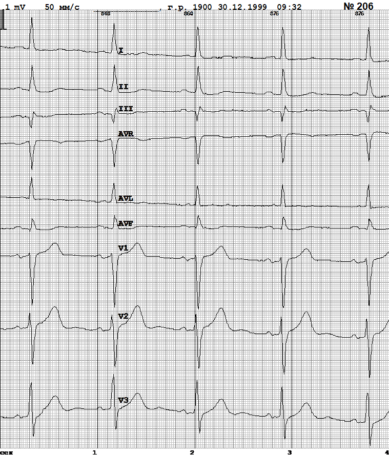 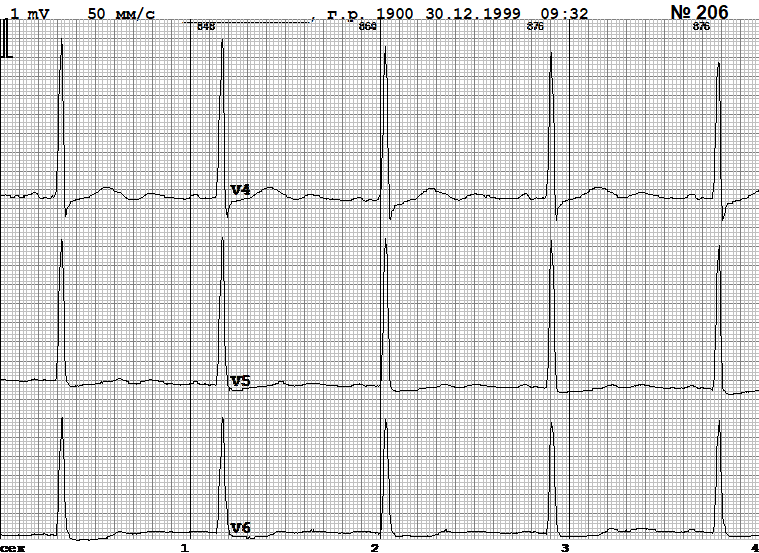
Рис. 1. ЭКГ пациента Б. Заключение. Ритм синусовый. Вольтаж удовлетворительный. Электрическая ось - горизонтальное положение. Гипертрофия левого желудочка с нарушением процессов реполяризации.
Эхокардиография. Левое предсердие - размер в парастернальной позиции 47 мм, индекс объема 36,6 мл/м2. Толщина межжелудочковой перегородки 13 мм, задней стенки левого желудочка 14 мм.
ЗАДАНИЕ 1:
Этиология. АГ - многофакторное заболевание. Его развитие обусловлено взаимодействием генетических нарушений и приобретенных изменений регуляции кровообращения.
Факторы риска
1. Мужской пол;
- Мужской пол;
- Возраст (мужчины > 55 лет; женщины > 65 лет);
- Курение;
- Дислипидемия: общий холестерин> 4,9 ммоль/л (190 мг/дл)
и/или ХС ЛНП > 3,0 ммоль/л (115 мг/дл)
и/или ХС ЛВП <1,0 ммоль/л (40 мг/дл) для мужчин
и <1,2 ммоль/л (46 мг/дл) для женщин
и/или триглицериды > 1,7 ммоль/л (150 мг/дл); - Глюкоза плазмы натощак 5,6–6,9 ммоль/л (102–125 мг/дл);
- Нарушение толерантности к глюкозе;
- Ожирение (ИМТ > 30 кг/м2);
- Семейный анамнез ранних сердечно-сосудистых заболеваний (у мужчин <55 лет; у женщин <65 лет);
- Абдоминальное ожирение (объем талии > 102 см для мужчин и > 88 см для женщин)
Патогенез. Развитие АГ обусловлено следующими патогенетическими факторами:
- генетические факторы: мутация генов, ответственных за синтез отдельных компонентов ренин-ангиотензин-альдостероновой системы (РААС), адренергических рецепторов;
- нарушение водного, солевого обмена: чрезмерное потребление поваренной соли с пищей у лиц с врожденными или приобретенными нарушениями почечной экскреции натрия;
- перенапряжение высшей нервной деятельности, приводящее к расстройству регуляции сосудистого тонуса; нарушения барорефлекторного контроля сердечной деятельности, выявляемые на начальных стадиях ГБ и нарастающие по мере прогрессирования заболевания;
- нарушение юкстагломерулярного механизма ауторегуляции почечного кровотока, приводящее к задержке натрия в организме;
- нарушения функционального состояния и взаимосвязи систем регуляции АД: повышение активности сосудосуживающих эндокринных систем и факторов - РААС, вазопрессина, катехоламинов, эндотелина 1; уменьшение гипотензивного влияния предсердного и мозгового натрийуретических пептидов, калликреин-кининовой системы, липидов мозгового вещества почек, зависимого от эндотелия релаксирующего фактора (оксида азота), простагландинов;
- снижение электрического потенциала плазматической мембраны эритроцитов, дисфункция эндотелия, снижение высвобождения оксида азота, нарушение реологических свойств крови, ухудшение растяжимости сосудов, структурная трансформация сосудистой стенки (следствие этого - прогрессирование АГ, поражение органов-мишеней, ремоделирование сердца и сосудов).
Изменения нейрогуморальной регуляции АД и структурные изменения сердца и сосудов приводят к нарушению механизмов ауторегуляции равновесия между сердечным выбросом (СВ) и общим периферическим сосудистым сопротивлением (ОПСС): преобладает нарастание ОПСС, прогрессирует АГ.
Жалобы пациентов:
Как правило, бессимптомное течение заболевания.
В ряде случаев
пациенты могут предъявлять жалобы на:
- повышение артериального давления;
- головную боль;
- головокружение;
- шум в ушах;
- мелькание "мушек " перед глазами;
- при кризах – носовое кровотечение, тошнота, рвота, боли в области сердца.
Пациенты могут указывать на наличие сопутствующих сердечно – сосудистых заболеваний и изменений других органов мишеней:
- цереброваскулярные заболевания: ишемический инсульт, геморрагический инсульт, транзиторная ишемическая атака;
- заболевания сердца: ишемическая болезнь сердца (хронические формы), перенесенный инфаркт миокарда;
- заболевания почек: диабетическая нефропатия;
- сосудистые заболевания: расслоение стенки аорты, поражение периферических артерий;
- гипертоническая нейроретинопатия.
Данные анамнеза. У пациентов необходимо уточнить:
- уровень и длительность повышения АД в прошлом, характер течения АГ;
- у женщин – связь АГ с беременностью, менопаузой, приемом гормональных контрацептивов, заместительной гормональной терапией;
- связь АГ с приемом лекарственных препаратов;
- наличие ИБС, СН, поражений ЦНС и периферических сосудов, СД, подагры, заболеваний почек;
- образ жизни, особенности питания;
- курение и физическая активность
- трудовая деятельность, профессиональные вредности;
- семейный анамнез.
Данные общего осмотра. Пациенты, как правило, гиперстенического телосложения, с избыточным весом или ожирением.
Данные пальпации. При пальпации области сердца левожелудочковый толчок, как правило, смещен влево, иногда вниз. Может определяться систолическое дрожание при аневризме восходящего отдела аорты. Пульс, как правило, регулярный, твердый, полный, большой.
Данные перкуссии. При перкуссии определяется смещение левой границы относительной сердечной тупости кнаружи до срединно–ключичной линии и в некоторых случаях от срединно–ключичной линии влево и вниз. Также может определяться расширение границ сосудистого пучка вправо при развитии дилатации или аневризмы аорты.
Данные аускультации. При аускультации сердца I тон в зоне верхушки сердца вначале может не изменяться, в дальнейшем за счет гипертрофии левого желудочка и развития его дилатации он становится ослабленным, часто определяется акцент II тона в зоне аорты в связи с повышением давления в ней. Может выслушиваться IV тон при повышении конечно-диастолического давления в левом желудочке (при диастолической дисфункции левого желудочка), а также III тон при наличии объемной перегрузки левого желудочка и снижении его сократительной способности. При развитии дилатации или аневризмы аорты можно выслушать функциональный систолический шум во II межреберье справа от грудины, там же может выслушиваться грубый систолический шум при коарктации аорты. При появлении относительной недостаточности аортального клапана при аневризме аорты во II межреберье справа от грудины может выслушиваться также и диастолический шум. При развитии относительной недостаточности митрального клапана при дилатации левых камер сердца можно выслушать систолический шум в области верхушки сердца. При аускультации можно выслушать систолический шум в проекции почечных артерий на переднюю брюшную стенку при стенозе почечных артерий.
Диагностика. У пациентов с ГБ оценивают:
- стадию ГБ
- степень АГ
- категорию сердечно-сосудистого риска
Для этого у пациентов проводят:
- Измерение АД, оценку степени АГ
- Оценку факторов риска
- Оценку поражений органов мишеней
- Оценку наличия ассоциированных клинических состояний
В настоящее время по-прежнему используется трехстадийная классификация ГБ, согласно которой выделяют:
- ГБ I стадии, которая включает в себе только факторы риска(предполагает отсутствие поражения органов-мишеней и ассоциированных клинических состояний);
- ГБ II стадии (предполагает присутствие изменений со стороны одного или нескольких органов-мишеней без ассоциированных клинических состояний);
- ГБ III стадии (предполагает наличие ассоциированных клинических состояний).
Оценка факторов риска.
Оценка развития сахарного диабета:
- Глюкоза плазмы натощак ≥7,0 ммоль/л (126 мг/дл) при двух измерениях подряд и/или HbA1c >7% и/или глюкоза плазмы после нагрузки ≥11,1 ммоль/л (198 мг/дл)
Оценка других факторов риска представлена ранее.
Оценка поражений органов мишеней:
- Пульсовое давление (у лиц пожилого и старческого возраста) ≥60 мм рт.ст.;
- Электрокардиографические признаки ГЛЖ (индекс Соколова-Лайона SV1+RV5-6>35 мм; Корнельский показатель (RаVL+SV3) ≥20 мм для женщин, (RаVL+SV3) ≥28 мм для мужчин; Корнельское произведение (RаVL+SV3) мм * QRS мс>2440 мм*мс);
- Эхокардиографические признаки ГЛЖ [индекс ММЛЖ: >115 г/м2 у мужчин, >95 г/м2 у женщин (ППТ);
- Утолщение стенки сонных артерий (комплекс интима-медиа ≥0,9 мм) или бляшка в брахиоцефальных/почечных/подвздошно-бедренных артериях;
- Скорость пульсовой волны ( "каротидно-феморальной ") >10 м/сек;
- Лодыжечно-плечевой индекс систолического давления <0,9;
- ХБП 3 стадии с рСКФ 30–60 мл/мин/1,73 м2(MDRD-формула) или низкий клиренс креатинина <60 мл/мин (формула Cockroft-Gault) или рСКФ 30-60 мл/мин/1,73м2 (формула CKD-EPI);
- Микроальбуминурия (30–300 мг/л) или отношение альбумина к креатинину (30–300 мг/г; 3,4–34 мг/ммоль) (предпочтительно в утренней порции мочи).
Оценка ассоциированных клинических состояний:
- Цереброваскулярная болезнь (ЦВБ): ишемический инсульт, кровоизлияние в мозг, транзиторная ишемическая атака;
- ИБС: инфаркт миокарда, стенокардия, коронарная реваскуляризация методом ЧКВ или АКШ;
- Сердечная недостаточность (II-III стадии по Василенко-Стражеско);
- Клинически значимое поражение периферических артерий;
- ХБП 4 стадии с рСКФ <30 мл/мин/1,73 м2; протеинурия (>300 мг в сутки);
- Тяжелая ретинопатия: кровоизлияния или экссудаты, отек соска зрительного нерва.
Оценка степени АГ проводится по следующим критериям (таблица 1):
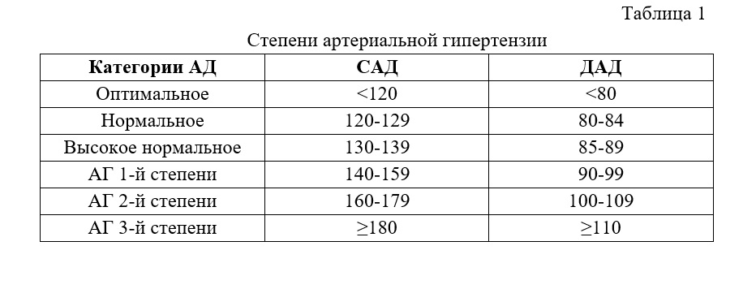Изолированная систолическая гипертензия классифицируется также на 1,2,3 степени по уровню систолического АД.
Оценка категории сердечно-сосудистого риска проводится в соответствии с таблицей 2.
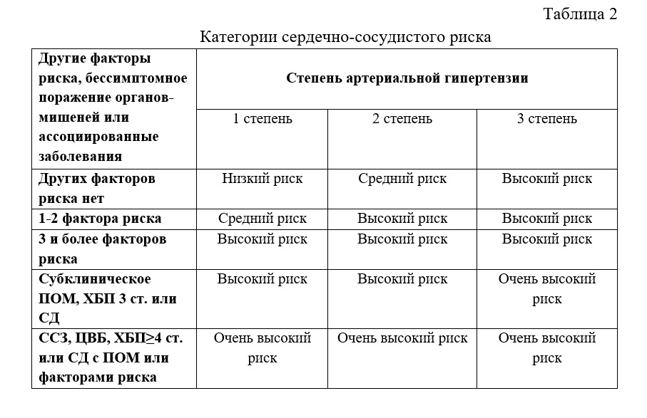В дальнейшем у пациентов ГБ ставится диагноз, который должен включать в себя стадию ГБ, степень АГ и категорию сердечно-сосудистого риска.
Пример: Гипертоническая болезнь II стадии, 3 степень АГ, высокий риск.
Обследование пациента с АГ включает в себя:
Рутинные тесты:
- Гемоглобин и/или гематокрит;
- Глюкозы плазмы натощак;
- Общий холестерин, холестерин липопротеинов низкой плотности, холестерин липопротеинов высокой плотности в сыворотке;
- Триглицериды сыворотки натощак;
- Калий и натрий сыворотки;
- Мочевая кислота сыворотки;
- Креатинин сыворотки (с расчетом СКФ);
- Анализ мочи с микроскопией осадка, белок в моче по тест-полоске, анализ на микроальбуминурию.
- ЭКГ в 12 отведениях.
Дополнительные методы обследования, с учетом анамнеза, данных физикального обследования и результатов рутинных лабораторных анализов:
- гликированный гемоглобин (HbA1c), если глюкоза плазмы натощак >5,6 ммоль/л (102 мг/дл) или если ранее был поставлен диагноз диабета;
- количественная оценка протеинурии (при положительном результате на белок по тест-полоске);
- калий и натрий в моче и их соотношение;
- домашнее и суточное амбулаторное мониторирование АД;
- эхокардиография;
- холтеровское ЭКГ-мониторирование (в случае аритмий);
- ультразвуковое исследование сонных артерий;
- ультразвуковое исследование периферических артерий/брюшной полости;
- измерение скорости пульсовой волны;
- лодыжечно-плечевой индекс;
- фундоскопия.
Расширенное обследование (обычно проводится соответствующими специалистами):
- углубленный поиск признаков поражения головного мозга, сердца, почек и сосудов, обязателен при резистентной и осложненной АГ;
- поиск причин вторичной АГ, если на то указывают данные анамнеза, физикального обследования или рутинные и дополнительные методы исследования.
Исследования, проводимые по показаниям. Уточнение причины вторичной АГ:
– радионуклидное исследование почек, почечных артерий;
– допплерографическое УЗИ аорты и ее ветвей;
– рентгенография черепа (исключение опухолей);
– аортография и селективная почечная артериография;
– КТ и МРТ почек, надпочечников, аорты и ее ветвей;
– полисомнография;
– исследование гормонов в моче и крови;
– в отдельных случаях - биопсия почек.
ОСТРЫЙ КОРОНАРНЫЙ СИНДРОМ
Острый коронарный синдром (ОКС) - обострение ишемической болезни сердца, обозначающий любую группу клинических признаков или симптомов, позволяющих подозревать острый инфаркт миокарда или нестабильную стенокардию.
Термин ОКС был введен в клиническую практику, когда выяснилось, что вопрос об использовании тромболитической терапии должен решаться как можно быстрее до того, как диагноз инфаркта миокарда будет окончательно подтвержден. В настоящее время этот синдром подразделяется на ОКС с подъемом сегмента ST и ОКС без стойкого подъема сегмента ST, в зависимости от данных электрокардиографии. При ОКС с подъемом сегмента ST, ввиду наличия окклюзирующего тромбоза коронарных артерий, возможно назначение тромболических препаратов, в то время как при ОКС без подъема сегмента ST данный вид терапии чаще всего не эффективен.
Клинический случай:
Больной П., 50 лет, поступил в клинику с жалобами на жгучие боли за грудиной с иррадиацией в левое плечо и левую руку, одышку с затруднением вдоха, общую слабость.
Накануне вечером впервые появились сильные сжимающие боли за грудиной и в левом плече. Заболевание связывает с отрицательными эмоциями на работе. Принимал дома валидол, корвалол, нитроглицерин – без эффекта. Утром появились сильнейшие жгучие боли за грудиной, одышка, общая слабость.
Объективно: состояние средней тяжести, кожные покровы бледные, повышенной влажности. В легких везикулярное дыхание. Границы относительной тупости сердца: правая - на 0,5 см вправо от края грудины в 4-ом межреберье, верхняя - в III межреберье по окологрудинной линии,currentEl левая - в V межреберье по левой срединно-ключичной линии. При аускультации тоны сердца тихие. Пульс -133 в минуту, ритмичный. АД 80 и 50 мм рт.ст. Живот мягкий, безболезненный.
ЭКГ - ритм синусовый, 133 в минуту, комплекс QS с резким подъемом сегмента ST и положительными зубцами Т в отведениях V1 – V5.
Эхокардиография. Нарушения регионарной сократимости левого желудочка со снижением глобальной систолической функции. Фракция изгнания левого желудочка 35% по Симпсону.
10 мм/мВ 50 мм/с
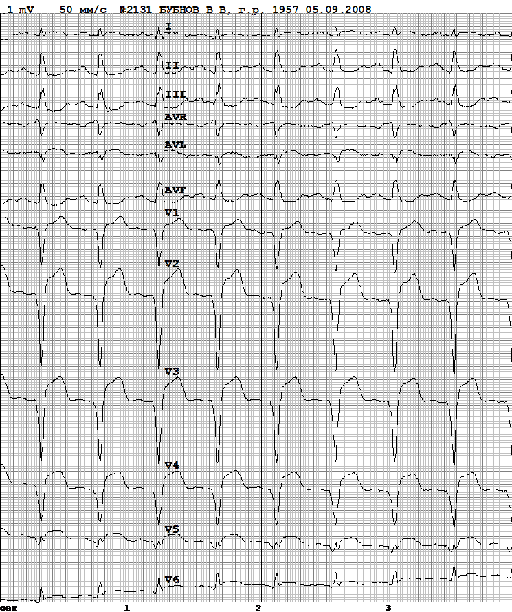
Рис 2. ЭКГ пациента П. Заключение. Синусовая тахикардия. Вольтаж удовлетворительный. ЭОС - нормальное положение. Инфаркт миокарда с зубцом Q передне-перегородочной области, верхушки, боковой стенки ЛЖ, острый период.
ЗАДАНИЕ 2:
Этиология.
- Ишемическая болезнь сердца (атеротромбоз в бассейне коронарных артерий) - более 90% случаев;
- Спазм коронарных артерий - около 9 % случаев;
- Хирургическая обтурация коронарных артерий (например, диссекция артерий при ангиопластике);
- Эмболии коронарных артерий (например, тромбозы при коагулопатиях, тромбоэмболии в коронарные артерии);
- Эндотелиальная дисфункция коронарной артерии (например, микроваскулярный спазм);
- Вторичное поражение без вовлечения коронарных артерий (например, миокардит или синдром Такоцубо).
Патогенез. ОКС с подъемом сегмента ST, как правило, возникает в результате окклюзирующего тромбоза коронарных артерий, при этом тромб чаще всего возникает вследствие разрыва нестабильной атеросклеротической бляшки с большим липидным ядром и тонкой покрышкой, в тоже время окклюзирующий тромб может образовываться в месте дефекта эндотелия коронарной артерии над атеросклеротической бляшкой. Следует помнить, что чаще всего окклюзия развивается в местах гемодинамически незначимого стеноза коронарных артерий. У этих пациентов ввиду высокого риска развития повторных окклюзий коронарных артерий воздействия в области самих атеросклеротических бляшек должны сочетаться с лекарственной терапией, направленной на снижение вероятности образования тромбов (антиагрегантная, антикоагулянтная терапия). Образующиеся тромбы могут быть источниками эмболий в дистальное сосудистое русло сердца, приводящие к образованию мелких очагов некроза миокарда, а также препятствующих восстановлению кровоснабжения миокарда после устранения окклюзии.
ОКС без подъема сегмента ST, как правило, связан с развитием неокклюзирующего тромбоза коронарных артерий, приводящего к неполной обструкции артерии с сохранением редуцированного дистального кровотока, вследствие чего развивается повреждение удаленных субэндокардиальных участков. При этом виде ОКС тромболитическая терапия не показана, ввиду неокклюзирующего тромбоза коронарных артерий. Другой механизм развития повреждения миокарда связан с отрывом рыхлых компонентов тромботических масс с последующей обтурацией дистального русла.
Течение острого коронарного синдрома и прогноз пациентов. Ишемическая болезнь сердца является причиной 1,8 миллионов смертей ежегодно, при этом составляя около 20% от всех летальных исходов в Европе.
ОКС без подъема сегмента ST, как известно, встречается чаще, чем ОКС с подъемом сегмента ST. ОКС является рабочим диагнозом, который ставит врач при первичном осмотре пациента до получения данных, подтверждающих или опровергающих развитие инфаркта миокарда, однако вид ОКС (с подъемом или без подъема сегмента ST) определяющим образом будет влиять на тактику лечения данного пациента. В дальнейшем, после получения подтверждающих сведений (как правило, в течение 24 часов), диагноз ОКС должен трансформироваться в инфаркт миокарда с подъемом сегмента ST, инфаркт миокарда без подъема сегмента ST или в нестабильную стенокардию на основании изложенных ниже критериев.
Следует отметить, что, несмотря на то, что пациенты с ОКС подъемом сегмента ST имеют более высокую смертность на госпитальном этапе, эта разница нивелируется через 6 месяцев наблюдения, а в отдаленном периоде смертность пациентов с ОКС без подъема сегмента ST начинает значительно увеличиваться, превышая таковую у пациентов с ОКС с подъемом сегмента ST (в 2 раза после 4 лет наблюдения).
Следует отметить, что смертность среди пациентов с ОКС, инфарктом миокарда зависит от многих различных факторов, таких как преклонный возраст, класс острой сердечной недостаточности по Killip, время "дверь-баллон ", тактика лечения, наличие перенесенного инфаркта миокарда, сахарного диабета в анамнезе, хроническая болезнь почек, количество пораженных коронарных артерий по данным коронарной ангиографии, а также фракция выброса левого желудочка.
Жалобы пациентов:
- Боль в области сердца или за грудиной;
- Одышка;
- Тошнота;
- Головокружение;
- Синкопальные состояния;
- Потливость;
- Сердцебиение.
При остром коронарном синдроме типичным проявлением является боль или тяжесть за грудиной или в левой половине грудной клетки различной интенсивности, жгучего, сжимающего, давящего характера, иррадиирующая в левую руку, шею, челюсть, межлопаточное пространство, возникшая при физической нагрузке или психоэмоциональном перенапряжении, часто сопровождающаяся страхом смерти. Боль может купироваться на короткое время или ослабевать после прекращения физической нагрузки или после приема нитратов, однако у части пациентов эти мероприятия могут оказаться неэффективными. Особенно неблагоприятными в плане прогноза являются пациенты с затяжным (15-20 минут) болевым приступом с выраженной вегетативной реакцией (потливость, мышечная дрожь, тошнота, рвота, нарушения мочеиспускания, сердцебиение), нарастанием признаков сердечной недостаточности и с развитием нарушений ритма сердца.
Следует отметить, что у некоторых пациентов ОКС может протекать атипично в виде нарастающей одышки, синкопальных состояний, болей в эпигастральной области, тошноты и рвоты, различных аритмий. Такие варианты ОКС чаще возникают у пожилых людей, больных сахарным диабетом, деменцией, хронической сердечной недостаточностью, болезнью почек. У части пациентов боли в сердце могут вообще отсутствовать, что нередко затрудняет своевременную диагностику и лечение.
Данные анамнеза:
Инфаркт миокарда в анамнезе;
Стенокардия напряжения в анамнезе;
Дислипидемии в анамнезе;
Факторы риска ИБС (пожилой возраст, мужской пол, курение, отягощенный семейный анамнез, атеросклероз брахиоцефальных артерий или других локализаций, артериальная гипертензия, ожирение и другие факторы);
Реваскуляризация миокарда в анамнезе (баллонная ангиопластика, стентирование);
Коронарное шунтирование в анамнезе.
При расспросе пациентов следует обязательно оценивать факторы, провоцирующие развитие ОКС, такие как анемия, инфекционные заболевания, лихорадка, заболевания эндокринной системы (особенно щитовидной железы), пороки сердца (особенно стеноз устья аорты) и другие.
Данные общего осмотра. Состояние пациентов чаще всего средней тяжести или тяжелое. Пациенты, как правило, возбуждены (при развитии острой сердечной недостаточности или при цереброваскулярном варианте инфаркта миокарда могут быть заторможены). При осмотре кожный покров бледный, часто повышенной влажности, может определяться цианоз (акроцианоз). При развитии сердечной астмы пациенты могут занимать положение ортопноэ. При осмотре области сердца иногда можно увидеть прекардиальную пульсацию, представляющую собой пульсацию в области сердца, возникающую при развитии аневризмы.
Данные пальпации. При пальпации левожелудочковый толчок чаще всего ослаблен или не пальпируется (ввиду снижения сократительной способности миокарда левого желудочка). При пальпации пульс обычно частый, у пациентов с развитием острой сердечной недостаточности он может быть нитевидным, конечности при этом холодные на ощупь.
Данные перкуссии. При перкуссии может определяться смещение верхней и левой границ относительной тупости сердца соответственно вверх и влево (следствие ремоделирования левого желудочка).
Данные аускультации. При аускультации сердца тоны сердца чаще всего тихие, может выслушиваться III тон, чаще всего на фоне тахикардии (ритм галопа). Эти признаки указывают на значительное снижение сократительной способности левого желудочка. При аускультации сердца может выслушиваться систолический шум митральной недостаточности (за счет ишемии/некроза сосочковой мышцы или дилатации фиброзного кольца), а также шум трения перикарда (при развитии аневризмы сердца). Часто у пациентов при аускультации сердца определяется тахикардия (преимущественно за счет гиперсимпатикотонии). Артериальное давление при неосложненном течении ОКС, как правило, повышенное (может снижаться при развитии острой сердечной недостаточности, либо при имеющейся хронической сердечной недостаточности).
При аускультации легких у пациентов с отеком легких на фоне резкого снижения сократимости миокарда левого желудочка часто выслушиваются влажные хрипы.
Диагностика.
Для диагностики ОКС у пациентов используют:
- ЭКГ;
- Лабораторные тесты;
- ЭхоКГ;
- Коронарную ангиографию.
Электрокардиография.
ЭКГ критерии ОКС с подъемом сегмента ST включают в себя новые подъемы сегмента ST в точке J в двух смежных отведениях ≥2,5 мм у мужчин <40 лет, ≥2 мм у мужчин ≥40 лет, или ≥1,5 мм у женщин в отведениях V2-V3 и/или ≥1 мм в других отведениях (при условии отсутствия гипертрофии левого желудочка (ЛЖ) или блокады левой ножки пучка Гиса (БЛНПГ)). Следует отметить, что при задней локализации инфаркта миокарда может отмечаться депрессия сегмента ST в отведениях V1-V3, свидетельствующая о развитии ишемии задне-базальных отделов, особенно при сочетании с положительным зубцом T и подъемом сегмента ST≥0,5 мм в отведениях V7-V9 (дополнительные отведения).
При ОКС без стойкого подъема сегмента ST характерны депрессия или преходящий подъем сегмента ST и/или изменения зубца Т.
Следует учитывать, что наличие депрессии сегмента ST ≥1 мм в 8 или более отведениях (нижнебоковая депрессия сегмента ST), в сочетании с подъемом сегмента ST в aVR и/или V1, чаще всего указывает на многососудистое поражение коронарных артерий или на обструкцию ствола левой коронарной артерии.
В случаях, если исходная ЭКГ без патологических изменений или данные неоднозначны, необходимо регистрировать ЭКГ в динамике (например через 3 часа, 6-9 часов и 24 часа после обращения к врачу, либо немедленно при повторном появлении болей в сердце).
Следует отметить, что нормальная ЭКГ не исключает диагноз ОКС, поскольку может быть зарегистрирована в ранний период развития инфаркта миокарда. В этом случае рекомендуется оценивать зубец T(изменения зубца T чаще всего предшествуют подъему сегмента ST) и регистрировать ЭКГ в динамике.
В клинической практике встречаются ситуации, которые затрудняют диагностику ОКС, например, наличие блокады ножек пучка Гиса (особенно левой ножки), имплантированный желудочковый электрокардиостимулятор. При блокаде левой ножки пучка Гиса (БЛНПГ) можно использовать следующие критерии диагностики ОКС (критерии Сгарбоссы):
- Конкордантная (однонаправленное с максимальным зубцом комплекса QRS) элевация сегмента ST≥1 мм в отведениях с положительным комплексом QRS,
- Конкордантная депрессия сегмента ST ≥1 мм в отведениях V1-V3,
- Дискордантная (разнонаправленная с максимальным зубцом комплекса QRS) элевация сегмента ST ≥5 мм в отведениях с отрицательным комплексом QRS.
- Конкордантная (однонаправленное с максимальным зубцом комплекса QRS) элевация сегмента ST≥1 мм в отведениях с положительным комплексом QRS,
- Конкордантная депрессия сегмента ST ≥1 мм в отведениях V1-V3,
- Дискордантная (разнонаправленная с максимальным зубцом комплекса QRS) элевация сегмента ST ≥5 мм в отведениях с отрицательным комплексом QRS.
Elena B. Sgarbossa - американский кардиолог аргентинского происхождения, в 1996 году разработала критерии диагностики острого инфаркта миокарда у пациентов с болью в грудной клетке и блокадой левой ножки пучка Гиса.
В случае, если у пациента регистрируется ритм желудочкового электрокардиостимулятора, на ЭКГ также визуализируется БЛНПГ, поэтому возможно использовать вышеуказанные критерии при БЛНПГ, однако они менее специфичны.
Наличие блокады правой ножки пучка Гиса (БПНПГ) может затруднять диагностику ОКС.
Лабораторные тесты.
Сердечные тропонины играют ведущую роль в диагностике ОКС, а также в стратификации риска пациентов. По своей чувствительности и специфичности тропонины превосходят традиционные ферменты, такие как креатинфосфокиназа (КФК), МВ-фракция КФК или миоглобин. Увеличение уровня сердечных тропонинов отражает повреждение кардиомиоцитов, которое характерно для ОКС. У пациентов с ишемией миокарда (боль в груди, изменения на ЭКГ и нарушения сократимости миокарда левого желудочка) увеличение уровня тропонина указывает на инфаркт миокарда (ИМ).
У пациентов с ИМ уровень тропонина начинает повышаться в крови в течение около 4 ч после появления симптомов ишемии миокарда. Содержание тропонина может оставаться повышенным максимально до 2-х недель При ОКС без подъема сегмента ST концентрация тропонина, как правило, нормализуется через 48-72 ч. При этом необходимо отметить, что, тропонины T и I не имеют фундаментальных отличий друг от друга. Диагностически значимым для ОКС является уровень сердечного тропонина, выше одного значения уровня, характерного для 99-й процентили здоровой популяции (99 процентиль получается из всей совокупности уровней тропонина в популяции, путем откидывания 1% наибольших значений и взятия наибольшего значения из оставшихся 99%). В тоже время, этот уровень тропонина будет различным, в зависимости от конкретного диагностического набора и его производителя, поэтому 99 процентиль для высокочувствительного тропонина может составлять 14-40 нг/л. и должен описываться фирмой-производителем. Нормой для сердечных тропонинов большинство авторов считают 2-5 нг/л (0,002-0,005 нг/мл).
Среди наиболее распространенных показателей некроза миокарда миоглобин является самым ранним маркером, так как его концентрация увеличивается в крови через 1-4 часа от первых симптомов ОКС, сердечные тропонины - более поздние маркеры, концентрация которых увеличивается через 4-12 часов от первых симптомов ОКС, МВ-фракция креатинфосфокиназы (КФК-МВ) – "промежуточный " маркер, концентрация которого увеличивается через 4-6 часов от начала заболевания. В тоже время, уровень миоглобина остается повышенным в кровотоке в течение 24 часов, КФК-МВ - 72-96 часов, сердечных тропонинов - 7-14 суток (до двух недель).
Эхокардиография. Эхокардиография (ЭхоКГ) проводится у пациентов с ОКС с целью оценки регионарной сократимости левого и правого желудочков, состояния клапанного аппарата сердца, исключения постинфарктных осложнений и тромбоза полости левого желудочка. Следует отметить, что дисфункция левого желудочка является основным прогностическим фактором для пациентов, поэтому проведение ЭхоКГ с расчетом фракции выброса левого желудочка рекомендуется у всех пациентов до выписки из стационара.
При этом проведение ЭхоКГ в экстренном порядке показано у пациентов с кардиогенным шоком и/или гемодинамической нестабильностью или с подозрением на механические осложнения без задержки выполнения коронарной ангиографии, а также в случае неясного диагноза. После выписки из стационара у пациентов с ФВЛЖ ≤40% повторная ЭхоКГ рекомендуется через 6-12 недель после реваскуляризации для оценки показаний к постановки имплантируемых кардиовертер-дефибрилляторов (с целью первичной профилактики жизнеугрожающих нарушений ритма). У пациентов с неинформативной ЭхоКГ (ввиду плохой визуализации) следует рассматривать альтернативные методы визуализации для оценки функции левого желудочка (предпочтительно МРТ).
Коронарная ангиография. Коронарная ангиография является "золотым стандартом " в диагностике ИБС, а также в определении дальнейшем тактики лечения пациента. Посредством коронарографии производится визуализация коронарных артерий пациента с дальнейшим определением тактики его лечения: возможности выполнения чрескожного коронарного вмешательства (ЧКВ) (баллонной ангиопластики и/или стентирования), либо при невозможности, рассмотрения вопроса о проведении коронарного шунтирования. Реперфузионная терапия (ЧКВ и/или тромболитическая терапия) показана всем пациентам с симптомами ишемии длительностью ≤ 12 ч и персистирующим подъемом сегмента ST(ОКС с подъемом ST). При наличии возможности своевременного выполнения тромболизиса у пациентов с ОКС с подъемом сегмента ST, он является менее предпочтительным, чем проведение ЧКВ. Если первичное ЧКВ не может быть выполнено в установленные сроки у пациентов с ОКС с подъемом ST, то рекомендуется проведение тромболитической терапии в течение 12 часов от начала симптомов при отсутствии противопоказаний.
В тоже время, если проведение коронарографии с дальнейшим решением вопроса о проведении реперфузионной терапии показано всем пациентам с ОКС с подъемом сегмента ST, при ОКС без подъема сегмента ST показания к проведению неотложной коронарографии определяются в первую очередь группой риска по шкале GRACE (Global Registry of Acute Coronary Events). Данная шкала используется для оценки госпитальной летальности и смертности пациентов в течение 6 месяцев после выписки. Данная шкала является балльной и включает в себя такие показатели, как возраст пациента, уровень креатинина, наличие остановки сердца при госпитализации, отклонение сегмента ST от изолинии, повышение маркеров некроза миокарда (в первую очередь, сердечных тропонинов), класса сердечной недостаточности по Killip, уровня систолического АД и ЧСС. По каждому из вышеуказанных показателей пациент набирает определенное количество баллов, которое отражает его риск (таблица 3).
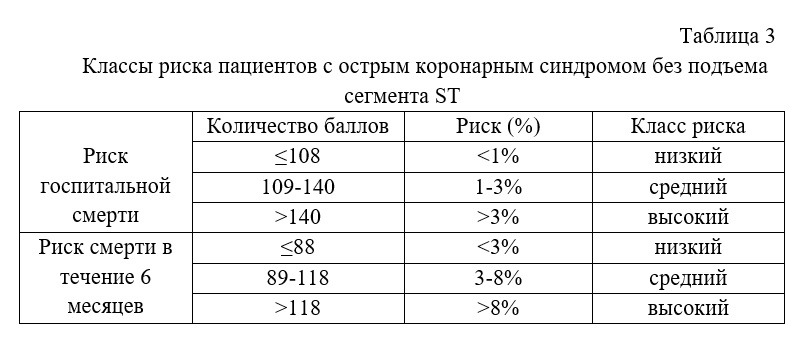Также у всех пациентов с ОСК без подъема сегмента ST необходимо оценивать критерии оценки высокого риска, являющиеся показаниями к выполнению коронарографии, такие как повышение уровня тропонинов, изменения сегмента ST в динамике, сахарный диабет, почечная недостаточности (СКФ менее 60 мл/мин./1,73 м2), снижение функции левого желудочка (ФВ ЛЖ<40%), ранняя постинфарктная стенокардия, недавно выполненное ЧКВ или коронарное шунтирование, а также средний или высокий риск по шкале GRACE.
Таким образом, исходя из вышеуказанного, можно смоделировать следующие клинические ситуации у пациентов с ОКС:
1. У пациентов с ОКС с подъемом сегмента ST и симптомами ишемии в течение 12 часов или менее показано проведение неотложной коронарографии в течение 2 часов.
2. У пациентов с ОКС без подъема сегмента ST c очень высоким риском, имеющих рефрактерную стенокардию, сердечную недостаточность, угрожающие желудочковые аритмии или нестабильную гемодинамику показано выполнение неотложной коронарографии, в течение 2 часов.
3. У пациентов с ОКС без подъема сегмента ST с высоким риском по шкале GRACE (более 140 баллов)и наличием хотя бы одного критерия очень высокого риска (см. выше) показано проведение неотложной коронарографии в течение 24 часов.
4. У пациентов с ОКС без подъема сегмента ST со средним или низким риском по шкале GRACE (140 баллов или меньше) и наличием хотя бы одного критерия очень высокого риска (см. выше), коронарография может быть отложена и выполнена в течение 72 часов после поступления в стационар.
5. У пациентов с ОКС без подъема сегмента ST с низким риском по шкале GRACE (108 или меньше баллов), у которых нет симптомов ишемии миокарда, выполнение коронарографии не показано. Этим пациентам перед выпиской из стационара выполняют нагрузочное тестирование (стресс-ЭхоКГ). В случае, если при проведении стресс-ЭхоКГ определяется обратимая ишемия миокарда, пациенту проводится коронарография, если ишемия не определяется - пациент выписывается из стационара.
СИНДРОМ ОСТРОЙ СЕРДЕЧНОЙ НЕДОСТАТОЧНОСТИ
Острая сердечная недостаточность (ОСН) - клинический синдром, который характеризуется быстрым развитием симптомов нарушения систолической и/ или диастолической функции сердца (снижение сердечного выброса, недостаток перфузии органов и тканей, повышение давления в легочных капиллярах, застой крови в органах и тканях) (ВНОК, 2006).
ОСН - термин, который используется для описания быстрого начала или резкого ухудшения симптомом СН (ESC, 2016).
ОСН развивается при резком снижении сократительной способности миокарда при первичной дисфункции (у пациентов без нарушения функции сердца по данным анамнеза) или вследствие острой декомпенсации хронической СН.
Клинический случай:
Пациентка Н., 57 лет, предъявляет жалобы на приступ удушья, учащенное сердцебиение, перебои в работе сердца, сопровождающиеся одышкой в покое, усиливающуюся при небольшой физической нагрузке, кашель с выделением розоватой пенистой мокроты.
Из анамнеза: отмечает эпизодическое появление перебоев в работе сердца, сопровождающихся одышкой.
Объективно: температура тела 36,7°C. Общее состояние тяжелое. Кожный покров бледный, акроцианоз.
В легких дыхание везикулярное, до середины лопаток с обеих сторон выслушиваются влажные мелкопузырчатые хрипы. Частота дыхательных движений 30 в минуту в покое. При пальпации области сердца левожелудочковый толчок определяется в V межреберье на 1,5 см кнутри от срединно-ключичной линии. При перкуссии относительно сердечной тупости правая граница определяется в IV межреберье на 1,5 см кнаружи от правого края грудины, верхняя граница определяется в III межреберье по парастернальной линии слева, левая граница – в V межреберье на 1,5 см кнутри от левой срединно-ключичной линии. При аускультации тоны сердца ослаблены, ритм сердца правильный, частота сердечных сокращений 155 в минуту. Артериальное давление 100 и 75 мм.рт.ст. При пальпации пульс регулярный, частота пульса 155 в минуту.
10 мм/мВ 50 мм/с
Рис 4. ЭКГ пациентки Н. Заключение. Трепетание предсердий, правильной формы с тахисистолией желудочков. Вольтаж удовлетворительный. Электрическая ось отклонена вправо. Признаки гипертрофии правого желудочка.
Эхокардиография. Левое предсердие размер в парастернальной позиции 44 мм, индекс объема 38,4 мл/м2. Дилатация правых камер сердца, ствола легочной артерии. Значительное повышение давления в легочной артерии.
Рентгенография органов грудной клетки.
На обзорной рентгенографии органов грудной клетки в прямой проекции определяется усиление сосудистого рисунка, нечеткие контуры сосудов, инфильтрация в перибронхиальных отделах. Сердце увеличено преимущественно за счет правых отделов.
ЗАДАНИЕ 4:
Этиология. К провоцирующим факторам развития ОСН можно отнести: ОКС, тахи- (ФП, ТП, ЖТ) и брадиаритмии, резкое повышение АД, инфекции, злоупотребление алкоголем или наркотиками, нарушение терапии, несоблюдение диеты, прием некоторых лекарственных препаратов (НПВС, кортикостероидов, химиопрепаратов и т.д.), обострение ХОБЛ, ТЭЛА, операции, стресс-индуцированная КМП, метаболические и гормональные нарушения (дисфункция щитовидной железы, диабетический кетоацидоз и другие), инсульт, механические причины (разрыв МЖП, острая митральная регургитация, травмы грудной клетки, эндокардит с недостаточностью клапанов/протезов клапанов, диссекция или тромбоз аорты).
Патогенез. Как правило, ОСН проявляется гиперволемией (легочный застой и/или периферические отеки) или, реже, снижением сердечного выброса с периферической гипоперфузией.
Отек легких сопровождается увеличением давления в капиллярах легких на фоне вышеуказанных провоцирующих факторов с последующим пропотеванием жидкой части крови в просвет альвеол.
По происхождению различают гидростатический и мембраногенный отек легких. Гидростатический отек легких возникает при заболеваниях, когда происходит повышение внутрикапиллярного гидростатического давления крови до 7-10 мм.рт. ст., что приводит к выходу жидкой части крови в интерстициальную ткань легких в количестве, которое превышает возможность её удаления через лимфатические пути. Мембраногенный отек легких развивается у пациентов в случаях первичного повышения проницаемости легочных капилляров, которое может возникать при различных синдромах. Для заболеваний сердца характерен именно гидростатический отек легких.
Кардиогенный отек легких проходит в две фазы: при значительном повышении давления в венах легких (более 25-30 мм рт. ст.) наблюдается транссудация жидкой части крови сначала в интерстициальное пространство (интерстициальный отек легких) и затем и в альвеолы (альвеолярный отек легких). При альвеолярном ОЛ происходит вспенивание жидкости: из 100 мл плазмы может образоваться до 1-1,5 л пены.
Кардиогенный шок - клинический синдром, при котором наряду с артериальной гипотонией (систолическое АД менее 90 мм.рт.ст.) имеются признаки сниженной перфузии органов и тканей (бледность и похолодание кожных покровов с повышенным потоотделением, олиго-анурия, вялость и заторможенность). Основным механизмом развития кардиогенного шока при инфаркте миокарда является критическое падение минутного объема сердца, которое не компенсируется повышением общего периферического сопротивления сосудов.
Течение острой сердечной недостаточности.
ОСН имеет следующие клинические варианты:
- острая декомпенсированная СН;
- гипертензивная ОСН;
- отек легких;
- кардиогенный шок;
- СН с высоким сердечным выбросом;
- правожелудочковая недостаточность.
- острая декомпенсированная СН;
- гипертензивная ОСН;
- отек легких;
- кардиогенный шок;
- СН с высоким сердечным выбросом;
- правожелудочковая недостаточность.
Также выделяют несколько вариантов острой СН, основанных на исследовании кожного покрова больного и аускультации легких для того, чтобы выявить наличие клинических признаков застоя крови ( "влажный "/ "сухой ") и/или периферической гипоперфузии ( "холодный "/ "теплый "). По сочетанию этих параметров выделяют четыре класса:
Класс I - отсутствуют признаки периферической гипоперфузии и застоя в легких ( "теплый и сухой ");
Класс II - отсутствуют признаки периферической гипоперфузии, но определяются признаки застоя в легких ( "теплый и влажный ");
Класс III - определяются признаки периферической гипоперфузии без признаков застоя в легких ( "холодный и сухой ");
Класс IV - определяются признаки периферической гипоперфузии с признаками застоя в легких ( "холодный и влажный ").
Класс II встречается чаще всего. Эта классификация полезна для планирования терапии в начальную фазу и несет прогностическую информацию.
У больных с инфарктом миокарда и острой СН, она может быть классифицирована в соответствии с Killip: класс I - отсутствуют признаки СН; класс II - СН с хрипами в нижней половине легочных полей, ритмом галопа и признаками венозной гипертензии в легких; класс III – тяжелая СН с явным отеком легких; класс IV - кардиогенный шок с САД ≤ 90 мм.рт.ст., олигурией, цианозом и потливостью.
Жалобы пациентов:
- одышка и удушье;
- ортопноэ;
- ночная пароксизмальная одышка (приступы сердечной астмы). Следует помнить, что приступы сердечной астмы фактически соответствуют интерстициальному отеку легких;
- снижение толерантности к физической нагрузке, усталость, утомляемость;
- отеки лодыжек;
- ночной кашель (чаще всего при приступах сердечной астмы);
- свистящее дыхание;
- сердцебиение, перебои в работе сердца;
- снижение диуреза, головокружение, слабость, потливость, холодный пот (при кардиогенном шоке).
Данные анамнеза
- Артериальная гипертензия с кризовым течением;
- Острый коронарный синдром (ОКС);
- Пороки сердца (особенно митральный стеноз);
- Тахиаритмия (например, фибрилляция или трепетание предсердий, желудочковая тахикардия);
- Инфекции (например, пневмония, инфекционный эндокардит, сепсис);
- Несоблюдение потребления соли/жидкости или нарушение терапии;
- Брадиаритмии;
- Злоупотребление алкоголем и наркотиками;
- Прием некоторых лекарственных препаратов (например, нестероидных противовоспалительных препаратов, кортикостероидов, препаратов с отрицательным инотропным действием, кардиотоксичных химиопрепаратов);
- Обострение ХОБЛ;
- ТЭЛА;
- Оперативные вмешательства и их осложнения;
- Метаболические и гормональные нарушения (например, дисфункция щитовидной железы, диабетический кетоацидоз, дисфункция надпочечников, беременность и перипортальные осложнения);
- Цереброваскулярный инсульт;
Механические причины: осложнения ОКС (например, разрыв межжелудочковой перегородки, митральная регургитация), травмы груди, недостаточность естественного или протезированного клапана вследствие эндокардита, диссекция или тромбоз аорты.
Данные общего осмотра. У пациентов с кардиогенным отеком легких можно выявить бледность кожи, цианоз (кожи и видимых слизистых оболочек), акроцианоз, выделение обильной пенистой, иногда с розовым оттенком мокроты изо рта. Пациенты часто занимают положение ортопноэ. При кардиогенном шоке у пациентов определяется выраженная бледность кожи и видимых слизистых оболочек, холодный пот на конечностях, спутанность сознания, головокружение.
Данные пальпации. При пальпации области сердца левожелудочковый толчок, как правило, ослаблен или не пальпируется, правожелудочковый толчок, как правило, не пальпируется.
При пальпации пульса можно выявить нерегулярный пульс с различным наполнением и напряжением при наличии аритмии, может определяться нитевидный пульс.
При пальпации грудной клетки определяется усиление голосового дрожания при отеке легких.
При пальпации печени можно обнаружить ее увеличение. Преимущественно при острой декомпенсации ХСН у пациентов можно определить положительный гепатоюгулярный рефлюкс.
Данные перкуссии. При перкуссии границы сердца часто изменены, определяется расширение левой границы относительной сердечной тупости кнаружи до срединно-ключичной линии и, в некоторых случаях, от срединно-ключичной линии влево. У части пациентов возможно также расширение правой границы относительной сердечной тупости. При перкуссии можно выявить расширение границы сосудистого пучка влево, за счет увеличения легочной артерии.
При перкуссии легких у пациентов с сердечной астмой (интерстициальным отеком легких) можно выявить коробочный тон за счет развития острой эмфиземы легких, притупленно-тимпанический тон в начальной стадии отека легких, притупление перкуторного звука при развитии альвеолярного отека легких или у пациентов с гидротораксом.
При перкуссии печени нередко определяется увеличение ее размеров.
Данные аускультации. При аускультации сердца I тон в зоне верхушки сердца может быть не изменен или ослаблен. Может выслушиваться III тон и, следовательно, ритм галопа (при инфаркте миокарда, дилатации левого желудочка, гипертонической болезни). Иногда может выслушиваться IV тон (при выраженной легочной гипертензии, стенозе устья аорты, гипертрофии правого желудочка). При появлении у пациентов фибрилляции предсердий ритм сердца становится неправильным, тоны сердца различной громкости. В области верхушки сердца может выслушиваться систолический шум при митральной недостаточности, диастолический шум при митральном стенозе. Также могут выслушиваться и другие шумы. У некоторых пациентов можно выслушать шум Грэхема Стилла.
При измерении артериальное давление может быть высоким (при гипертоническом кризе), нормальным или низким (при кардиогенном шоке).
При аускультации легких выслушивается ослабленное везикулярное дыхание, влажные мелко-, средне- и крупнопузырчатые хрипы до угла лопатки или по всем легочным полям (при отеке легких). У пациентов с сердечной астмой и явлениями бронхоспазма могут выслушиваться свистящие хрипы.
Диагностика. Принимая во внимание недостаточную чувствительность и специфичность клинических симптомов, тщательное клиническое обследование рекомендуется сопровождать следующими дополнительными исследованиями:
Инструментальная диагностика.
Рентгенография грудной клетки у части пациентов может быть полезным исследованием для диагностики ОСН. К частым рентгенографическим признакам ОСН можно отнести легочный венозный застой, плевральный выпот, интерстициальный или альвеолярный отек легких и кардиомегалию, однако следует учитывать, что до 20% пациентов с ОСН могут иметь нормальную рентгенографическую картину.
ЭКГ при ОСН часто демонстрирует те или иные изменения и имеет высокое отрицательное прогностическое значение. Она также является полезной для выявления основного заболевания сердца и возможных его осложнений (фибрилляция предсердий, острая ишемия миокарда).
Проведение экстренной ЭхоКГ осуществляется только пациентам с гемодинамической нестабильностью (например, при кардиогенном шоке), а при подозрении на угрожающие для жизни структурные или функциональные расстройства сердечной деятельности (механические осложнения, острая клапанная регургитация, расслаивающая аневризма аорты). На раннем этапе (предпочтительно в течение 48 часов) ЭХОКГ следует проводить пациентам с впервые возникшей ОСН, а также с неизвестной функцией сердца.
К лабораторным тестам у пациентов с ОСН относят в первую очередь NP (натрийуретические пептиды).При поступлении в приемное отделение или отделение интенсивной терапии, следует измерять уровень NP плазмы крови (BNP – мозговой натрийуретический пептид, NTproBNP– предшественник мозгового натрийуретического пептида или MR-proANP – среднерегиональный предсердный натрийуретический пептид) у всех больных с острой одышкой и подозрением на ОСН, для подтверждения или исключения диагноза ОСН. Нормальные уровни NP делают диагноз ОСН маловероятным, в тоже время, повышенные уровни NP не подтверждают диагноз ОСН, так как это может быть связано с другими причинами (пороговые значения для BNP<100 пг/мл, NT-proBNP<300 пг/мл, MR-pro ANP<120 пг/мл).
При поступлении всем пациентам с ОСН, кроме NP должны исследоваться также и другие лабораторные тесты, такие как тропонин, остаточный азот крови (или мочевина), креатинин, электролиты (натрий, калий), тесты печеночной функции, тиреотропный гормон (ТТГ), глюкоза и полный клинический анализ крови, D-димер (у пациентов с подозрением на ТЭЛА).
Рутинный газовый анализ артериальной крови у пациентов с ОСН как правило не требуется ввиду широкой доступности пульсоксиметрии (может быть полезен в тех случаях, когда необходимо точное измерение парциальных давлений O2 и СО2).
Измерение уровня сердечных тропонинов рекомендуется для диагностики острого коронарного синдромакак основной причины ОСН. Тем не менее, необходимо иметь ввиду, что повышение концентрации тропонина обнаруживают у подавляющего числа пациентов с ОСН, часто и без явной ишемии миокарда или ОКС. Кроме того, у больных с ТЭЛА в качестве основной причины острой декомпенсации ХСН, повышение уровня тропонина как правило полезно для стратификации риска и определения тактики ведения.
Уровень креатинина, свободного азота крови и электролитов у пациентов с ОСН рекомендуется определять каждые 1-2 дня во время госпитализации вплоть до выписки (более частое определение может быть оправдано тяжесть случая).
Оценка уровня прокальцитонина может проводиться у пациентов с ОСН при подозрении на наличие сопутствующих инфекций, в частности, для дифференциальной диагностики пневмонии а также для определения тактики антибактериальной терапии.
Показатели печеночной функции у пациентов с ОСН часто изменяются вследствие гемодинамических расстройств (сниженный выброс и увеличение венозного застоя), они позволяют проводить стратификацию риска неблагоприятного прогноза и полезны для выбора оптимальной стратегии лечения.
Оценку уровня ТТГ следует проводить у всех пациентов с впервые диагностированной ОСН, учитывая, что гипотиреоз и гипертиреоз могут усугублять течение ОСН.
СИНДРОМ ХРОНИЧЕСКОЙ СЕРДЕЧНОЙ НЕДОСТАТОЧНОСТИ
Хроническая сердечная недостаточность (ХСН) – это заболевание с характерным комплексом симптомов (одышка, утомляемость и снижение физической активности, отеки и др.), связанные с неадекватной перфузией органов и тканей в покое или при нагрузке и часто с задержкой жидкости в организме.
ХСН – это патофизиологический синдром, при котором в результате того или иного заболевания сердечно-сосудистой системы или под влиянием других этиологических причин происходит нарушение способности сердца к его наполнению или опорожнению, что сопровождается развитием дисбаланса нейрогуморальных систем, с развитием вазоконстрикции и задержкой жидкости, что приводит к дальнейшему нарушению функции сердца (ремоделированию) и других органов мишеней (пролиферации), а также к несоответствию между обеспечением органов и тканей организма кровью и кислородом с их метаболическими потребностями.
Клинический случай
Пациент Н., 63 лет, поступил в клинику с жалобами на одышку при незначительной физической нагрузке, а иногда и в покое, периодическое сердцебиение, отеки на ногах.
Длительное время страдает ИБС. Перенес два инфаркта миокарда, после второго инфаркта миокарда отмечал появление и постепенное прогрессирование вышеуказанных симптомов.
Объективно: общее состояние больного средней тяжести, положение вынужденное с высоким изголовьем, цианоз губ, акроцианоз. Отеки на ногах до верхней трети голеней. Одышка 30 дыханий в 1 минуту. При перкуссии легких определяется притупление перкуторного звука в нижних отделах с обеих сторон, там же резко ослабленное везикулярное дыхание при аускультации.
Границы относительной тупости сердца: правая в IV межреберье на 2 см кнаружи от правого края грудины, верхняя - во II межреберье, левая - в V межреберье на 1,5 см кнаружи от левой срединно-ключичной линии. При аускультации тоны сердца тихие, ритм правильный, выслушивается негрубый систолический шум в области верхушки сердца с иррадиацией в левую аксилярную область. ЧСС 57 в минуту. Пульс 57 в 1 мин., ритмичный. АД 100 и 60 мм.рт.ст. Печень на 4 см выступает из подреберья, умеренно болезненная.
10 мм/мВ 50 мм/с
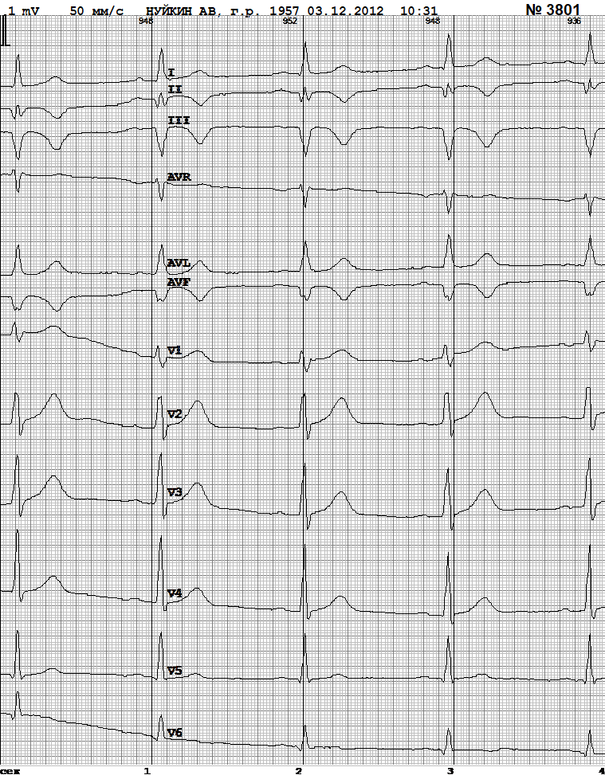
Рис 5. ЭКГ пациента Н. Заключение: Синусовый ритм. Вольтаж удовлетворительный. Электрическая ось сердца резко отклонена влево. Рубцовые изменения миокарда (заживший инфаркт миокарда) нижней стенки ЛЖ.
ЗАДАНИЕ 5.
Этиология. Основными причинами, приводящими к развитию ХСН в Российской Федерации, являются артериальная гипертензия (АГ), ишемическая болезнь сердца (ИБС), перенесенный инфаркт миокарда или острый коронарный синдром (ОКС), сахарный диабет (СД). Наиболее часто у пациентов с ХСН наблюдается комбинация ИБС и АГ. Также к развитию ХСН могут приводить хроническая обструктивная болезнь легких (ХОБЛ), хроническая и пароксизмальная формы фибрилляции предсердий, перенесенное острое нарушение мозгового кровообращения.
Распространенность ХСН в различных регионах Российской Федерации колеблется в пределах 7–10%. Более 65% пациентов с ХСН имеют возраст старше 60 лет.
Патогенез. Основным пусковым механизмом формирования ХСН является снижение сократительной способности миокарда и падение сердечного выброса, что приводит к снижению перфузии ряда органов и активации компенсаторных механизмов (симпатико-адреналовой системы (САС), ренин-ангиотензин-альдостероновой системы (РААС) и др.).
Катехоламины (адреналин, норадреналин) приводят к развитию периферической констрикции артериол и венул, что способствует увеличению венозного возврата к сердцу и нормализации сниженного сердечного выброса. Однако в дальнейшем активация САС приводит к прогрессированию ХСН (катехоламины активируют РААС, развивающаяся тахикардия ухудшает диастолическое наполнение сердца).
Формирующийся спазм почечных артериол в сочетании с гипоперфузией почек на фоне ХСН приводит к активации РААС, что сопровождается гиперпродукцией ангиотензина II (мощный вазопрессор; потенцирует гипертрофию и ремоделирование миокарда) и альдостерона (повышает реабсорбцию натрия, активирует продукцию антидиуретического гормона (АДГ), способствующего задержке воды). Увеличение объема циркулирующей крови (ОЦК) с одной стороны нормализует сердечный выброс (компенсаторная реакция), с другой – потенцирует дилатацию и повреждение сердца (декомпенсация).
Большое значение в формировании ХСН имеет эндотелиальная дисфункция сосудов и гиперпродукция ряда цитокинов.
Классификация. Существуют различные классификации хронической сердечной недостаточности.
По фракции выброса левого желудочка (ЛЖ):
- ХСН с низкой ФВ (менее 40%);
- ХСН с промежуточной ФВ (от 40% до 49%);
- ХСН с сохраненной ФВ (50% и более).
- ХСН с низкой ФВ (менее 40%);
- ХСН с промежуточной ФВ (от 40% до 49%);
- ХСН с сохраненной ФВ (50% и более).
По стадиям ХСН:
- I стадия. Начальная стадия заболевания (поражения) сердца. Гемодинамика не нарушена. Характеризуется скрытым течением. Бессимптомная дисфункция ЛЖ;
- IIА стадия. Клинически выраженная стадия заболевания (поражения) сердца. Проявляется умеренным нарушением гемодинамики в одном из кругов кровообращения. Адаптивное ремоделирование сердца и сосудов;
- IIБ стадия. Тяжелая стадия заболевания (поражения) сердца. Наблюдаются выраженные изменения гемодинамики в обоих кругах кровообращения. Дезадаптивное ремоделирование сердца и сосудов;
- III стадия. Терминальная стадия поражения сердца. Характеризуется выраженными изменениями гемодинамики и тяжелыми (необратимыми) структурными изменениями органов–мишеней (сердца, легких, сосудов, головного мозга, почек). Финальная стадия ремоделирования органов.
По функциональному классу:
- I ФК. Ограничения физической активности отсутствуют: привычная физическая активность не сопровождается быстрой утомляемостью, появлением одышки или сердцебиения. Повышенную нагрузку пациент переносит, но она может сопровождаться одышкой и/или замедленным восстановлением сил;
- II ФК. Незначительное ограничение физической активности: в покое симптомы отсутствуют, привычная физическая активность сопровождается утомляемостью, одышкой или сердцебиением;
- III ФК. Заметное ограничение физической активности: в покое симптомы отсутствуют, физическая активность меньшей интенсивности по сравнению с привычными нагрузками сопровождается появлением симптомов;
- IV ФК. Невозможность выполнить какую-либо физическую нагрузку без появления дискомфорта; симптомы сердечной недостаточности присутствуют в покое и усиливаются при минимальной физической активности.
Примеры формулировки диагноза
- ИБС. Стабильная стенокардия напряжения III ФК, перенесенный инфаркт миокарда, ХСН со сниженной ФВ (32%), IIА стадия, III ФК.
- Гипертоническая болезнь 2стадия, II степень, 4 группа риска. ХСН с сохраненной ФВ (58%), I стадия, II ФК.
Жалобы. Характерными клиническими проявлениями ХСН являются: одышка, слабость, повышенная утомляемость, сердцебиение, ортопноэ, отеки. Также при ХСН может наблюдаться ночной кашель, сердцебиение.
К специфичным признакам ХСН относятся: набухание шейных вен, появление гепатоюгулярного рефлюкса, наличие III тона сердца (ритм галопа), смещение левожелудочкового (верхушечного) толчка влево.
К менее специфичным признакам относятся: формирование периферических отеков, наличие застойных хрипов в легких, появление притупленного перкуторного тона в нижних отделах легких (плевральный выпот), тахикардия, появление нерегулярного пульса, одышка, гепатомегалия, асцит, кахексия, увеличение веса (>2 кг в неделю).
Данные общего осмотра. Пациенты с ХСН могут принимать вынужденное сидячее или полусидячее положение с опущенными вниз ногами или горизонтальное положение с высоко поднятым изголовьем. При осмотре наблюдается бледность кожных покровов, акроцианоз, цианоз слизистых оболочек.
У пациентов с ХСН формируются периферические отеки (вплоть до асцита и гидроторакса). Они располагаются симметрично, оставляют после надавливания пальцем глубокую ямку, которая затем постепенно сглаживается; кожа в области отеков гладкая, блестящая, вначале мягкая, а в дальнейшем становится плотной. При развитии правожелудочковой недостаточности появляется набухание и пульсация шейных вен.
Может выявляться положительный симптом Плеша (печеночно-югулярная проба, гепатоюгулярный рефлюкс) – при спокойном дыхании больного производится надавливание ладонью на увеличенную печень, что вызывает усиленное набухание шейных вен.
Janos Plesch (1878 - 1957) - был академическим патологом, физиологом и врачом, который жил в Берлине на протяжении большей части своей ранней трудовой жизни. Он был хорошо известен на международном уровне для своих клинических исследований по циркуляции крови, включая изобретение первого удобного устройства для измерения артериального давления.
При развитии тяжелой сердечной недостаточности может наблюдаться атрофия скелетной мускулатуры, снижение массы тела, резко выраженное уменьшение подкожно-жировой клетчатки ( "сердечная кахексия ").
Физикальное обследование. При аускультации легких можно выслушать ослабление везикулярного дыхания (вплоть до отсутствия дыхательных шумов) в нижних отделах легких, влажные хрипы (симметричные от нижних отделов с распространением по всей поверхности легких).
При перкуссии отмечается смещение границ относительной тупости, свидетельствующее об увеличении размеров сердца.
При аускультации сердца выслушивается ослабление I тона над верхушкой сердца, может определяться ритм галопа, шумы относительной недостаточности атриовентрикулярных клапанов. Иногда, при выраженной легочной гипертензии, стенозе устья аорты, гипертрофии правого желудочка может выслушиваться IV тон.
При проведении пальпации живота можно выявить увеличение печени, при перкуссии живота– увеличение размеров печени (по Курлову), наличие свободной жидкости в брюшной полости.
Михаил Георгиевич Курлов (1859-1932) – русский терапевт и бальнеолог, доктор медицины, экстраординарный профессор по частной патологии и терапии Томского университета. Михаил Георгиевич Курлов в 1878 году поступил в Медико-хирургическую академию, которую с отличием закончил в 1883 году. В 1886 году стал доктором медицины за диссертацию: "Усвоение и обмен азотистых веществ при кормлении чахоточных по способу Дебова ". Был направлен в командировку за границу для совершенствования, занимался в Мюнхене у профессоров Цимсена, Боллингера, Эммериха, в Берлине у Эрлиха и Гергардта. После возвращения избран приват-доцентом клиники внутренних болезней. В 1890 году назначен экстраординарным профессором Томского университета по частной патологии и терапии. С 1890 по 1929 годы Михаил Курлов возглавлял кафедру терапии медицинского факультета Томского госуниверситета, занимался гематологией, разработал классификацию минеральных вод. По указаниям М.Г.Курлова томским благотворителем В. Т. Зиминым был выстроен Томский бактериологический институт.
Лабораторные методы исследования.
Для исключения анемии и других причин, приводящих к одышке, показано назначение общего анализа крови.
Наиболее информативными биохимическими маркерами являются натрийуретические гормоны (BNP и NTproBNP). Определение их содержания в крови показано для исключения иной причины одышки и определения прогноза. Диагностически значимыми являются уровень BNP более 35 пг/мл, уровень NTproBNP – более 125 пг/мл.
Инструментальные методы исследования. Для определения сердечного ритма, частоты сердечных сокращений (ЧСС), формы комплекса QRS, а также других значимых нарушений применяют электрокардиографию (ЭКГ)в 12-ти отведениях.
Трансторакальную эхокардиографию (ЭхоКГ) применяют для оценки структуры миокарда, наличия систолической и диастолической дисфункции, а также для выявления и оценки патологии клапанного аппарата сердца.
У пациентов с риском развития СН для выявления дисфункции миокарда на доклинической стадии могут назначаться дополнительные технологии (тканевую допплерографию, показатели деформации миокарда, в том числе Strain и Strain rate).
При проведении рентгенографии грудной клетки можно обнаружить кардиомегалию (кардиоторакальный индекс, представляющий собой отношение поперечника тени сердца к внутреннему поперечнику грудной клетки, более 50%), венозный застой или признаки отека легких.
У пациентов со сложной сочетанной врожденной патологией сердца в ряде случаев рекомендовано проведение магнитно-резонансная томографии (МРТ)для оценки структуры и функции миокарда (включая правые отделы), а также при подозрении на миокардит, амилоидоз, гемохроматоз.
У пациентов с ХСН в сочетании со стенокардией напряжения, которым в дальнейшем может быть выполнена реваскуляризация миокарда, показано проведение коронарной ангиографии.
Перед проведением трансплантации сердца или имплантации устройств для длительного вспомогательного кровообращения показана катетеризация сердца.
Для оценки ишемии и жизнеспособности миокарда могут применяться стресс-ЭхоКГ с физической или фармакологической нагрузкой, однофотонная эмиссионная компьютерная томография (ОФЭКТ), позитронно-эмиссионная томография (ПЭТ).
Холтеровскоемониторирование ЭКГ показано только при наличии симптомов, предположительно связанных с нарушениями сердечного ритма и проводимости (например, при сердцебиении или обмороках).
Кардиопульмональное нагрузочное тестирование (КПНТ) помогает выяснить причину появления одышки (патология сердца или легких), также оно необходимо при решении вопроса о проведении трансплантации сердца или установке искусственного ЛЖ.
Для оценки толерантности к физической нагрузке и объективизации функционального статуса больных ХСН можно использовать 6-минутный тест ходьбы (6МТХ) (таблица 5).Условия проведения данной пробы: пациент должен пройти по размеченному коридору в приемлемо быстром для него темпе максимальную дистанцию за 6 минут (если пациент остановится для отдыха, затраченное на это время включается в общий зачет). Пройденная дистанция менее 300 м соответствует неблагоприятному прогнозу.
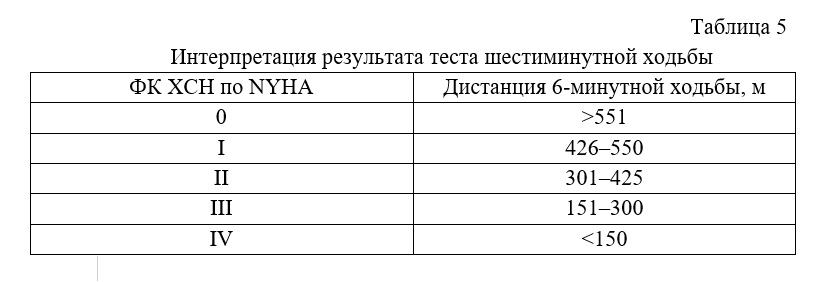Для более точной оценки тяжести клинических проявлений и эффективности проводимого лечения ХСН предложена Российская Шкала оценки клинического состояния (ШОКС).
Во время осмотра пациента врач задает вопросы и проводит исследования соответственно пунктам от 1 до 10. В карте отмечается число баллов, соответствующее ответу, которые в дальнейшем суммируются. Максимально пациент может набрать 20 баллов, что соответствует терминальной стадии ХСН, 0 баллов – полному отсутствию признаков ХСН. По ШОКС баллы распределяются следующим образом: I ФК ≤ 3 баллов; II ФК 4–6 баллов; III ФК 7–9 баллов; IV ФК > 9 баллов (таблица 6).
Таблица 6
Шкала оценки клинического состояния при ХСН (ШОКС)
(модификация Мареева В. Ю., 2000)
1. Одышка: 0 – нет, 1 – при нагрузке, 2 – в покое.
2. Изменился ли за последнюю неделю вес: 0 – нет, 1 – увеличился.
3. Жалобы на перебои в работе сердца: 0 – нет, 1 – есть.
4. В каком положении находится в постели: 0 – горизонтально, 1 – с приподнятым головным концом (2+ подушки), 2 – плюс просыпается от удушья, 3 – сидя.
5. Набухшие шейные вены: 0 – нет, 1 – лежа, 2 – стоя.
6. Хрипы в легких: 0 – нет, 1 – нижние отделы (до 1/3), 2 – до лопаток (до 2/3), 3 – над всей поверхностью легких.
7. Наличие ритма галопа: 0 – нет, 1 – есть.
8. Печень: 0 – не увеличена, 1 – до 5 см, 2 – более 5 см.
9. Отеки: 0 – нет, 1 – пастозность, 2 – отеки, 3 – анасарка.
10. Уровень САД: 0 – > 120, 1 – (100-120), 2 – < 100 мм.рт.ст.
АРИТМИЧЕСКИЙ СИНДРОМ
Аритмия сердца - любой сердечный ритм, не являющийся нормальным синусовым.
Клинический случай
Пациент К., 59 лет, поступил в клинику с жалобами на одышку при умеренной физической нагрузке, частые ощущения перебоев в работе сердца и сердцебиение, отеки на ногах. Появление и прогрессирование вышеуказанных симптомов отмечает в течение двух недель, к врачам не обращался.
Объективно: общее состояние средней тяжести, акроцианоз. Отеки в области нижней трети голеней. В легких везикулярное дыхание. Левожелудочковый толчок определяется в V межреберье на 1,0 см. кнаружи от левой срединно-ключичной линии. Границы относительной сердечной тупости: правая - на 1,0 см вправо от края грудины в IV межреберье, верхняя - в IIIмежреберье по окологрудинной линии, левая - в V межреберье на 1,0 см кнаружи от левой срединно-ключичной линии. Тоны сердца различной громкости, ритм неправильный, ЧСС 111 в минуту. АД 135 и 85 мм.рт.ст. Пульс 102 в мин., нерегулярный.
10 мм/мВ 50 мм/с

Рис 6. ЭКГ пациента К. Заключение. Фибрилляция предсердий с тахисистолией желудочков. Вольтаж удовлетворительный. ЭОС - срединное положение.
ЗАДАНИЕ 6.
Различают следующие виды аритмии:
- синусовая тахикардия;
- синусовая брадикардия;
- синусовая аритмия;
- синдром слабости синусового узла;
- пароксизмальная тахикардия (предсердная, атриовентрикулярная (АВ), желудочковая);
- экстрасистолия (предсердная, атриовентрикулярная (АВ), желудочковая);
- фибрилляция и трепетание (предсердий, желудочков).
- синусовая тахикардия;
- синусовая брадикардия;
- синусовая аритмия;
- синдром слабости синусового узла;
- пароксизмальная тахикардия (предсердная, атриовентрикулярная (АВ), желудочковая);
- экстрасистолия (предсердная, атриовентрикулярная (АВ), желудочковая);
- фибрилляция и трепетание (предсердий, желудочков).
10 мм/мВ 50 мм/с
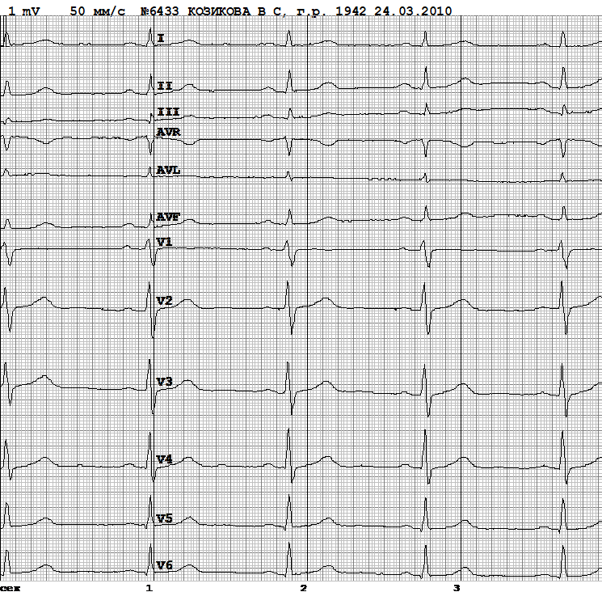
Рис 7. ЭКГ. Заключение. Синусовый ритм. Вольтаж удовлетворительный. Срединное положение электрической оси сердца.
Синусовая тахикардия – синусовый ритм с частотой более 90 в минуту. Причинами синусовой тахикардии может быть увеличение тонуса симпатической нервной системы (физические и эмоциональные нагрузки), снижение тонуса блуждающего нерва, поражение синусового узла, влияние различных токсических агентов, прием ряда медикаментов, инфекционных факторов и лихорадки.
Жалобы часто отсутствуют, но некоторые пациенты могут испытывать сердцебиение, колющие боли в сердце, одышку при физической нагрузке, слабость.
При обследовании удается выслушать увеличение частоты сердечных сокращений, усиление обоих тонов сердца, а при пальпации - частый пульс.
На ЭКГ определяется укорочение интервала R-R, интервал PQ может укорачиваться до 0,12 с., у некоторых пациентов может наблюдаться снижение сегмента ST и увеличение зубца Т.
10 мм/мВ 50 мм/с
Рис 8. ЭКГ. Заключение. Синусовая тахикардия. Вольтаж удовлетворительный. Вертикальное положение электрической оси сердца.
Синусовая брадикардия – синусовый ритм с частотой менее 60 в минуту. Причинами синусовой брадикардии может быть увеличение тонуса блуждающего нерва, снижение тонуса симпатической нервной системы, воздействие на синусовый узел (гипоксия, инфаркт миокарда, особенно задней стенки), инфекционные и токсические влияния (гипотиреоз, брюшной тиф, дифтерия, прием сердечных гликозидов и антиаритмических средств).
Синусовая брадикардия может протекать бессимптомно, однако у части пациентов возникает сердцебиение (замедленное), утомляемость, снижение работоспособности, эпизоды потери сознания. У некоторых пациентов могут появляться боли в сердце, одышка при физической нагрузке. На ЭКГ отмечается увеличение интервала R-R, может быть увеличение интервала PQ до 0,20 с.
10 мм/мВ 50 мм/с
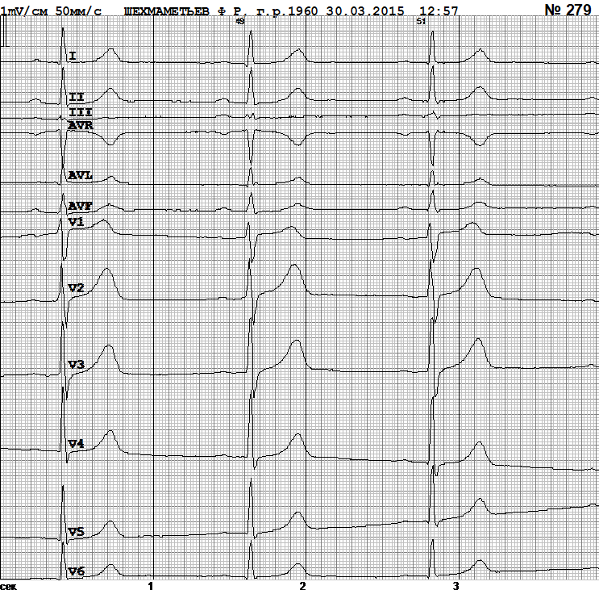
Рис 9.ЭКГ. Заключение. Синусовая брадикардия. Вольтаж удовлетворительный. Горизонтальное положение электрической оси сердца.
Синусовая аритмия – синусовый ритм с вариабельностью интервала РР (RR) 0,16 с. и более. Различают дыхательную и недыхательную синусовую аритмию. При дыхательной аритмии имеется отчетливая связь продолжительности сердечного цикла с фазами дыхания, что обусловлено изменениями тонуса симпатической и парасимпатической нервной системы. Недыхательная синусовая аритмия чаще всего связана с поражением самого синусового узла при ишемической болезни сердца, миокардитах, интоксикациях сердечными гликозидами.
На ЭКГ при синусовой дыхательной аритмии наблюдается колебания продолжительности интервалов R-R более 0,15 с и связаны с дыханием (во время вдоха интервал R-R укорачивается, во время выдоха – увеличивается). Зубец Р, интервал PQ, комплекс QRS и зубец T - не изменены
10 мм/мВ 50 мм/с
Рис. 10. ЭКГ. Заключение. Синусовая аритмия. Вольтаж удовлетворительный. Вертикальное положение электрической оси сердца.
Синдром слабости синусового узла (СССУ) – клинико-патогенетическое понятие, объединяющее ряд нарушений ритма, обусловленных снижением функциональной способности синусового узла. Синдром слабости синусового узла протекает с брадикардией/брадиаритмией и, как правило, с наличием сопутствующих эктопических аритмий.
Клинические проявления синдрома слабости синусового узла могут быть незначительными или включать ощущение слабости, сердцебиения и обморок (синдром Морганьи-Адамса-Стокса).
Джованни БаттистаМорганьи (1682-1771) - итальянский врач, основатель патологической анатомии.
Роберт Адамс (Эдемс) (1791-1875) - ирландский хирург. Президент Королевского колледжа хирургов и Патологического общества Дублина.
Уильям Стокс (Стоукс) (1804 - 1878) - ирландский врач, профессор Дублинского университета. В его честь также названо периодическое дыхание Чейн - Стокса. Им описан также симптом, получивший название "Воротник Стокса " и представляющий собой отек шеи, а также иногда и лица, рук, верхней части груди и области лопаток в сочетании с набуханием кожных вен в связи со сдавлением верхней полой вены опухолью средостения.
Диагноз основывается на данных ЭКГ, Холтеровского мониторирования, нагрузочных проб, а также инвазивных исследований – внутрисердечного электрофизиологического исследования и чреспищеводного электрофизиологического исследования.
Для верификации диагноза необходимо наличие одного или нескольких признаков.
1. Стойкая выраженная синусовая брадикардия с ЧСС≤45-50 в 1 минуту в покое, не связанная с приемом медикаментов.
2. Внезапное периодическое исчезновение синусового ритма (остановка синусового узла) различное по продолжительности, во время которого возможно появление замещающих эктопических ритмов (синусовые паузы≥2,0-2,5 с).
3. Повторяющееся появление синоатриальной блокады, во время которой обычно регистрируются замещающие (выскальзывающие) эктопические сокращения или эктопические ритмы (синусовые паузы≥2,0-2,5 с).
4. Медленное и нестойкое восстановление функции синоатриального узла после электрической или фармакологической кардиоверсии (дефибрилляции), а также после спонтанного прекращения приступа наджелудочковой пароксизмальной тахикардии.
5. Синдром тахикардии – брадикардии. Чередование периодов тахикардии (синусовой тахикардии, пароксизмов фибрилляции или трепетания предсердий, наджелудочковой пароксизмальной тахикардии) и брадикардии (выраженная синусовая брадикардия, остановка синусового узла).
Стойкую выраженную брадисистолическую форму фибрилляции предсердий (при отсутствии лечения сердечными гликозидами) можно рассматривать как эквивалент синдрома слабости синусового узла, если в анамнезе пациента были эпизоды выраженной синусовой брадикардии или синусовые паузы.
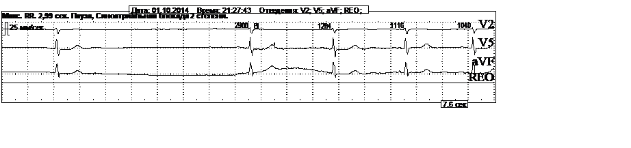Рис. 11.ЭКГ. Заключение. Синоатриальная блокада с паузой до 3 секунд.
Пароксизмальная тахикардия (ПТ) - это внезапно возникающий и внезапно прекращающийся приступ сердцебиения с частотой 140-250 ударов в мин.
Пароксизмальная тахикардия этиологически и патогенетически схожа с экстрасистолией, и несколько экстрасистол, следующих подряд, расцениваются как непродолжительный пароксизм тахикардии. По месту локализации патологических импульсов выделяют предсердную, атриовентрикулярную и желудочковую формы пароксизмальной тахикардии. Предсердная и предсердно-желудочковая пароксизмальные тахикардии объединяются в наджелудочковую (суправентрикулярную) форму.
По этиологическим факторам пароксизмальная тахикардия сходна с экстрасистолией, при этом суправентрикулярная форма обычно вызывается повышением активации симпатического отдела нервной системы, а желудочковая - воспалительными, некротическими, дистрофическими или склеротическими поражениями сердечной мышцы.
При желудочковой форме пароксизмальной тахикардии очаг возникновения эктопического возбуждения располагается в желудочковых отделах проводящей системы – пучке Гиса, его ножках, а также волокнах Пуркинье.
Пароксизм тахикардии всегда имеет внезапное отчетливое начало и такое же окончание, при этом его продолжительность может варьировать от нескольких секунд до нескольких суток.
Начало пароксизма пациент ощущает как толчок в области сердца, переходящий в усиленное сердцебиение. Приступ пароксизмальной тахикардии может сопровождаться головокружением, шумом в голове, чувством сжимания сердца. Реже отмечается преходящая очаговая неврологическая симптоматика – афазия, гемипарезы. Течение пароксизма наджелудочковой тахикардии может протекать с явлениями вегетативной дисфункции: потливостью, тошнотой, метеоризмом, умеренным субфебрилитетом. По окончании приступа на протяжении нескольких часов отмечается полиурия с выделением большого количества светлой мочи низкой плотности.
Затянувшееся течение пароксизма тахикардии может вызывать снижение артериального давления, развитие слабости и обмороков.
В момент приступа пароксизмальной тахикардии кожа и видимые слизистые оболочки бледные, яремные вены иногда набухают, пульсируют синхронно артериальному пульсу, дыхание учащено, пульс ритмичный, резко учащенный, слабого наполнения. При аускультации выслушивается маятникообразный ритм с частотой сердечных сокращений 140-250 в 1 мин. Систолическое давление снижается, диастолическое нормальное или несколько снижено. После прекращения приступа артериальное давление постепенно возвращается к исходному уровню.
Пуркине Ян Эвангелиста (также Пуркинье, чеш.Jan Evangelista Purkyně, 1787-1869, Прага) - чешский физиолог, анатом, политик, педагог, член духовного ордена пиаристов.
Ян Эвангелиста Пуркине родился в семье управляющего имуществом князя Дитрихштейна. Мать происходила из крестьян. Отец мальчика умер, когда Яну было всего 6 лет. В 1793-1797 годах он учится в чешской народной школе в родном городке, затем - в гимназии пиаристов в Моравии. Так как Пуркине был превосходным певцом и скрипачом, он получает оплачиваемое место в местном церковном хоре. Владея первоначально лишь чешским языком, вскоре он овладевает также древнегреческим и латынью. После окончания гимназии в 1804 году Пуркине вступает в орден пиаристов. В 1805 году он заканчивает курсы орденского преподавателя, после чего ведёт второй класс гимназии. В 1806 году Пуркине был отправлен в орденский колледж в Восточной Чехии, где изучает не только церковные дисциплины, но также французский и итальянский языки, а также немецкую философию (Кант, Фихте, Шеллинг). Всего же Пуркине владел 6 языками. В 1808 году он едет в Прагу, где изучает философию, а в 1813-18 годах - медицину, отдавая предпочтение анатомии и физиологии. После получения диплома работает внештатным ассистентом (прозектором) по предметам анатомии и физиологии.
В 1823 году, по настоянию начальника медицинского управления прусской армии Иоганна Непомука Руста, Пуркине приглашается на должность профессора физиологии и патологии в университет Бреслау (ныне Вроцлав). Главное внимание учёного в этот период уделяется физиологии зрения. 13 декабря 1823 года Пуркине встречается в Веймаре с Гёте, дружбу с которым он очень высоко ценил. После приобретения микроскопа в 1832 году и многочисленных переездов его «Физиологического института» Пуркине всё же в 1839 году удаётся создать настоящий экспериментально-физиологический институт в помещении бывшего университетского карцера. Получившие огромное научное значение диссертации учеников Я. Э. Пуркине (всего 14) были до 1839 года написаны, как правило, в его доме. А то скромное помещение в каземате университета, где расположилась лаборатория учёного, вскоре стала называться колыбелью современной европейской гистологии. В доме Пуркине жил и работал также Иоганн Непомук Чермак (в 1847-1849 годы).
Я. Э. Пуркине издал более 80 сочинений на чешском, немецком и польском языках, в том числе и лирического характера (например, переводы стихотворений Фридриха Шиллера). Был лауреатом множества научных премий разных стран Европы, членом около 40 научных и культурных академий и обществ.
Пуркине принадлежит внедрение в научный обиход таких терминов, как энцим (1837), протоплазма (1840) и др. Помимо различных эпонимов в области физиологии органов чувств, именем Пуркине назван целый ряд анатомических терминов:клетка Пуркинье (нервные клетки Stratum gangliosum в Gyricerebellares); волокна Пуркинье (открытые им в 1839 году, возбуждающие электроимпульсы волокнистые окончания кардиальной системы);Stratum gangliosum cerebelli Purkinje (корковая оболочка мозжечка); Stria obliqua Purkinje (линии в Volamanus); Vesicula Purkinje (клеточное ядро в яйце); эффект Пуркинье (открытое им в 1825 году изменение восприятия глазом цветовых сочетаний в сумерках); система Гиса-Пуркинье (проводящая внутрижелудочковая система); тахикардия Гиса-Пуркине (ритмичная вентрикулярная тахикардия); экстрасистолия Гиса-Пуркине (аритмичная вентрикулярная тахикардия).
Я. Э. Пуркине был также изобретателем форолита (Phorolyt), прибора, позволяющего спроектировать на поверхность серию неподвижных или движущихся изображений. В 1970 г. Международный астрономический союз присвоил имя Я. Э. Пуркине кратеру на обратной стороне Луны.
Рис. 12.ЭКГ. Заключение. Эпизод неустойчивой суправентрикулярной тахикардии.
Рис. 13.ЭКГ. Заключение. Эпизод неустойчивой желудочковой тахикардии.
Экстрасистолия – это преждевременное возбуждение и сокращение всего сердца или его отделов, обусловленное возникновением импульса из различных участков проводящей системы сердца.
Импульсы для преждевременного сокращения сердца могут возникать в специализированной ткани предсердий, атриовентрикулярного соединения или желудочках.
В зависимости от этого экстрасистолы делятся на следующие группы:
- предсердные экстрасистолы;
- экстрасистолы, исходящие из АВ-соединения
- желудочковые экстрасистолы.
Пациенты могут предъявлять жалобы на ощущения перебоев в работе сердца, чувство замирания и остановки, ощущение "кувырка " в груди.
При аускультации - преждевременное сокращение сердца, громкий I тон, ослабленный II тон, компенсаторная пауза после экстрасистолы. В первом постэкстрасистолическом цикле I тон ослаблен. При исследовании пульса - преждевременная пульсовая волна малого наполнения, может наблюдаться дефицит пульса (при частой экстрасистолии).
Предсердные экстрасистолы: экстрасистола возникает в предсердии и характеризуется появлением преждевременного комплекса PQRS. Волна Р возникает перед комплексом QRS, однако, по форме, как правило, отличается от таковой в нормальном синусовом комплексе. Интервал P-Q (PR) экстрасистолы, по сравнению с таковым в синусовом комплексе, может быть короче, длиннее или же не отличаться. Чаще интервал P-Q (P-R) составляет 0,12 с или превышает это значение, что помогает отличать нижнепредсердную экстрасистолу от преждевременного комплекса из АВ-соединения. Компенсаторная пауза неполная. Иногда предсердные экстрасистолы могут иметь неправильную или аберрантную форму, при этом комплекс QRSрасширяется и деформируется по типу внутрижелудочковой блокады, перед ним регистрируется зубецP. В некоторых случаях возникшая предсердная экстрасистола не проводится на желудочки, то есть на ЭКГ будет регистрироваться зубец Pбез последующего комплекса QRS (блокированная предсердная экстрасистола).
АВ-узловые экстрасистолы: изолированные АВ-узловые комплексы, которые возникают преждевременно по отношению к основному синусовому циклу. Характеризуются узким или незначительно расширенным комплексом QRS, отрицательной волной Р, регистрирующейся до (при этом интервал PQ, как правило, менее 0,11 с.), после или во время желудочкового комплекса. Компенсаторная пауза неполная.
10 мм/мВ 50 мм/с
Рис. 14.ЭКГ. Заключение. Синусовый ритм. Вольтаж удовлетворительный. Срединное положение электрической оси сердца. Единичная предсердная экстрасистолия.
10 мм/мВ 50 мм/с
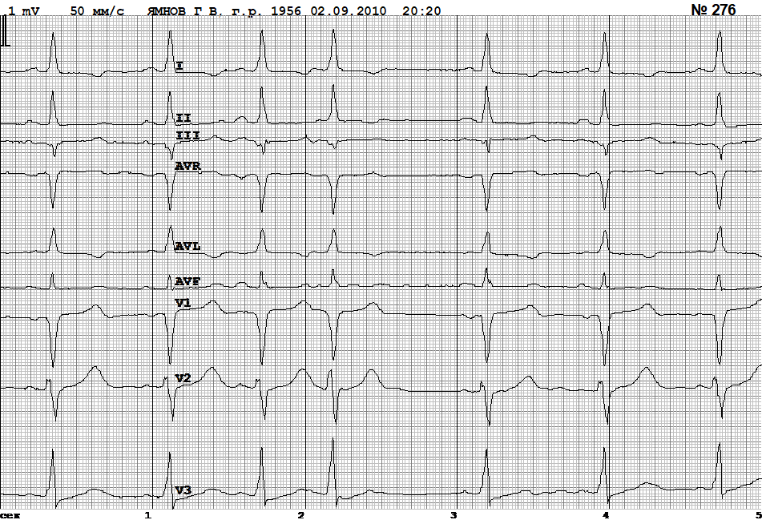
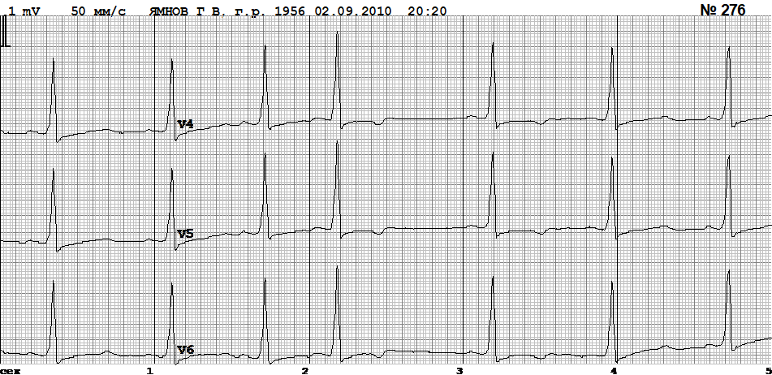
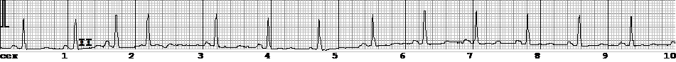
Рис.15.ЭКГ. Заключение. Синусовый ритм. Вольтаж удовлетворительный. Горизонтальное положение электрической оси сердца. Парная предсердная экстрасистолия. Гипертрофия левого желудочка с нарушением процессов реполяризации (индекс Соколова-Лайона 41,4 мм).
Желудочковые экстрасистолы (ЖЭС): комплексы, преждевременные по отношению к собственному циклу деполяризации, которые возникают в желудочках. Они характеризуются расширением и нарушением формы QRST, отсутствием волны Р, полной компенсаторной паузой.
Экстрасистолы одинаковой формы называются мономорфными и возникают, как правило, в одном эктопическом очаге (имеют одинаковый интервал сцепления), экстрасистолы различной формы называются полиморфными и возникают, как правило, в разных эктопических центрах (имеют различный интервал сцепления). 2 подряд экстрасистолы называются парными. Экстрасистола, за которой не следует компенсаторной паузы, называется вставочной (интерполированной). Закономерное появление экстрасистол через 1, 2, 3 нормальных синусовых комплекса называется аллоритмией (бигеминия, тригеминия и квадригеминия соответственно) (таблица 8).
10 мм/мВ 50 мм/с
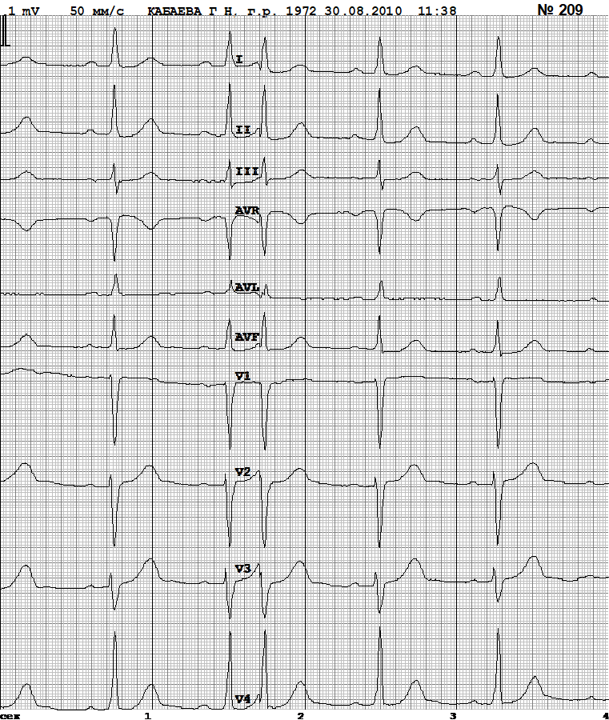
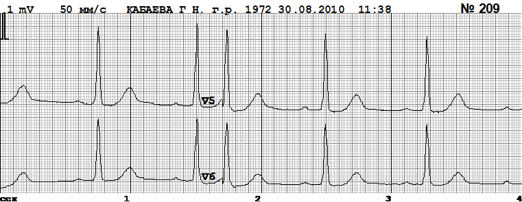
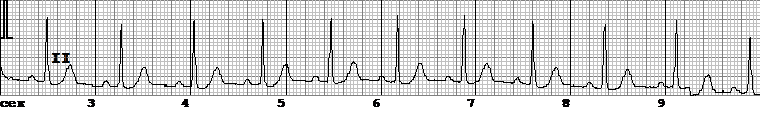
Рис. 16.ЭКГ. Заключение. ЧСС=81 уд/мин. Эл.ось 38°-нормальная PQ=0,156с, P=0,092с, QRS=0,077с, QT=0,361с. Синусовый ритм. Вольтаж удовлетворительный. Нормальное положение электрической оси сердца. Ранняя АВ-узловая экстрасистолия.
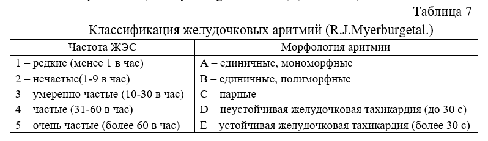У пациентов с сердечными пороками и другими органическими поражениями миокарда увеличение риска внезапной коронарной смерти происходит при снижении сократительной способности миокарда.
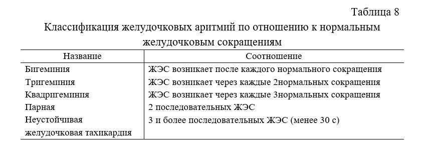10 мм/мВ 50 мм/с
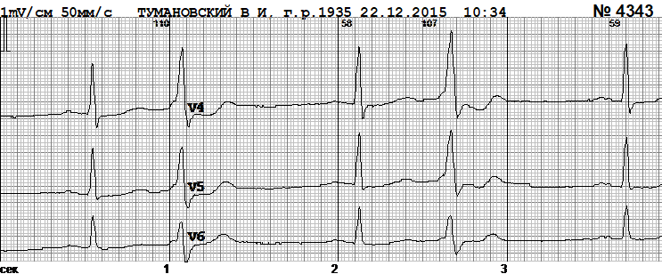
Рис. 17.ЭКГ. Заключение. Левожелудочковая экстрасистолия по типу бигеминии. Вольтаж удовлетворительный. Диффузное нарушение процесса реполяризации.
10 мм/мВ 50 мм/с
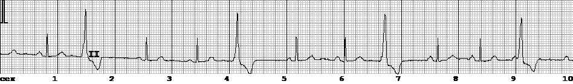
Рис. 18.ЭКГ. Желудочковая экстрасистолия по типу тригеминии.
10 мм/мВ 50 мм/с
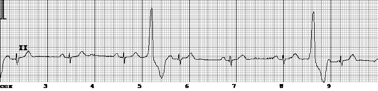
Рис. 19.ЭКГ. Вставочная желудочковая экстрасистолия по типу квадригеминии.
Фибрилляция предсердий: предсердный ритм, характеризующийся отсутствием волны Р и появлением нерегулярных разной формы волн фибрилляции f с частотой в среднем 350-600 в минуту. Интервалы RR при этом различные. В зависимости от частоты желудочкового ритма выделяют нормосистолическую форму фибрилляции предсердий (ЧСС 60-90 в минуту), брадисистолическую (ЧСС менее 60) и тахисистолическую (ЧСС более 90).
В зависимости от выраженности гемодинамических нарушений клиническая картина варьирует от бессимптомного течения до тяжелых проявлений сердечной недостаточности. В большинстве случаев пациенты жалуются на учащенное сердцебиение, перебои, дискомфорт или боли в грудной клетке. Также может беспокоить одышка, головокружение.
Тоны сердца имеют различную громкость, аритмичные. Пульс аритмичный, может возникать дефицит пульса вследствие того, что при частом желудочковом ритме ударный объем левого желудочка недостаточен для создания периферической пульсовой волны.
10 мм/мВ 50 мм/с
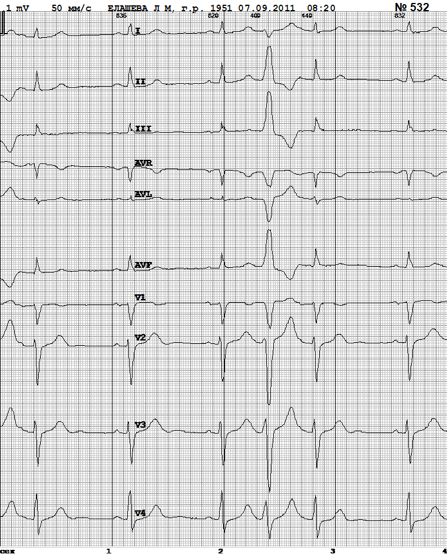
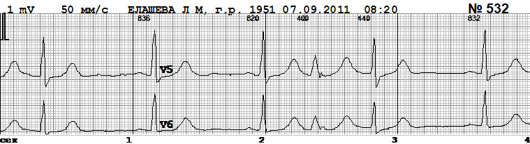
Рис. 20.ЭКГ. Заключение. Синусовый ритм. Единичная вставочная правожелудочковая экстрасистолия. Вольтаж удовлетворительный. ЭОС - срединное положение.
10 мм/мВ 50 мм/с
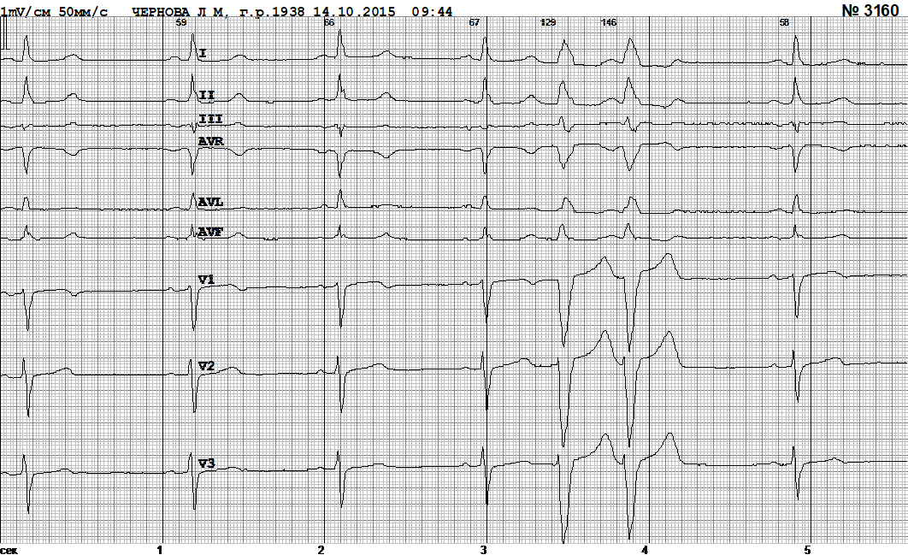
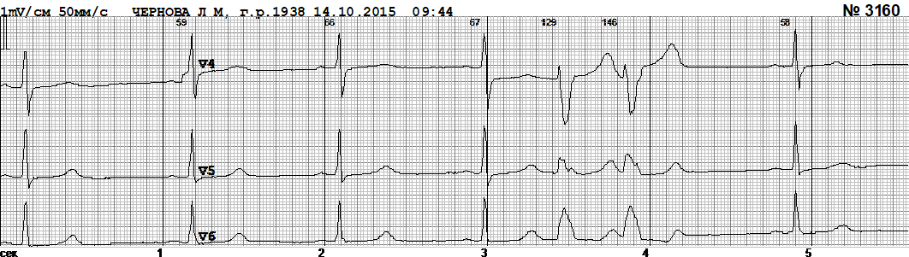
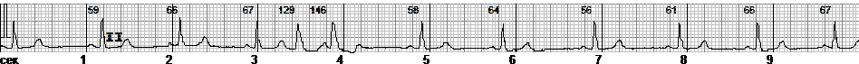
Рис. 21.ЭКГ. Заключение. Парная правожелудочковая экстрасистолия. Вольтаж удовлетворительный. ЭОС - горизонтальная.
10 мм/мВ 50 мм/с
Рис. 22.ЭКГ. Заключение. Фибрилляция предсердий с брадисистолией желудочков. Вольтаж снижен в отведениях от конечностей. ЭОС - срединное положение.
10 мм/мВ 50 мм/с
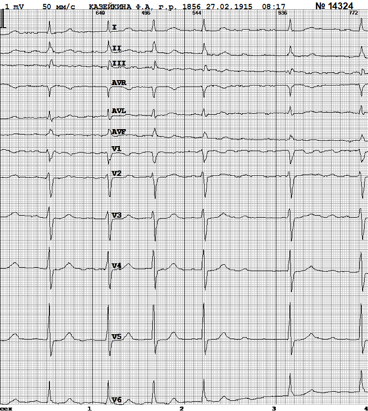
Рис. 23.ЭКГ. Заключение. Фибрилляция предсердий с тахисистолией желудочков. Вольтаж удовлетворительный. ЭОС - срединное положение.
10 мм/мВ 50 мм/с
Рис. 24. ЭКГ. Заключение. Фибрилляция предсердий с нормосистолией желудочков. Вольтаж удовлетворительный. ЭОС - срединное положение.
Трепетание предсердий: суправентрикулярный ритм, характеризующийся (в классическом случае) частотой ритма предсердий от 220 до 350 в 1 мин, отсутствием волны Р, наличием волн трепетания F пилообразной формы, наиболее хорошо заметных в отведениях II, III, aVF и V1. Интервалы RR равны при правильной форме трепетания предсердий и различны при неправильной.
В большинстве случаев пациенты предъявляют жалобы на сердцебиение, одышку при нагрузке, отеки нижних конечностей. При аускультации тоны сердца чаще ритмичные, в отдельных случаях они становятся аритмичными (неправильная форма трепетания предсердий).
10 мм/мВ 50 мм/с
Рис. 25. ЭКГ. Заключение. Трепетание предсердий, неправильная форма. Вольтаж удовлетворительный. ЭОС - срединное положение. Неспецифическое нарушение процесса реполяризации.
10 мм/мВ 50 мм/с

Рис. 26. ЭКГ. Заключение. Трепетание предсердий, правильная форма. Вольтаж удовлетворительный. ЭОС - отклонена вправо. Признаки гипертрофии правого желудочка.
Трепетание желудочков - это частое (до 200-300 в минуту) ритмичное их возбуждение, обусловленное устойчивым круговым движением импульса, локализованного в желудочках. Трепетание, как правило, переходит в фибрилляцию (мерцание) желудочков.
Фибрилляция желудочков - частое (до 300-480 в минуту) беспорядочное, нерегулярное возбуждение и сокращение отдельных мышечных волокон желудочков.
ЭКГ признаки:
- при трепетании желудочков на ЭКГ регистрируются частые (до 200-300 в минуту) регулярные и одинаковые по форме и амплитуде волны трепетания, напоминающие по форме синусоидную кривую;
- при фибрилляции (мерцании) желудочков на ЭКГ регистрируются частые (до 300-480 в минуту), но нерегулярные волны, отличающиеся друг от друга различной формой и амплитудой.
10 мм/мВ 50 мм/с
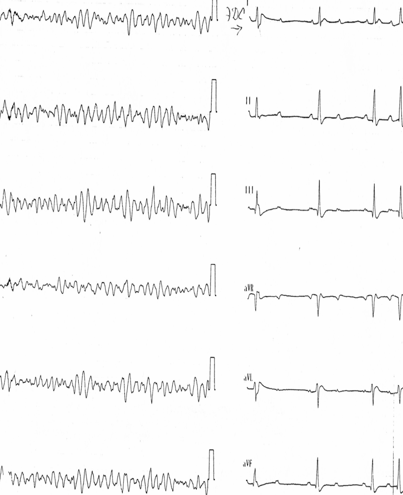
Рис. 27. Заключение. Фибрилляция желудочков. После ЭДС – синусовый ритм, вольтаж удовлетворительный вертикальной положение электрической оси сердца. АВ-блокада 2 степени тип Мобитц 1.
СИНДРОМ ЛЕГОЧНОЙ ГИПЕРТЕНЗИИ
Легочная гипертензия (ЛГ) – патофизиологическое состояние, которое может включать разнообразные клинические состояния и осложнять течение большинства сердечно-сосудистых заболеваний и патологии легких, характеризующихся прогрессирующим повышением легочного сосудистого сопротивления и давления в легочной артерии, которое приводит к развитию правожелудочковой сердечной недостаточности и преждевременной гибели пациентов.
Клинический случай:
Пациент Ш., 71 года, предъявляет жалобы на одышку, усиливающуюся при небольшойфизической нагрузке, общую слабость, кашель с выделением светлой мокроты по утрам.
Из анамнеза: курит в течение 52 лет 2 пачки в день.
Объективно: температура тела 37,0°C. Общее состояние средней тяжести. Кожный покров бледный, акроцианоз. Отеки нижних конечностей до середины голеней.
В легких дыхание жесткое, выслушиваются сухие жужжащие хрипы. Частота дыхательных движений 24 в минуту в покое. При пальпации области сердца левожелудочковый толчок определяется в V межреберье на 1см кнутри от левой срединно-ключичной линии, пальпируется правожелудочковый толчок в IV межреберье по левой парастернальной линии. При перкуссии правая граница относительной сердечной тупости определяется в IV межреберье на 2,0 см кнаружи от правого края грудины, верхняя - в III межреберье по парастернальной линии слева, левая граница – в Vмежреберье по левой срединно-ключичной линии. При аускультации I тон в зоне верхушки сердца не изменен, определяется акцент II тона на легочной артерии, выслушивается систолический шум у основания мечевидного отростка. Ритм сердца правильный, частота сердечных сокращений 112 в минуту. При пальпации пульс регулярный, удовлетворительного наполнения и напряжения, частота пульса 112 в минуту.Артериальное давление 130 и 87 мм рт.ст.
Эхокардиография. Правое предсердие размер в парастернальной позиции 47 мм, в апикальное позиции 51х59 мм, площадь 28 см2, индекс объема 45,3 мл/м2. Правый желудочек 38 мм. Легочная артерия 40 мм. Трикуспидальная регургитация II степени. Предполагаемое давление в легочной артерии 53 мм.рт.ст.
Рентгенография органов грудной клетки
На обзорной рентгенографии органов грудной клетки в прямой проекции проксимальные отделы правой и левой легочной артерии расширены, повышение прозрачности периферических отделов легочных полей. Контур легочной артерии расширен.
10 мм/мВ 50 мм/с
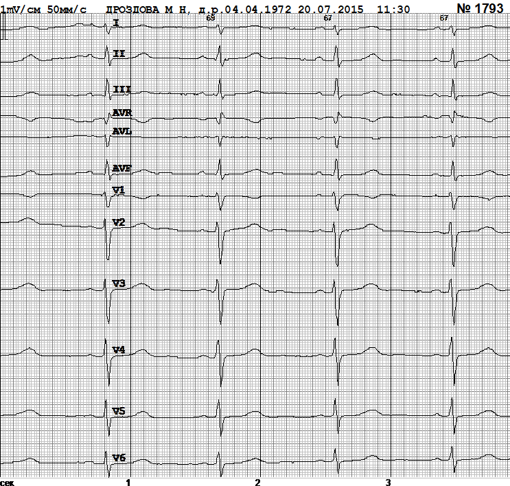
Рис. 28. ЭКГ. Заключение. Ритм синусовый. Вольтаж удовлетворительный. Электрическая ось отклонена вправо. Признаки гипертрофии правого желудочка.
ЗАДАНИЕ 7:
Этиология. Легочная гипертензия – синдром различных заболеваний, связанных между собой отличительным признаком - повышением артериального давления в легочной артерии (выше 25 мм.рт.ст. в состоянии покоя), увеличением нагрузки на правый желудочек, что приводит к его гипертрофии.
1. Легочная артериальная гипертензия
- идиопатическая
- наследственная
- индуцированная приемом лекарств и токсинов
- ассоциированная с системными заболеваниями соединительной ткани, ВИЧ – инфекцией, врожденными пороками сердца.
1.1. Веноокклюзионная болезнь легких и/или легочный капиллярный гемангиоматоз.
1.2. Персистирующая ЛГ новорожденных.
2. ЛГ вследствие патологии левых камер сердца.
- систолическая дисфункция левого желудочка
- диастолическая дисфункция левого желудочка
- клапанные пороки
- пороки развития входного/выходного тракта левого желудочка, легочных вен.
3. ЛГ вследствие патологии легких и/или гипоксии
- хроническая обструктивная болезнь легких
- интерстициальная болезнь легких
- другие заболевания легких
4. Хроническая тромбоэмболическая ЛГ и другие виды обструкции легочной артерии.
- хроническая тромбоэмболическая ЛГ
- другие виды обструкции легочной артерии
5. ЛГ с неясными и/или множественными механизмами
- гематологические нарушения
- системные заболевания: саркоидоз, нейрофиброматоз.
- метаболические заболевания: заболевания щитовидной железы, болезнь Гоше.
- другие: опухолевая тромботическая микроангиопатия легких, хроническая почечная недостаточность.
Патогенез. ЛГ включает четыре основных патофизиологических феномена: спазм легочных сосудов; редукцию легочного сосудистого русла; снижение эластичности легочных сосудов; облитерацию легочных сосудов (тромбоз in situ, пролиферацию гладких мышечных клеток).
Основную роль в указанных процессах играет дисфункция или повреждение эндотелия, приводящая к нарушению баланса между вазоконстрикторами и вазодилататорами. Высвобождение хемотаксических агентов из поврежденных клеток эндотелия вызывает миграцию гладкомышечных клеток во внутреннюю оболочку легочных артериол. Секреция медиаторов с сосудосуживающим действием способствует развитию тромбоза insitu. В результате повреждение эндотелия прогрессирует, что приводит к ремоделированию легочных сосудов, нарастанию сосудистой обструкции и облитерации сосудов.
Важные патофизиологические и клинические определения:
- ЛГ является гемодинамическим и патофизиологическим состоянием, характеризующееся повышением среднего давления в легочной артерии ≥25 мм.рт.ст. в покое, которое было измерено при катетеризации правых камер сердца. ЛГ можно диагностировать при многих клинических состояниях.
- Легочная артериальная гипертензия является клиническим состоянием, характеризующимся наличием прекапиллярной ЛГ и легочным сосудистым сопротивлением >3 ед. Вуд, при отсутствии других причин прекапиллярной ЛГ, таких как ЛГ вследствие патологии легких, хронической тромбоэмболической ЛГ или других редких заболеваний. ЛАГ включает различные формы, которые имеют сходную клиническую картину и практически идентичные патологические изменения микроциркуляторного русла легких.
- Достаточных данных в пользу "ЛГ физического усилия " нет.
Жалобы пациентов:
1. Одышка (основной симптом заболевания) возникает в состоянии покоя, усиливается при малейшей физической нагрузке.
2. Тахикардия (учащенное сердцебиение) – как проявление дыхательной недостаточности (состояние, при котором не обеспечивается поддержание нормального уровня кислорода в крови либо он достигается за счет более частого дыхания или увеличения частоты сердечных сокращений) и гипоксии (уменьшение уровня кислорода в крови).
3. Сжимающие боли за грудиной, возможно возникновение обмороков – появляются при физической нагрузке.
- Постоянная слабость, утомляемость, возможны головокружения.
- Асцит (накопление жидкости в брюшной полости), отеки ног, цианоз (посинение) конечностей – возникают вследствие нарастающей недостаточности правого желудочка (хроническая правожелудочковая недостаточность, характеризуется неспособностью сердечной мышцы правого желудочка справляться с нагрузкой и, как следствие, застоем крови в большом круге кровообращения, в дальнейшем с нарастающими отеками ног, изменениями в печени, расширением воротной вены).
- Тяжесть и боль в правом подреберье (вследствие увеличения печени и растяжении ее капсулы).
- Абдоминальные расстройства (тошнота, рвота, боли, метеоризм – вздутие живота, вследствие избыточного скопления газов в кишечнике).
Данные анамнеза. Учитывая установленный генетический аспект ЛГ, необходимо исключить наличие характерной клинической симптоматики у родственников больного. Следует учитывать потенциальный риск развития ЛГ при применении лекарственных препаратов, токсинов (аноректики, рапсовое масло), химиотерапии (циклофосфан, блеомицин и др.). В зависимости от причины развития ЛГ в анамнезе может быть курение, врожденные/приобретенные заболевания (пороки развития), системные заболевания соединительной ткани, ВИЧ – инфекция, веноокклюзиооная болезнь вен нижних конечностей, онкологические, гематологические, метаболические заболевания.
Данные общего осмотра. При осмотре может выявляться похудание, акроцианоз, цианоз верхнего плечевого пояса. Телосложение, как правило, гипостеническое. Пациенты могут занимать положение ортопноэ.
Данные пальпации. При пальпации области сердца правожелудочковый толчок определяется в IV межреберье по левой парастернальной линии, усиленный, разлитой. Пульс остается регулярным с удовлетворительным наполнением и напряжением, при развитии аритмии - нерегулярный, различного наполнения и напряжения.
Данные перкуссии. При перкуссии определяется смещение правой границы относительной сердечной тупости кнаружи более 1,5 см от правого края грудины. Возможно расширение сосудистого пучка влево за счет дилатации легочной артерии.
Данные аускультации. При аускультации сердца I тон в зоне верхушки сердца не изменен, определяется акцент II тона в зоне легочной артерии. У части пациентов может выслушиваться IV тон (при выраженной легочной гипертензии, гипертрофии правого желудочка). Может выслушиваться систолический шум трикуспидальной регургитации у основания мечевидного отростка. В некоторых случаях можно определить шум Грэхема Стилла – диастолический шум, выслушиваемый в области проекции клапана легочной артерии при его относительной недостаточности, обусловленной значительной легочной гипертензией и дилатацией легочного ствола.
При аускультации легких может выслушиваться ослабленное везикулярное дыхание (например, при ТЭЛА, ХОБЛ), жужжащие хрипы (при ХОБЛ), иногда свистящие хрипы (при сердечной астме с рефлекторнымбронхоспазмом).
Инструментальные и лабораторные методы:
- рентгенография органов грудной клетки позволяет уточнить этиологию ЛГ: выявить интерстициальные заболевания легких, приобретенные и врожденные пороки сердца, а также судить о тяжести ЛГ;
- электрокардиография выявляет признаки гипертрофии и перегрузки правого желудочка, дилатации и гипертрофии правого предсердия (p-pulmonale), отклонение электрической оси сердца вправо;
- эхокардиография считается наиболее ценным неинвазивным методом диагностики ЛГ, так как не только позволяет оценить уровень ДЛА, но и дает важную информацию о причине и осложнениях ЛГ. С помощью этого метода можно исключить поражения митрального, аортального клапанов, болезни миокарда, врожденных пороков сердца с шунтированием крови слева направо, приводящие к развитию ЛГ, кардиомиопатию, хронический миокардит;
- проба с 6МТХ для определения функционального класса;
- оценка функции внешнего дыхания позволяет выявить вклад поражения дыхательных путей или паренхиматозного заболевания легких в развитие ЛГ: выявить обструктивные или рестриктивные изменения с целью дифференциальной диагностики ЛГ и уточнения тяжести поражения легких;
- МРТ используется у больных с ЛГ для оценки патологических и функциональных изменений сердца и легочного кровообращения и обычно не используется в рутинной практике;
- электронно-лучевая томография играет важную роль в дифференциальной диагностике ЛГ. Обеспечивая детальное изображение легочной паренхимы, позволяет диагностировать интерстициальные заболевания легких и эмфизему;
- перфузионная сцинтиграфия легких. У больных ЛГ можно обнаружить как абсолютно неизмененную картину, так и небольшие периферические субсегментарные дефекты перфузии без нарушенной вентиляции. Этот метод является наиболее информативным в диагностике клинического класса 4 - хронической тромбоэмболии легочной артерии и ее ветвей;
- радионуклидная флебография;
- ангиопульмонография считается наилучшим методом, позволяющим установить показания к эндартерэктомии. У больных с подозрением на хроническую ТЭЛА, не подтвержденную при сцинтиграфии легких, для диагностики дистальных обструкций легочного сосудистого русла целесообразно проведение ангиопульмонографии с селективным контрастированием правой и левой основных ветвей легочной артерии и анализом в множественных проекциях;
- катетеризация правых отделов сердца;
- исследование крови: общий анализ (определение количества гемоглобина, эритроцитов, лейкоцитов, тромбоцитов, гематокрита);
- биохимический анализ (оценка функциипочек, печени, содержания белка);иммунологический (выявление антител к кардиолипину, волчаночногоантикоагулянта);
- коагулограмма;
- гормоны щитовидной железы, тиреотропный гормон;
- серологический тест на ВИЧ.
СИНДРОМ МИТРАЛЬНОГО СТЕНОЗА
Обструкция пути притока левого желудочка на уровне митрального клапана, возникающая в результате структурной деформации клапанного аппарата, препятствующая необходимому его открытию во время диастолического наполнения левого желудочка.
Клинический случай:
Пациентка В., 46 лет, предъявляет жалобына одышку в покое, усиливающуюся при небольшой физической нагрузке, отеки на ногах.
В детстве часто болела ангинами, на диспансерном наблюдении у кардиолога не состояла. Ухудшение состояния отмечает в течение нескольких месяцев, когда появились и стали нарастать вышеуказанные жалобы.
Объективно: температура тела 36,5°C. Общее состояние тяжелое. Кожный покров цианотичный, акроцианоз, цианоз губ. На фоне цианоза виден румянец щек.
Частота дыхательных движений 24 в минуту в покое. В легких дыхание везикулярное, в нижних отделах с обеих сторон выслушиваются мелкопузырчатые влажные хрипы. При пальпации области сердца определяется диастолическое сердечное дрожание в области верхушки сердца. При перкуссии правая граница относительной сердечной тупости определяется в IV межреберье на 1,5 см кнаружи от правого края грудины, верхняя граница– во II межреберье по парастернальной линии слева, левая граница – в V межреберье на 1 см кнутри от левой срединно-ключичной линии, При аускультации I тон на верхушке сердца усилен, там же выслушивается тон открытия митрального клапана и протомезодиастолический шум, определяется акцент II тона в зоне легочной артерии. Ритм сердца правильный, частота сердечных сокращений 73 в минуту. Артериальное давление 100 и 70 мм.рт.ст. При пальпации пульс регулярный, удовлетворительного наполнения и напряжения, частота пульса 73 в минуту.
Эхокардиография. Левое предсердие размер в парастернальной позиции 50 мм, в апикальной позиции 55х68 мм, площадь 29 см2, индекс объема 47,1 мл/м2. Створки митрального клапана уплотнены, утолщены, деформированы, спаяны по комиссурам. Площадь отверстия митрального клапана 1,4 см2. Недостаточность митрального клапана II степени. Дилатация правого желудочка, ствола легочной артерии. Значительное повышение давления в легочной артерии.
10 мм/мВ 50 мм/с
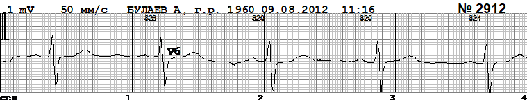
Рис. 29. ЭКГ. Заключение. Ритм синусовый. Вольтаж удовлетворительный. Электрическая ось - типа SI-SII-SIII. Признаки гипертрофии левого предсердия, правого желудочка по S типу.
Рентгенография органов грудной клетки.
На обзорной рентгенографии органов грудной клетки определяется "митральная " конфигурация сердца: талия сердца сглажена, определяется выбухание 2 и 3 дуг левого контура сердца, а также 2 дуги правого контура сердца. Легочные поля без очаговых и инфильтративных теней.
ЗАДАНИЕ 8:
Этиология:
- Резкий кальциноз фиброзного кольца;
- Миксома левого предсердия;
- Мукополисахаридоз;
- Врожденный порок митрального клапана. Встречается редко и преимущественно у детей.
Патогенез. Ревматическое поражение митрального клапана сопровождается кальцификацией и утолщением створок клапана, а также сращением комиссур и хорд. Это приводит к нарушению открытия клапана, повышению трасмитрального диастолического градиента давления, и, следовательно, к повышению давления в левом предсердии, а далее и в легочных венах (в том числе благодаря уменьшению податливости легочных вен) и в системе легочной артерии за счет констрикции и гиперплазии комплекса интимы-медии легочных артериол. Это создает предпосылки к развитию у данных пациентов отека легких, что в свою очередь, будет зависеть от легочной капиллярной проницаемости. В дальнейшем происходит уменьшение сердечного выброса, отсутствие его прироста при физической нагрузке, а также прогрессирующее увеличение давления в легочной артерии и повышение сопротивления легочных артериол.
Течение митрального стеноза и прогноз пациентов. В настоящее время среди взрослого населения частота ревматических пороков сердца имеет отчетливую тенденцию к снижению.
Митральный стеноз имеет непрерывно прогрессирующее течение с быстрой прогрессией на поздних этапах. Средний возраст пациентов с манифестацией симптомов 50-60 лет.
Выживаемость пациентов с митральным стенозом во многом зависит от тяжести клинических симптомов и степени тяжести легочной гипертензии. 10 летняя выживаемость у пациентов с митральным стенозом:
- бессимптомные и малосимптомные - более 80%;
- без прогрессирования симптомов - около 60%;
- инвалидизирующие симптомы - 0-15%.
Основные причины смерти пациентов с митральным стенозом:
- прогрессирующая легочная и системная недостаточность (60-70%);
- системная эмболия (20-30%);
- легочная эмболия (10%);
- инфекции (1-5%).
Нормальная площадь митрального отверстия составляет от 4 до 5 см2. Клинические проявления митрального стеноза наблюдаются у пациентов с площадью митрального клапана менее 2,5 см2. При площади митрального клапана менее 1,5 см2 у пациентов часто появляются симптомы в покое.
Жалобы пациентов:
- Одышка;
- Удушье (приступы сердечной астмы);
- Кашель;
- Кровохарканье;
- Сердцебиение;
- Перебои в работе сердца (при развитии фибрилляции предсердий);
- Усталость;
- Дисфагия (сдавление пищевода увеличенным левым предсердием);
- Осиплость голоса (сдавление левого возвратного гортанного нерва увеличенным левым предсердием);
- Боли в области сердца (редко).
Появление первых симптомов одышки у пациентов с легким митральным стенозом обычно связано с физической нагрузкой, эмоциональным стрессом, инфекцией, беременностью или фибрилляцией предсердий с высокой частотой желудочковых сокращений. По мере увеличения обструкции толерантность к физической нагрузке снижается.
Данные анамнеза.
- Острые тонзиллиты в детском возрасте.
- Ревматизм в анамнезе.
Данные общего осмотра. Пациенты, как правило, астенического телосложения, нередко с дефицитом массы тела. У пациентов с митральным стенозом можно выявить бледность кожи, цианоз (кожи и видимых слизистых оболочек), акроцианоз. При выраженном митральном стенозе у пациентов может развиться "facies mitralis " (цианоз губ с цианотическим румянцем на щеках). При тяжелом митральном стенозе пациенты могут занимать положение ортопноэ. При прогрессировании правожелудочковой недостаточности у пациентов могут наблюдаться отеки нижних конечностей, увеличение живота в объеме, набухание шейных вен.
При осмотре области сердца иногда можно выявить сердечный горб, связанный с гипертрофией и дилатацией правого желудочка.
Данные пальпации.При пальпации области сердца можно выявить диастолическое сердечное дрожание в области верхушки сердца. Левожелудочковый толчок ослаблен или не пальпируется, правожелудочковый толчок часто усилен. Пульс нерегулярный с различным наполнением и напряжением при наличии у пациентов фибрилляции предсердий. У пациентов с митральным стенозом в случае развития сердечной недостаточности могут быть признаки отека передней брюшной стенки за счет асцита, увеличение печени, положительный гепатоюгулярный рефлюкс.
Данные перкуссии. При перкуссии определяется смещение правой границы относительной сердечной тупости вправо на 2 или более сантиметров кнаружи от правого края грудины, а также верхней границы до II межреберья по парастернальной линии слева. Также при перкуссии можно выявить смещение левой границы сосудистого пучка за счет дилатации легочной артерии.
При перкуссии легких можно выявить притупление перкуторного звука или бедренный тон (признак гидроторакса), апри перкуссии живота можно выявить притупление перкуторного тона (признак асцита).
Данные аускультации. При аускультации сердца I тон на верхушке сердца, как правило, усилен ( "хлопающий " I тон), определяется акцент II тона в зоне легочной артерии (при выраженной легочной гипертензии). При появлении у пациентов фибрилляции предсердий ритм сердца становится неправильным, тоны сердца различной громкости. В области верхушки сердца выслушивается тон открытия митрального клапана и мезодиастолический шум с пресистолическим усилением, без иррадиации. При появлении фибрилляции предсердий пресистолический компонент шума исчезает. Шум, как правило, несколько ослабевает при пробе Вальсальвы, усиливается при быстром приседании на корточки. При выраженной легочной гипертензии возможно также появление шума Грэхема Стилла (убывающий дующий диастолический шум с эпицентром во II межреберье слева, связанный с дилатацией ствола легочной артерии при выраженной легочной гипертензии).
Диагностика. Среди методов инструментальной диагностики пациентам выполняется электрокардиография, эхокардиография и рентгенография грудной клетки.
Данные электрокардиографии не подтверждают диагноз митрального стеноза, однако позволяют выявить признаки гипертрофии левого предсердия (увеличение продолжительности зубца P в I, II отведениях более 0,1 секунды) и правого желудочка по R-, S или RS типу. Также по ЭКГ можно выявить нарушения ритма сердца, такие как фибрилляция предсердий, суправентрикулярная экстрасистолия и другие.
Эхокардиография является ключевым методом верификации митрального стеноза, а также определения тактики ведения пациентов.
Эхокардиография выполняется у пациентов для диагностики МС, оценки гемодинамической тяжести (средний градиент, площадь левого атриовентрикулярного отверстия и давление в легочной артерии) и сопутствующих пороков клапанов, морфологии клапана, для оценки давления в легочной артерии, а также для динамического наблюдения пациентов с ранее диагностированным МС.
Эхокардиография с нагрузкой (стресс-ЭхоКГ) выполняется пациентам с МС в случаях, когда есть несоответствие между допплер-эхокардиографией в состоянии покоя и клиническими данными для оценки показателей гемодинамики, в частности среднего градиента давления на клапане и давления в легочной артерии.
Чреспищеводная эхокардиография при МС выполняется для установления наличия тромба в левом предсердии, для оценки тяжести митральной регургитации у пациентов, которым предполагается выполнение чрескожной митральной баллонной вальвулотомии, а также для оценки морфологии и гемодинамики митрального клапана у пациентов, когда затруднена визуализация при трансторакальной эхокардиографии.
При проведении эхокардиографии определяется ограничение диастолического открытия створок, что проявляется как "куполообразное " диастолическое выбухание передней митральной створки в полость ЛЖ ( "парусение " и ограничение подвижности задней митральной створки). С помощью данного метода исследования также оценивается степень утолщения створок и структур митрального клапана, кальцификации и подвижности его створок, что используется для определения показаний для вальвулотомии (градация Wilkins, эхокардиографическое распределение по группам, наличие кальция в коммиссурах).
Также с помощью эхокардиографии производится оценка систолического давления в легочной артерии, а также степени гемодинамической выраженности митрального стеноза с определением среднего градиента на митральном клапане с помощью D-режима и расчета площади отверстия митрального клапана в B-режиме по следующим правилам:
Средний градиент давления:
- незначительный стеноз (<5 мм.рт.ст.);
- умеренный стеноз (5-10 мм.рт.ст.);
- выраженный стеноз (>10 мм.рт.ст.).
Площадь отверстия митрального отверстия:
- незначительный стеноз (>1,5 см2);
- умеренный стеноз (1,0-1,5 см2);
- выраженный стеноз (<1,0 см2).
Также необходимо отметить, что другие состояния, такие как миксома левого предсердия, мукополисахаридоз, неревматический склеротический МС, трехпредсердное сердце и парашютный митральный клапан, приводящие к формированию митрального стеноза, также могут быть идентифицированы двухмерной эхокардиографией.
Рентгенография грудной клетки. При проведении этого метода исследования у пациентов с митральным стенозом может определяться так называемая "митральная " конфигурация сердца, которая проявляется увеличением второй и третьей дуги левого контура сердца за счет дилатации легочной артерии и левого предсердия, сглаженностью талии сердца за счет уменьшения угла между этими дугами, и выбуханием правого контура сердца за счет увеличения правого желудочка и правого предсердия.
Инвазивные методы исследования. У большинства пациентов с изолированным митральным стенозом выполнение зондирования сердца не проводится, так как часто допплер-эхокардиографические измерения трансмитрального градиента, площади клапана и давления в легочной артерии хорошо соотносятся друг с другом, а также с клинической картиной заболевания.
План обследования:
У пациентов с симптомами митрального стеноза проводится:
- ЭКГ;
- Рентгенография грудной клетки;
- Трансторакальная эхокардиография.
Исследования, выполняемые по показаниям:
- Стресс-эхокардиография;
- Чреспищеводная эхокардиография;
- Зондирование сердца.
Стресс-эхокардиография (с физической нагрузкой или с добутамином) выполняется пациентам с выраженными клиническими симптомами при отсутствии допплер-эхокардиографических признаков умеренного или тяжелого митрального стеноза.
Чреспищеводная эхокардиография выполняется пациентам с затруднением оценки морфологии и гемодинамических показателях митрального стеноза при проведении трансторакальной эхокардиографии, а также для выявления тромбоза левого предсердия, поскольку это является противопоказанием для проведения чрескожной митральной коммиссуротомии.
Зондирование сердца выполняется пациентам при несоответствии неинвазивных методик оценки степени выраженности митрального стеноза клиническим проявлениям пациента, а также при несоответствии среднего градиента давления на митральном клапане и площадью его отверстия, оцениваемых с помощью эхокардиографии.
Показания для хирургического лечения митрального стеноза представлены в соответствующих руководствах.
СИНДРОМ МИТРАЛЬНОЙ НЕДОСТАТОЧНОСТИ
Заброс крови из левого желудочка в левое предсердие в систолу желудочков вследствие нарушения целостности митрального клапана. Митральная недостаточность, связанная с пролапсом митрального клапана встречается у 2-6% населения (J.Chikwe).
Клинический случай:
Пациент П., 67 лет, предъявляет жалобы на одышку при небольшой физической нагрузке, приступы удушья в ночное время, отеки на ногах.
Перенес два инфаркта миокарда. После второго инфаркта отмечал появление и прогрессирование вышеуказанных симптомов.
Объективно: температура тела 36,5°C. Общее состояние тяжелое. Акроцианоз. Отеки нижних конечностей до середины голеней. Частота дыхательных движений 20 в минуту в покое. В легких дыхание везикулярное, выслушиваются свистящие хрипы. При перкуссии правая граница относительной сердечной тупости определяется в IV межреберье на 1,5 см кнаружи от правого края грудины, верхняя граница – во II межреберье по парастернальной линии слева, левая граница – в V межреберье по передней подмышечной линии. При аускультации I тон на верхушке сердца ослаблен, во всех точках аускультации с эпицентром в зоне верхушки выслушивается пансистолический шум, проводящийся в левую подмышечную область, определяется акцент II тона в зоне легочной артерии. Ритм сердца правильный, частота сердечных сокращений 67 в минуту. Артериальное давление 110 и 70 мм.рт.ст. При пальпации пульс регулярный, удовлетворительного наполнения и напряжения, частота пульса 67 в минуту.
Эхокардиография. Левое предсердие размер в парастернальной позиции 50 мм, индекс объема 44 мл/м2. КДР левого желудочка 63 мм. КДО левого желудочка 155 мл. Створки митрального клапана уплотнены. Недостаточность митрального клапана III степени. Дилатация правого желудочка, ствола легочной артерии. Значительное повышение давления в легочной артерии.
Рентгенография органов грудной клетки.
При рентгенографии грудной клетки определяется выбухание 2,3 и 4 дуги левого контура сердца, сглаженность талии сердца, а также выбухание 2 дуги правого контура сердца.
10 мм/мВ 50 мм/с
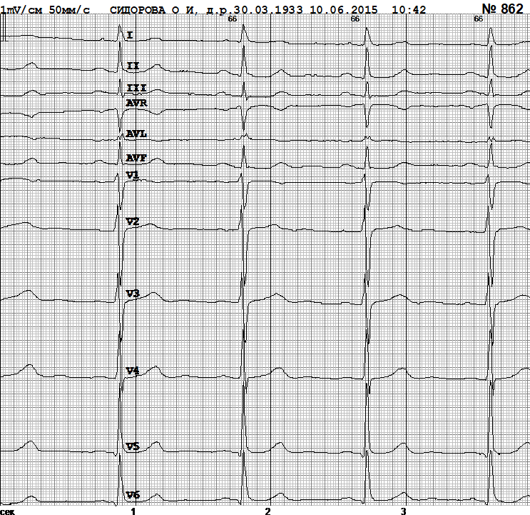
Рис 30. ЭКГ. Заключение. Ритм синусовый. Вольтаж удовлетворительный. Электрическая ось - нормальное положение. Признаки гипертрофии левого предсердия, левого желудочка.
ЗАДАНИЕ 9:
Этиология:
- Пролапс митрального клапана;
- Ревматизм;
- Ишемическая болезнь сердца;
- Инфекционный эндокардит;
- Прием некоторых лекарственных препаратов;
- Заболевания соединительной ткани;
- Любые причины, приводящие к дилатации левого желудочка (вторичная или относительная митральная недостаточность).
Патогенез. При тяжелой острой митральной регургитации развивается внезапная перегрузка объемом левых камер сердца. При этом происходит увеличение преднагрузки левого желудочка и некоторое увеличение его общего ударного объема. В тоже время за счет того, что гипертрофия левого предсердия и левого желудочка не успевает развиваться, сердечный выброс и эффективный ударный объем уменьшаются. За счет обильного потока регургитации в полость левого предсердия происходит значительное увеличение давления в малом круге кровообращение и нередко развивается отек легких.
При хронической митральной регургитации левые камеры сердца также испытывают перегрузку объемом, однако темпы ее прогрессирования значительно более медленные, поэтому у пациентов развивается гипертрофия левого желудочка. В фазу компенсации наблюдается увеличение объемов левого предсердия и левого желудочка, что позволяет приспособить объем регургитации к более низкому давлению наполнения, что уменьшает степень выраженности застоя крови в малом круге кровообращения. Увеличение конечно-диастолического объема левого желудочка, наряду с его гипертрофией способствует увеличению ударного объема и сердечного выброса. В фазу компенсации у пациентов наблюдается увеличение преднагрузки и нормальная или даже уменьшенная постнагрузка, что также способствует увеличению общего ударного объема левого желудочка и, следовательно, к нормализации эффективного ударного объема.
Вышеуказанное состояние внутрисердечной гемодинамики может сохраняться на протяжении многих лет. В тоже время, длительная перегрузка объемом левых камер сердца со временем будет приводить к дилатации левых камер сердца, снижению систолической функции и к увеличению конечно-систолического объема левого желудочка. Это будет приводить к дальнейшей дилатации левого желудочка, а также к увеличению давления его наполнения и к увеличению давления в малом круге кровообращения.
Течение митральной недостаточности и прогноз пациентов.У пациентов с тяжелой хронической митральной недостаточностью появление клинической симптоматики, связанной с дисфункцией левого желудочка наблюдается, как правило, через 6-10 лет. Смертность пациентов с тяжелой митральной недостаточностью, которая связана с "молотящими " створками может составлять до 6-7% каждый год. Самый высокий риск смерти имеют пациенты с III-IVФК ХСН (по NYHA) и сниженной функцией левого желудочка.
Жалобы пациентов:
- Одышка (может быть различной степени выраженности);
- Сердцебиение;
- Перебои в работе сердца(при развитии фибрилляции предсердий);
- Снижение толерантности к физической нагрузке;
- Удушье (приступы сердечной астмы, в том числе в ночное время);
- Кашель;
- Кровохарканье;
- Снижение аппетита;
- Боли в области сердца или за грудиной (редко).
К характерным жалобам пациентов с митральной недостаточностью относят, прежде всего, одышку, утомляемость и снижение толерантности к физической нагрузке.
Данные анамнеза:
- Острые тонзиллиты в детском возрасте;
- Ревматизм в анамнезе;
- Пролапс митрального клапана в анамнезе;
- Ишемическая болезнь сердца в анамнезе (в том числе инфаркт миокарда);
- Инфекционный эндокардит в анамнезе;
- Кардиомиопатия в анамнезе.
Данные общего осмотра. У пациентов с митральной недостаточностью можно выявить цианоз (кожи и видимых слизистых оболочек), акроцианоз. У части пациентов может выявляться "facies mitralis " (цианоз губ с цианотическим румянцем на щеках).
При тяжелом течении митральной недостаточности пациенты могут занимать положение ортопноэ. При прогрессировании правожелудочковой недостаточности у пациентов могут наблюдаться отеки нижних конечностей, увеличение живота в объеме, набухание шейных вен.
При осмотре области сердца иногда можно выявить сердечный горб, связанный с гипертрофией и дилатацией правого желудочка.
Данные пальпации.При пальпации области сердца левожелудочковый толчок может быть средней силы, либо усиленным. Можно выявить нерегулярный пульс с различным наполнением и напряжением. У пациентов с митральной недостаточностью в случае присоединения сердечной недостаточности можно выявить признаки отека передней брюшной стенки за счет асцита, увеличение печени, положительный гепатоюгулярный рефлюкс.
Данные перкуссии. Определяется смещение верхней границы до второго межреберья по парастернальной линии слева, левой границы относительной сердечной тупости влево и вниз, а также и правой границы при тяжелой митральной недостаточности. Также при перкуссии можно выявить расширение границы сосудистого пучка за счет дилатации легочной артерии.
При перкуссии легких можно выявить притупление перкуторного звука или бедренный тон (признак гидроторакса),при перкуссии живота – притупление перкуторного тона (признак асцита).
Данные аускультации. При аускультации сердца I тон на верхушке сердца, как правило, ослаблен, IIтон либо обычной громкости, либо определяется акцент II тона в зоне легочной артерии (при выраженной легочной гипертензии). При появлении у пациентов фибрилляции предсердий ритм сердца становится неправильным, тоны сердца различной громкости. Также у пациентов можно выслушать патологический III тон в диастолу.
В области верхушки сердца выслушивается систолический шум (может быть ранним при тяжелой недостаточности), связанный с I тоном и иррадиирующий в левую подмышечную область, а иногда и вверх вдоль грудины. Шум будет усиливаться при проведении пробы с изометрическим мышечным напряжением, может ослабевать при быстром приседании на корточки в том случае, если он связан с пролапсом митрального клапана.
Следует отметить, что при выраженном пролапсе митрального клапана шум в ряде случаев поздний систолический и возникает после мезосистолического щелчка (за счет резкого смещения створок митрального клапана в полость левого предсердия при быстро нарастающем давлении в левом желудочке).
При выраженной легочной гипертензии возможно также появление шума Грэхема Стилла (убывающий дующий диастолический шум с эпицентром во II межреберье слева, связанный с дилатацией ствола легочной артерии при выраженной легочной гипертензии).
Диагностика. Лабораторные исследования для диагностики митральной недостаточности не проводятся. Среди методов инструментальной диагностики пациентам выполняется электрокардиография, эхокардиография и рентгенография грудной клетки.
Данные электрокардиографии не подтверждают диагноз митральной недостаточности, однако позволяют выявить признаки гипертрофии левого желудочка, левого предсердия и правого желудочка по R-, S- или RS-типу. Также по ЭКГ можно выявить нарушения ритма сердца, такие как фибрилляция предсердий, суправентрикулярная экстрасистолия и другие.
Эхокардиография. Первичное комплексное ультразвуковое исследование (двухмерная эхокардиография, допплер-эхокардиография) является обязательным для пациента с подозрением на МР.
Трансторакальная эхокардиография показана пациентам с подозрением на наличие митральной недостаточности с целью первичной оценки размеров и функции желудочков сердца, размера левого предсердия, уровня давления в легочной артерии и степенитяжести митральной регургитации (таблица 9), а также с целью уточнения механизма развития митральной недостаточности.
Стресс-эхокардиография может выполняться бессимптомным пациентам с тяжелой митральной недостаточностью с целью оценки толерантности к физической нагрузке и влияния нагрузки на уровень давления в легочной артерии и тяжесть митральной недостаточности.
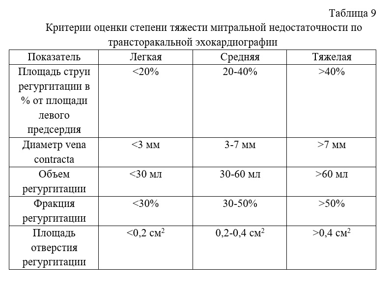Дооперационная или интраоперационная чреспищеводная эхокардиография показана пациентам с тяжелой митральной недостаточностью, которым назначена операция для оценки возможности и техники предстоящей операции, а также в тех случаях, в которых трансторакальная эхокардиография не может обеспечить диагностическую информацию относительно тяжести митральной недостаточностью, ее механизма и/или функции левого желудочка.
Рентгенография грудной клетки. У пациентов с тяжелой митральной недостаточностью при рентгенографии грудной клетки часто выявляется выбухание 4 дуги левого контура сердца за счет дилатации левого желудочка, также может определяться увеличение 2 и 3 дуг левого контура сердца, а также сглаженность талии сердца за счет уменьшения угла между этими дугами. При развитии гипертрофии, а затем и дилатации правого желудочка, а также дилатации правого предсердия у пациентов может определяться выбухание 2 дуги правого контура сердца.
Инвазивные методы исследования. Левая вентрикулография и измерения гемодинамики проводятся, как правило, только тем пациентам, которым планируется оперативное лечение МР и в тех случаях, когда неинвазивные тесты не позволяют определить степень выраженности митральной недостаточности или клинические данные и результаты неинвазивных методов исследования противоречат друг другу.
Коронароангиография показана перед реконструкцией МК или протезированием МК у пациентов с риском ИБС.
План обследования:
У пациентов с симптомами митральной недостаточности проводится:
- ЭКГ;
- Рентгенография грудной клетки;
- Трансторакальная эхокардиография.
Исследования, выполняемые по показаниям:
- Стресс-эхокардиография;
- Чреспищеводная эхокардиография;
- Зондирование сердца.
Показания для хирургического лечения митральной недостаточности представлены в соответствующих руководствах.
СИНДРОМ СТЕНОЗА УСТЬЯ АОРТЫ
Стеноз устья аорты - порок сердца, которые сопровождается деформацией створок клапана и/или сужением клапанного отверстия. Встречается примерно в 20-25% случаев среди всех пороков сердца.
Различают три формы аортального стеноза: клапанную (врожденную и приобретенную), подклапанную (врожденную или приобретенную), надклапанную (врожденную). В дальнейшем будет рассматриваться именно клапанная форма аортального стеноза.
Клинический случай:
Пациент К., 75 лет, предъявляет жалобы на частые кратковременные эпизоды потери сознания, как правило, возникающие после короткого периода выраженной слабости и тошноты.
Ревматизм в анамнезе пациент отрицает. Инфаркт миокарда не переносил.
Объективно. Общее состояние больного на момент осмотра удовлетворительное. Одышки в покое нет. Отеков нет. При пальпации левожелудочковый толчок определяется в VI межреберье на 2 см кнаружи от левой срединно-ключичной линии. Во II межреберье справа от грудины пальпируется сердечное дрожание. При аускультации легких дыхание везикулярное, хрипов нет. Границы относительной тупости сердца: правая в IVмежреберье на 1 см кнаружи от правого края грудины, верхняя - во II межреберье, левая - в VI межреберье на 2 см кнаружи от левой срединно-ключичной линии. При аускультации тоны сердца тихие, ритм правильный, выслушивается систолический шум с эпицентром во II межреберье справа, проводящийся на сонные артерии и в яремную ямку. ЧСС 90 в минуту. Пульс 90в 1 мин., ритмичный. АД 130 и 60 мм.рт.ст. Печень не увеличена.
Эхокардиография. Створки аортального клапана уплотнены, утолщены, кальцинированы. Скорость кровотока на аортальном клапане 4,5 м/с. Средний градиент давления на аортальном клапане 45 мм.рт.ст. Выраженная гипертрофия левого желудочка.
Рентгенография органов грудной клетки.
На обзорной рентгенограмме органов грудной клетки определяется "аортальная " конфигурация сердца. Легочные поля без очаговых и инфильтративных теней.
10 мм/мВ 50 мм/с
Рис. 31. ЭКГ. Заключение. Ритм синусовый. Вольтаж удовлетворительный. Электрическая ось - нормальное положение. Гипертрофия левого желудочка с выраженной систолической перегрузкой.
ЗАДАНИЕ 10:
1. Назовите ведущий синдром, описанный у пациента.
2. Какая наиболее вероятная причина развития данного синдрома у пациента?
Этиология:
- Кальциноз створок аортального клапана (как нормального трехстворчатого, так и двустворчатого)
- Ревматизм
- Врожденные аномалии аортального клапана (чаще всего двустворчатый аортальный клапан)
- Атеросклероз (возрастной дегенеративный аортальный стеноз)
- Системная красная волчанка (эндокардит Либмана-Сакса)
Libman Emanuel (1872—1946) — американский врач (Нью-Йорк).
Sacks В. (1837—1902) — американский врач (Нью-Йорк).
Изучили патологоанатомические особенности поражений сердца при системной красной волчанке.
Патогенез.У взрослых обструкция при стенозе устья аорты, как правило, развивается постепенно, чаще всего десятилетиями. За это время у пациента развивается гипертрофия левого желудочка как приспособительная реакция на перегрузку сопротивлением (давлением). Развитие гипертрофии левого желудочка длительное время препятствует увеличению постнагрузки и снижению сердечного выброса. Однако, в том случае, если толщина стенок левого желудочка растет не пропорционально давлению, это приводит к увеличению постнагрузки и снижению сердечного выброса. При развитии гипертрофии левого желудочка происходит нарушение его диастолической функции и, следовательно, повышение конечно-диастолического давления. Усиление сокращения предсердий приводит к увеличению наполнения желудочков кровью, при этом давление в предсердиях и в легочных венах значимо не повышается. Однако, при нарушении функции предсердий, например, при фибрилляции предсердий, вышеуказанный механизм нарушается, что приводит к значительному ухудшению внутрисердечной гемодинамики. Также следует отметить, что гипертрофия левого желудочка при неблагоприятном течении порока может сменяться его дилатацией, что приводит к снижению сократимости левого желудочка и далее к застою крови в малом круге кровообращения. Гипертрофированный левый желудочек имеет значительно более высокую потребность в кислороде, по сравнению с нормальным миокардом, следовательно, у этих пациентов более высокий риск ишемической болезни сердца (в том числе инфаркта миокарда), а также смерти. Риск ишемической болезни сердца также повышается в связи с тем, что при выраженном стенозе устья аорты происходит уменьшение кровоснабжения коронарных артерий, так как правая и левая коронарная артерии отходят от аорты.
Также следует отметить, что у большого числа пациентов с тяжелым стенозом устья аорты нарушена агрегация тромбоцитов и снижена концентрация фактора Виллебранда, при этом чаще всего выраженность изменений свертывающей системы крови пропорциональна тяжести стеноза. Низкая концентрация фактора Виллебранда проявляется петехиями или экхимозами у около 20 % пациентов.
Течение стеноза устья аорты и прогноз пациентов. Стеноз устья аорты у пожилых пациентов встречается от 1–2 до 4% случаев. По данным D. S. Bach, распространенность аортальных пороков среди женщин составляет 1,4%, среди мужчин – 2,7%, среди лиц старше 65 лет – 10,7%.
Нормальная площадь отверстия аортального клапана составляет от 3 до 4 см2. Площадь отверстия от 1 до 1,5 см2 считается умеренным стенозом устья аорты, а площадь менее 1 см2 - тяжелым стенозом.
После появления клинических симптомов стеноза устья аорты у пациентов возрастает риск внезапной смерти, продолжительность жизни у этих пациентов составляет два-три года.
Жалобы пациентов:
- Одышка, приступы удушья;
- Боли в области сердца;
- Головокружение;
- Обмороки, синкопальные состояния;
- Утомляемость;
- Сердцебиение.
Данные анамнеза:
- Острые тонзиллиты в детском возрасте;
- Ревматизм в анамнезе;
- Врожденные пороки развития аортального клапана.
Анамнез стеноза устья аорты у взрослых, как правило, включает в себя длительный латентный период, в течение этого периода смертность пациентов очень низкие. Однако, следует отметить, что прогрессирование стеноза устья аорты может быть и более быстрым у пациентов с дегенеративными изменениями и кальцификацией створок клапана, чем у пациентов с врожденным пороком или ревматизмом. Поэтому данные пациенты нуждаются в постоянном клиническом наблюдении.
Данные общего осмотра. Пациенты, как правило, астенического телосложения, нередко с дефицитом массы тела. У пациентов со стенозом устья аорты можно выявить бледность кожного покрова, цианоз, акроцианоз, больные могут занимать положение ортопноэ. При прогрессировании правожелудочковой недостаточности у пациентов могут наблюдаться отеки нижних конечностей, увеличение живота в объеме, набухание шейных вен.
Данные пальпации. При пальпации области сердца можно выявить систолическое сердечное дрожание в зоне аорты (II межреберье у правого края грудины). Систолическое дрожание лучше выявляется при задержке дыхания на выдохе, при наклоне больного вперед (кровоток через аорту усиливается). Левожелудочковый (верхушечный) толчок может быть усиленным при тяжелом стенозе устья аорты. При развитии выраженной гипертрофии или дилатации левого желудочка левожелудочковый толчок, как правило, смещается влево и вниз. Пульс малый и медленный (в том числе на сонной артерии).
При пальпации у пациентов со стенозом устья аортыкак проявления сердечной недостаточности можно выявить признаки отека передней брюшной стенки за счет асцита, увеличение печени, положительный гепатоюгулярный рефлюкс.
Данные перкуссии. При перкуссии определяется смещение левой границы относительной тупости сердца кнаружи от срединно-ключичной линии, а также верхней границы вверх. При постстенотической дилатации аорты можно выявить расширение сосудистого пучка вправо.
При перкуссии легких можно выявить притупление перкуторного звука или бедренный тон (признак гидроторакса). При перкуссии живота можно выявить притупление перкуторного тона (признак асцита).
Данные аускультации. При аускультации сердца II тон во 2 межреберье справа ослаблен, может определяться раздвоение IIтона.
У многих пациентов выслушивается грубый (скребущий) систолический шум изгнания с эпицентром во II межреберье справа, иррадиирующий на сонные артерии и в яремную ямку. Шум начинается после I тона, как правило нарастает к середине систолы, затем убывает к ее концу.
Диагностика. Лабораторные методы исследования для диагностики стеноза устья аорты не проводятся. Среди методов инструментальной диагностики пациентам выполняется электрокардиография, эхокардиография и рентгенография грудной клетки.
Данные электрокардиографии не подтверждают диагноз стеноза устья аорты, однако позволяют выявить признаки гипертрофии левого желудочка (в том числе с систолической перегрузкой), левого предсердия, а также рубцовые изменения миокарда левого желудочка.
ЭКГ рекомендуется для выявления нарушений ритма, проводимости и гипертрофии левого желудочка.
Эхокардиография является ключевым методом верификации стеноза устья аорты (таблица 10), а также определения тактики ведения пациентов.
Эхокардиография проводится у пациентов при наличии грубого систолического шума, нерасщепленного второго тона или симптомов, указывающих на стеноз устья аорты. Это исследование проводится для диагностики и оценки тяжести стеноза устья аорты, а также используется для оценки толщины стенки, объема и функции левого желудочка.
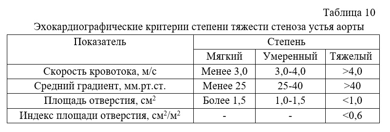Следует отметить, что средний градиент давления на аортальном клапане зависит от величины сердечного выброса.
Нагрузочное тестирование. Проведение нагрузочных тестов может быть выполнено у бессимптомных пациентов со стенозом устья аорты для выявления индуцированных нагрузкой симптомов и неадекватной реакции системного артериального давления. Добутаминовая стресс-эхокардиография рекомендуется для оценки выраженности стеноза устья аорты и "сократительного резерва миокарда " у пациентов со стенозом устья аорты и низким градиентом/низкой скоростью кровотока при наличии дисфункции левого желудочка (фракция изгнания левого желудочка менее 50%).
Рентгенография грудной клетки. Рентгенография органов грудной клетки рекомендуется для оценки размеров сердца и восходящей аорты. При проведении этого метода исследования у пациентов со стенозом устья аорты характерна "аортальная " конфигурация сердца, которая проявляется увеличением 4 дуги левого контура сердца за счет увеличения левого желудочка, подчеркнутой талией сердца за счет увеличения левого желудочка и аорты, а также смещение правого атриовазального угла вниз вследствие увеличения дуги восходящей аорты.
Компьютерная и магнитно-резонансная томография. Рекомендуется проведение магнитно-резонансной томографии (МРТ) у пациентов при неадекватном качестве и/или противоречивых результатах ЭхоКГ для оценки степени регургитации на клапане, объемов, размеров и сократимости левого и правого желудочков.
Коронарная ангиография рекомендуется перед протезированием АК (ПАК) у пациентов с АС с риском ИБС.
Зондирование сердца рекомендуется сердца для оценки тяжести АС при наличии несоответствия между клиническим и эхокардиографическим исследованиями.
План обследования:
У пациентов с симптомами стеноза устье аорты проводится:
- ЭКГ;
- Рентгенография грудной клетки;
- Трансторакальная эхокардиография.
Исследования, выполняемые по показаниям:
- Стресс-эхокардиография;
- Коронарная ангиография;
- Зондирование сердца;
- КТ, МРТ.
Показания для хирургического лечения стеноза устья аорты представлены в соответствующих руководствах.
СИНДРОМ АОРТАЛЬНОЙ НЕДОСТАТОЧНОСТИ
Порок сердца, характеризующийся обратным потоком крови из аорты в левый желудочек в диастолу вследствие нарушения целостности аортального клапана.
Клинический случай:
Пациент С., 24 лет, поступил в клинику с жалобами на повышение температуры до 39°C с ознобами, обильным потоотделением, общую слабость, ноющие боли в суставах, сердцебиение.
В прошлом ничем не болел, занимался спортом. 2 месяца назад появились боли в горле при глотании, повысилась температура до субфебрильных цифр. Лечился амбулаторно по поводу фолликулярной ангины, однако состояние продолжало ухудшаться: боли в горле усилились, температура повысилась до 39°C. В ЛОР-отделении вскрыт ретротонзиллярный абсцесс справа, после чего состояние больного улучшилось, стихли местные явления, снизилась температура. Но через неделю вновь повысилась температура до 39°C, появились ознобы, нарастала слабость. Больной госпитализирован.
Объективно: общее состояние средней тяжести. Цианоз губ. Дыхание 31 в минуту. Кожные покровы бледные, повышенной влажности, горячие на ощупь. На коже голеней, предплечий - петехиальная геморрагическая сыпь. В легких везикулярное дыхание. Границы относительной сердечной тупости: правая на 1 см вправо от края грудины в 4-ом межреберье, левая - по срединно-ключичной линии. При аускультации II тон во II межреберье справа ослаблен, выслушивается диастолический шум, который проводится в зону Боткина-Эрба. Пульс 62 в минуту, ритмичный, АД 120 и 55 мм рт. ст. Живот мягкий, безболезненный. Печень на 2 см ниже реберной дуги, безболезненная. Селезенка у края реберной дуги безболезненная. Симптом Пастернацкого слабо положительный с обеих сторон. Отеки на голенях, стопах.
Анализ крови: эритроциты 2,9х1012/л, Hb - 105 г/л, лейкоциты 14,2х109/л, лейкоформула: эозинофилы - 1%, п/я нейтрофилы - 14%, с/я нейтрофилы - 51%, лимфоциты - 20%, моноциты - 14%, СОЭ - 48 мм/час.
Биохимия крови: альбумины - 38,4%, глобулины - 61,6% , 1-4,8%, 2 - 8,2%, - 18,3%, - 30,2%, сиаловая кислота – 0,340, СРБ ++++.
Посев крови на стерильность - выделен зеленящий стрептококк.
Эхокардиография. Створки аортального клапана деформированы, на некоронарной створке определяется вегетация, недостаточность аортального клапана II степени. Умеренная дилатация левого желудочка.
Рентгенография органов грудной клетки. При рентгенографии грудной клетки определяется "аортальная " конфигурация сердца. Легочные поля без очаговых и инфильтративных теней.
10 мм/мВ 50 мм/с
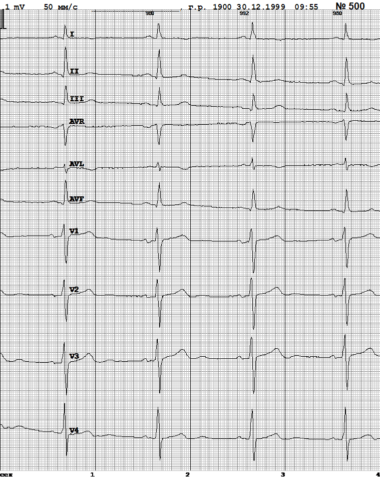
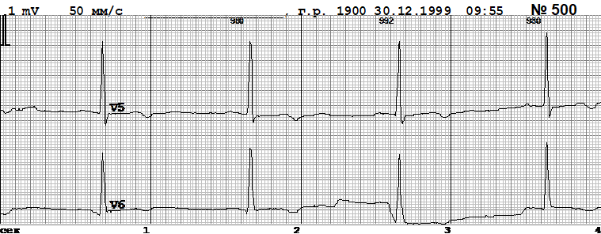
Рис. 32. ЭКГ. Заключение. Ритм синусовый. Вольтаж удовлетворительный. Электрическая ось - срединное положение. Признаки гипертрофии левого предсердия, левого желудочка с нарушением процессов реполяризации.
ЗАДАНИЕ 11:
Этиология:
- Идиопатическое расширение аорты;
- Врожденные пороки аортального клапана (чаще всего двустворчатый аортальный клапан);
- Склеротическая дегенерация;
- Ревматизм;
- Инфекционный эндокардит;
- Системная гипертензия;
- Миксоматозная дегенерация;
- Расслоение восходящего отдела аорты;
- Синдром Марфана.
Выделяют также более редкие причины аортальной недостаточности, такие как травматические повреждения аортального клапана, анкилозирующий спондилит, сифилитический аортит, ревматоидный артрит, деформирующий остеоартроз, гигантоклеточный аортит, синдром Эллерса – Данлоса, синдром Рейтера, непостоянный субаортальный стеноз, а также дефект межжелудочковой перегородки с пролапсом аортального клапана.
Патогенез. Такие причины как инфекционный эндокардит, травма или расслоение аорты чаще всего приводит к острой тяжелой аортальной регургитации, при которой исходно нормальный левый желудочек сильно перегружается большим объемом крови, которая возвращается обратно из аорты. При этом значительно повышается давление наполнения левого желудочка, снижается сердечный выброс, это сопровождается увеличением конечно-диастолического объема левого желудочка и левого предсердия, что создает высокий риск развития отека легких вследствие быстрого переполнения малого круга кровообращения, или кардиогенного шока вследствие значительного снижения сердечного выброса. Наибольшие нарушения внутрисердечной гемодинамики происходят у пациентов с исходной гипертрофией левого желудочка, с небольшим размером полости левого желудочка, а также с уменьшением резерва преднагрузки.
Следует отметить, что при острой тяжелой аортальной регургитации у пациентов часто развивается ишемия миокарда ввиду двух основных причин:
- конечно-диастолическое давление в левом желудочке приближается к диастолическому давлению в аорте и в коронарных артериях, что приводит к снижению перфузии субэндокарда;
- дилатация левого желудочка в сочетании с тахикардией (развивается как механизм компенсации при снижении сердечного выброса) приводят к увеличению потребности миокарда в кислороде.
Так или иначе, у многих пациентов, большинство из вышеуказанных причин приводят к хронической аортальной регургитации с длительным бессимптомным периодом и постепенной медленно прогрессирующей дилатацией левого желудочка. Вначале у этих пациентов происходит увеличение конечно-диастолического объема левого желудочка и податливости стенки, это приводит к увеличению объема без значимого увеличения давления наполнения и развития гипертрофии, а также к увеличению ударного объема, при этом систолическая функция левого желудочка длительное время остается нормальной. В тоже время у этих пациентов наблюдается увеличение постнагрузки и, следовательно, к дальнейшему развитию гипертрофии левого желудочка. Таким образом, при аортальной недостаточности наблюдается перегрузка объемом и давлением левого желудочка. В дальнейшем, по мере нарастания гипертрофии левого желудочка позволяет ему длительное время поддерживать нормальный сердечный выброс. Однако, по мере дальнейшего нарастания постнагрузки происходит развитие дилатации левого желудочка и снижение его систолической функции с развитием типичной картины сердечной недостаточности.
Течение аортальной недостаточности и прогноз пациентов. По данным некоторых авторов, поражение аортального клапана наблюдается у 29% людей старше 65 лет, при этом подтвержденная недостаточность или стеноз устья аорты - только у 2%.
Прогноз пациентов с аортальной недостаточностью хуже при развитии систолической дисфункции левого желудочка, при этом на начальных этапах она может быть обратимой при своевременном протезировании аортального клапана. Следует отметить, что систолическая функция левого желудочка, а также конечно-систолический размер являются самыми важными показателями выживаемости и послеоперационной функции левого желудочка у пациентов, которые нуждаются в протезировании аортального клапана при хронической аортальной недостаточности.
Жалобы пациентов. При острой тяжелой аортальной недостаточности у пациентов развивается острая сердечная недостаточность (сердечная астма, отек легких), а также кардиогенный шок, нередко наступает смерть. Хроническая аортальная недостаточность длительное время протекает бессимптомно или малосимптомно.
К типичным жалобам при аортальной недостаточности относят:
- Одышка (может быть различной степени выраженности);
- Удушье (приступы сердечной астмы, в том числе в ночное время);
- Боли в области сердца или за грудиной;
- Сердцебиение;
- Перебои в работе сердца (при развитии аритмий);
- Снижение толерантности к физической нагрузке;
- Утомляемость;
- Головокружение;
- Нарушения зрения;
- Синкопальные состояния;
- Общая слабость.
Данные анамнеза:
- Ревматизм в анамнезе;
- Инфекционный эндокардит в анамнезе;
- Артериальная гипертензия в анамнезе;
- Пороки развития аортального клапана;
- Системные заболевания соединительной ткани;
- Синдром Марфана;
- Врожденные пороки сердца.
Данные общего осмотра. У пациентов с тяжелой аортальной недостаточностью можно выявить цианоз (кожи и видимых слизистых оболочек), акроцианоз. При тяжелом течении аортальной недостаточности пациенты могут занимать положение ортопноэ.
При развитии застоя крови по большому кругу кровообращения у пациентов могут наблюдаться отеки нижних конечностей, увеличение живота в объеме, набухание шейных вен.
При осмотре области сердца в редких случаях можно выявить сердечный горб, связанный с аневризмой аорты, или дилатацией левого желудочка.
При осмотре у пациентов можно выявить симптом Мюссе (кивание головы в такт сердечным сокращениям), "пляску каротид " (видимая систолическая и диастолическая пульсация сонных артерий). Также у многих пациентов можно обнаружить видимую усиленную пульсацию левожелудочкового толчка (вследствие гипертрофии левого желудочка).
Alfred De Musset (1810-1857) - французский поэт, драматург и прозаик. Страдал аортальной недостаточностью, которая развилась в качестве осложнения сифилитического аортита, у него наблюдалось характерное покачивание головы и в дальнейшем в его честь был назван симптом.
Данные пальпации. При сдавлении ногтевого ложа можно выявить капиллярный пульс Квинке.
Heinrich Irenaeus Quincke (1842-1922) - немецкий врач, терапевт и хирург, автор большого числа открытий и новшеств в области медицины. В его честь назван отек Квинке и пульс Квинке.
При пальпации области сердца левожелудочковый толчок, как правило, усиленный, смещен влево и вниз за счет гипертрофии левого желудочка.
При пальпации у пациентов с развитием сердечной недостаточности можно выявить признаки отека передней брюшной стенки за счет асцита, увеличение печени, положительный гепатоюгулярный рефлюкс.
Данные перкуссии. При перкуссии определяется смещениеверхней границы относительной сердечной тупости до второго межреберья по парастернальной линии слева, левой границы – влево и вниз. Также при перкуссии можно выявить смещение правой границы сосудистого пучка за счет дилатации или аневризмы аорты.
Данные аускультации. При аускультации сердца I тон на верхушке сердца, как правило, ослаблен (за счет переполнения левого желудочка кровью), II тон ослаблен (за счет неполного смыкания створок аортального клапана). В зоне аорты и в точке Боткина-Эрба выслушивается чаще всего высокочастотный убывающий диастолический шум, связанный со IIтоном и проводящийся в зону верхушки сердца. Шум будет усиливаться при проведении пробы с изометрическим мышечным напряжением, может усиливаться при быстром приседании на корточки.
При выраженной аортальной недостаточности на верхушке сердца можно выслушать шум Остина Флинта, представляющий собой низкочастотный грохочущий диастолический шум, чаще всего мезодиастолический или пресистолический.
При аускультации бедренных артерий можно выслушать двойной тон Траубе, при сдавлении фонендоскопом бедренных артерий можно выслушать двойной шум Дюрозье.
P.L. Duroziez (1826-1897) - французский врач.
Диагностика. Лабораторные исследования для диагностики аортальной недостаточности не проводятся. Среди методов инструментальной диагностики пациентам выполняется электрокардиография, эхокардиография и рентгенография грудной клетки.
Данные электрокардиографии не подтверждают диагноз аортальной недостаточности, однако позволяют выявить признаки гипертрофии левого желудочка и левого предсердия, а также признаки ишемии миокарда. Также по ЭКГ можно выявить нарушения ритма сердца, такие как экстрасистолия, пароксизмальная тахикардия, фибрилляция предсердий и другие.
Эхокардиография является основным методом диагностики аортальной недостаточности, а также оценки тяжести (таблица 11) и прогноза заболевания. У стабильных пациентов эхокардиография должна выполняться не чаще чем 1 раз в год. Эхокардиография рекомендуется для диагностики и оценки причины хронической АР, а также пациентам с расширением корня аорты или двухстворчатым аортальным клапаном для оценки регургитации и степени расширения аорты.
Нагрузочные тесты при хронической АР рекомендуются для оценки функциональных возможностей и выявления симптомов у пациентов, имеющих атипичную картину болезни, а также для оценки симптомов и функциональных возможностей перед участием в спортивных соревнованиях.
Рентгенография грудной клетки у пациентов с аортальной недостаточностью рекомендуется для оценки размеров сердца и восходящей аорты. У пациентов с тяжелой аортальной недостаточностью при рентгенографии грудной клетки часто выявляется выбухание 4 дуги левого контура сердца за счет дилатации левого желудочка, 3 дуги левого контура за счет дилатации левого предсердия, а также подчеркивание талии сердца ( "аортальная " конфигурация сердца). Также при развитии дилатации или аневризмы аорты может выявляться увеличение 1 дуги правого контура сердца.
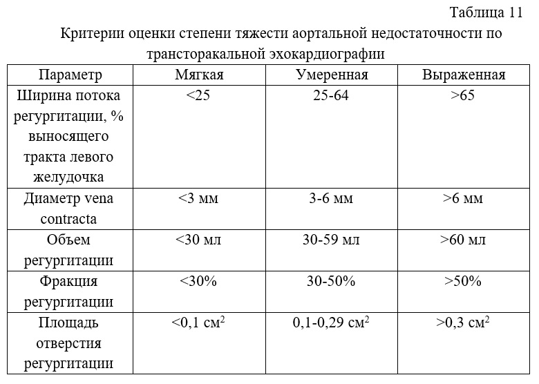Компьютерная и магнитно-резонансная томография рекомендуется для начальной и последующей оценки объемов, функции ЛЖ, тяжести регургитации у пациентов с АР, если визуализация при эхокардиографии неудовлетворительная.
Коронарная ангиография рекомендуется до протезирования аортального клапана у пациентов с признаками ИБС.
Зондирование сердца рекомендуется для оценки тяжести регургитации, функции ЛЖ или определения размера корня аорты, когда неинвазивные тесты являются неинформативными или противоречат клиническим данным у пациентов с АР.
План обследования:
У пациентов с симптомами митральнойнедостаточности проводится:
- ЭКГ;
- Рентгенография грудной клетки;
- Трансторакальная эхокардиография;
Исследования, выполняемые по показаниям:
- Стресс-эхокардиография;
- Зондирование сердца;
- Компьютерная и магнитно-резонансная томография.
Показания для хирургического лечения аортальной недостаточности представлены в соответствующих руководствах.
СИНДРОМ ТРИКУСПИДАЛЬНОЙ НЕДОСТАТОЧНОСТИ
Заброс крови из правого желудочка в правое предсердие в систолу желудочков вследствие нарушения целостности трикуспидального клапана.
Незначительная физиологическая трикуспидальная регургитация выявляется у 60-90% здоровых людей по данным эхокардиографии, однако она не сопровождается какими-либо клиническими признаками.
На долю трикуспидальных пороков приходится, по разным данным, от 18 до 40%. Среди ревматических пороков сердца пороки трикуспидального клапана составляют 15-30%. В последнее время участились случая наркомании и инвазивных внутрисердечных вмешательств, что привело к росту частоты развития инфекционного эндокардита трикуспидального клапана, достигнув более 7% от всех его локализаций.
Клинический случай:
Пациент П., 27 лет. Поступил в клинику с жалобами на одышку при незначительной физической нагрузке, учащенное сердцебиение, отеки голеней, тяжесть в правом подреберье, увеличение размеров живота.
В анамнезе - героиновая зависимость, перенес острый инфекционный эндокардит, гепатит С, ВИЧ- инфицирован.
При осмотре состояние тяжелое. Кожа бледная с иктеричным оттенком. Набухание яремных вен. Положительный венный пульс. Отеки на ногах симметричные до уровня коленных суставов. Живот увеличен в размерах, видна сеть расширенных вен на брюшной стенке. Тоны сердца ослаблены. Ритм правильный. Систолический убывающий шум с эпицентром у основания мечевидного отростка справа от него. Здесь выслушивается III тон. АД 105 и 65 мм рт. ст. ЧСС 88 в 1 минуту. Печень выступает на 5 см, край плотный.
Эхокардиография. Правое предсердие диаметром 60 мм, индекс объема 40 мл/м2. Правый желудочек увеличен, определяются признаки снижения его систолической функции. Определяются вегетации на трикуспидальном клапане. Недостаточность трикуспидального клапана III степени. Дилатация ствола легочной артерии. Значительное повышение давления в легочной артерии.
Рентгенография органов грудной клетки.
>При рентгенографии грудной клетки определяется выбухание обеих дуг правого контура сердца.
10 мм/мВ 50 мм/с
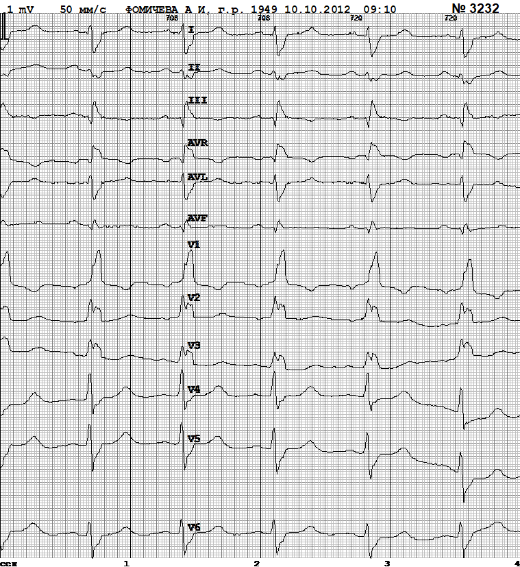
Рис 33. ЭКГ. Заключение. Синусовый ритм. ЭОС - резко отклонена вправо. Полная блокада правой ножки пучка Гиса. Признаки гипертрофии правого желудочка.
ЗАДАНИЕ 12:
1. Назовите синдром, описанный у пациента.
2. Что послужило причиной развития данного синдрома?
Этиология:
- Инфекционный эндокардит;
- Ревматизм;
- Миксоматозная дегенерация;
- Легочная гипертензия (первичная легочная гипертензия, а также при тромбоэмболии легочной артерии, митральных пороках сердца, дефекте межпредсердной и межжелудочковой перегородки и других заболеваниях);
- Травмы;
- Инфаркт миокарда правого желудочка (редко);
- Синдром Ислера-Гедингера;
- Врожденная деформация клапана (при аномалии Эбштейна, дефектах атриовентрикулярного каналах).
Патогенез. Трикуспидальная недостаточность сопровождается объемной перегрузкой правого предсердия и довольно быстро приводит к его дилатации без развития существенной гипертрофии. Процесс компенсации порока происходит аналогичной митральной недостаточности (см. "синдром митральной недостаточности "), однако следует помнить, что компенсаторные возможности правого предсердия значительно меньше, чем у левого, следовательно, при трикуспидальной недостаточности рано развивается застой крови по большому кругу кровообращения, сопровождающийся депонированием крови в печени и других органах брюшной полости, при этом приток крови к правому предсердию уменьшается. Трикуспидальная регургитация большого объема приводит к созданию волны обратного тока, сопровождающейся систолической пульсации яремных вен и печени. При этом среднее давление в правом предсердии увеличивается в 2-3 раза и более. Следует также отметить, что при большом объеме трикуспидальной регургитации снижается систолическая функция правого желудочка и, следовательно, объем крови, поступающего в легочную артерию, что приводит к уменьшению застоя крови в малом круге кровообращения, в том случае, если он имел место, а также преднагрузки левого желудочка. Эта гемодинамическая ситуация в некоторых случаях может иметь положительное клиническое значение при комбинации трикуспидального порока с митральными или аортальными пороками.
Течение трикуспидальной недостаточности и прогноз пациентов. Органическая трикуспидальная недостаточность чаще всего быстро прогрессирует, несмотря на проводимую терапию. Наиболее тяжелое течение имеет трикуспидальная недостаточность, которая развивается на фоне митральных пороков сердца ввиду быстрого нарастания нарушений внутрисердечной гемодинамики.
Жалобы пациентов:
- Одышка (часто легкая или умеренная);
- Сердцебиение;
- Боли в области сердца;
- Тяжесть в правом подреберье;
- Утомляемость;
- Диспепсии.
Данные анамнеза:
- Инфекционный эндокардит в анамнезе;
- Наркомания;
- Ревматизм в анамнезе;
- Врожденные пороки сердца в анамнезе;
- Легочная гипертензия в анамнезе.
Данные общего осмотра. У пациентов с трикуспидальной недостаточностью можно выявить цианоз (кожи и видимых слизистых оболочек), акроцианоз. У пациентов с выраженной правожелудочковой недостаточностью можно увидеть "лицо Корвизара ", проявляющееся одутловатым лицом, желтовато-бледным цветом кожи с акроцианозом, полуоткрытым ртом и тусклыми глазами.
При выраженной трикуспидальной недостаточности может определяться видимая пульсация шейных вен (положительный венный пульс), а также не совпадающая по времени пульсация области сердца и печени ( "симптом качелей ").
При прогрессировании правожелудочковой недостаточности у пациентов могут наблюдаться отеки нижних конечностей, увеличение живота в объеме, набухание шейных вен.
При осмотре области сердца у пациентов иногда можно выявить сердечный горб, а также видимую пульсацию в 3-4 межреберьях слева (реже справа) от грудины связанный с гипертрофией и дилатацией правого желудочка.
Данные пальпации. При пальпации области сердца часто можно выявить правожелудочковый толчок, нередко усиленный и разлитой. У пациентов с выраженной трикуспидальной недостаточностью пальпируется увеличенная печень, примерно у половины таких пациентов при пальпации можно выявить систолическую пульсацию печени ( "печеночный пульс ", симптом Фридрейха), нередко определяется положительный гепатоюгулярный рефлюкс.
При пальпации у пациентов с трикуспидальной недостаточностью можно выявить признаки отека передней брюшной стенки за счет асцита.
Данные перкуссии. При перкуссии определяется смещение правой границы относительной сердечной тупости, а также абсолютной тупости сердца. Также при перкуссии можно выявить смещение левой границы сосудистого пучка за счет дилатации легочной артерии.
Данные аускультации. При аускультации сердца I тон ослаблен, может выслушиваться диастолический III тон (ритм галопа). У основания мечевидного отростка, а также у нижнего края грудины слева выслушивается систолический шум, как правило, средней интенсивности или мягкий (грубый шум чаще всего бывает при комбинированных пороках, травмах, перфорациях створки, миксоматозной дегенерации), связанный с I тоном, постоянной громкости или усиливающийся ко II тону. Шум также усиливается на вдохе (симптом Риверо-Корвалло). В случае, если при выраженной трикуспидальной недостаточности шум становится тихим и быстро стихает, это чаще всего связано со снижением систолической функции правого желудочка.
Диагностика. Лабораторные исследования для диагностики трикуспидальной недостаточности не проводятся. Среди методов инструментальной диагностики пациентам выполняется электрокардиография, эхокардиография и рентгенография грудной клетки.
Данные электрокардиографии не подтверждают диагноз трикуспидальной недостаточности, однако позволяют выявить признаки гипертрофии правого предсердия, правого желудочка по R-, S- или RS-типу. У части пациентов можно выявить блокаду правой ножки пучка Гиса.
Эхокардиография является основным методом диагностики, а также определения степени тяжести и этиологии трикуспидальной недостаточности. При проведении этого исследования, кроме самой трикуспидальной регургитации и ее причины (инфекционный эндокардит, ревматизм, миксоматозная дегенерация и т.д.) можно выявить дилатацию правого предсердия и желудочка, повышение давления в правом предсердии, легочной артерии. Трикуспидальная недостаточность по данным эхокардиографии считается тяжелой при радиусе проксимальной изоскоростной поверхности более 7 мм, а также ширине vena contracta ≥ 7 мм, реверсивном систолическом потоке крови в печеночных венах, а также дилатации нижней полой вены и уменьшение ее коллабирования на вдохе менее 50%.
Рентгенография грудной клетки. У пациентов с тяжелой трикуспидальной недостаточностью при рентгенографии грудной клетки при развитии гипертрофии, а затем и дилатации правого желудочка, а также дилатации правого предсердия может определяться выбухание 2 дуги правого контура сердца. Также у части пациентов может определяться выбухание 1 дуги правого контура сердца за счет увеличения верхней полой вены (ввиду выраженного застоя крови).
Инвазивные методы исследования в настоящее время у пациентов с изолированной трикуспидальной недостаточностью не рекомендованы.
План обследования у пациентов с симптомами трикуспидальной недостаточности включает:
- ЭКГ;
- Рентгенография грудной клетки;
- Трансторакальная эхокардиография.
Показания для хирургического лечения трикуспидальной недостаточности представлены в соответствующих руководствах.
ЗАДАНИЯ ДЛЯ САМОСТОЯТЕЛЬНОЙ РАБОТЫ (ЭКГ)
Проведите анализ ЭКГ. Напишите заключение.
ЭКГ 1.
10 мм/мВ 50 мм/с
ЭКГ 2. 10 мм/мВ 50 мм/с
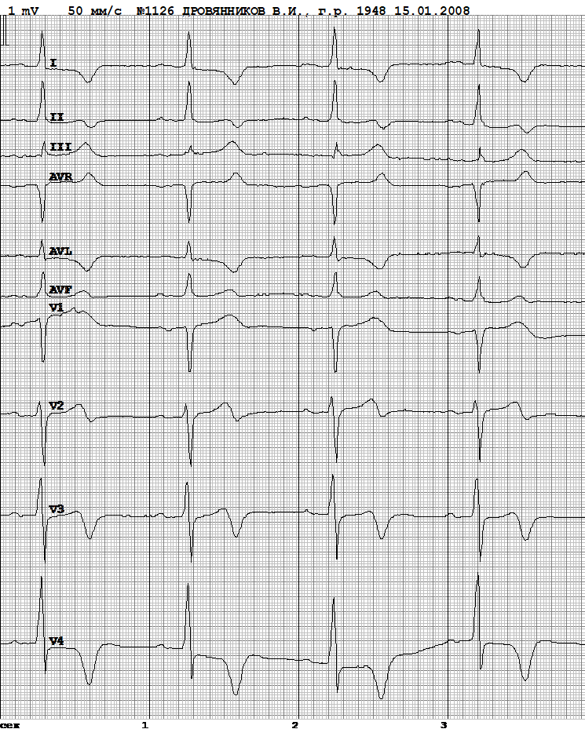ЭКГ 3.
10 мм/мВ 50 мм/с
ЭКГ 4.
10 мм/мВ 50 мм/с
ЭКГ 5.
10 мм/мВ 50 мм/с
ЭКГ 6.
10 мм/мВ 50 мм/с
ЭКГ 7.
10 мм/мВ 50 мм/с
ЭКГ 8.
10 мм/мВ 50 мм/с
ЭКГ 9.
10 мм/мВ 50 мм/с
ЭКГ 10.
10 мм/мВ 50 мм/с
РЕКОМЕНДУЕМАЯ ЛИТЕРАТУРА
1. Артериальная гипертония у взрослых. Клинические рекомендации. Российское медицинское общество по артериальной гипертонии. 2016. 70 с.
2. Аортальная регургитация. Клинические рекомендации. АССХ, ВНОК. 2016. - 36 с.
3. Аортальный стеноз. Клинические рекомендации. АССХ, ВНОК. 2016. 41 с.
4.Диагностика и лечение больных острым инфарктом миокарда с подъемом сегмента ST электрокардиограммы: клинические рекомендации. – Москва, 2013. – 152 с.
5. Диагностика и лечение больных c острым коронарным синдромом без подъема сегмента ST электрокардиограммы: клинические рекомендации. – Москва, 2015. – 95 с.
6. Диагностика и лечение легочной гипертензии: клинические рекомендации. – Москва, 2013 . – 47 с.
7. Клиническая кардиология: диагностика и лечение. В 3 томах. Под ред. Л.А. Бокерия, Е.З. Глуховой – М. : Издательство НЦССХ им. А.Н. Бакулева РАМН, 2011. – 1711 с.
8. Клинические рекомендации по ведению, диагностике и лечению клапанных пороков сердца. – М. : Издательство НЦССХ им. А.Н. Бакулева РАМН, 2009. – 353 с.
9. Митральная регургитация. Клинические рекомендации. АССХ, ВНОК, Российское научное общество рентгенэндоваскулярных хирургов и интервенционных радиологов. 2016.
10. Митральный стеноз. Клинические рекомендации. АССХ, ВНОК, Российское научное общество рентгенэндоваскулярных хирургов и интервенционных радиологов. 2016.
11. Мухин Н.А., Моисеев В.С. Пропедевтика внутренних болезней: учебник. – М. : ГЭОТАР-Медиа, 2017. – 848 с.
12. Новиков В.И., НовиковаТ.Н. – Клапанные пороки сердца. – М. : МЕДпресс-информ, 2017. – 144 с.
13. Рекомендации ЕОК по ведению пациентов с острым инфарктом миокарда с подъемом сегмента ST 2017. Рабочая группа по ведению пациентов с острым инфарктом миокарда с подъемом сегмента ST Европейского общества кардиологов (ЕОК). Российский кардиологический журнал 2018; 23 (5): 103–158.
14. Рекомендации ESC/ERS по диагностике и лечению легочной гипертензии 2015. Рабочая группа по диагностике и лечению легочной гипертензии Европейского общества кардиологов (ESC) и Европейского общества пульмонологов (ERS). Российский кардиологический журнал 2016, 5 (133): 5–64.
15. Рекомендации по ведению пациентов с острой сердечной недостаточностью на догоспитальном и госпитальном этапах оказания медицинской помощи. – Москва, 2016. – 136 с.
16. Фатенков О.В., Рубаненко О.А., Кириченко Н.А., Кузьмина Т.М. Нарушения ритма и проводимости.– Самара: Офорт, 2015. – 88 с.
17. Хроническая сердечная недостаточность: клинические рекомендации. – Москва, 2016. – 92 с.
18. Щукин Ю.В., Дьячков В.А.,Суркова Е.А., Медведева Е.А., Рубаненко А.О. Функциональная диагностика в кардиологии. – М.: ГЭОТАР-Медиа, 2017. – 336 с.
1. ВЫБЕРИТЕ СВОЙСТВА ПУЛЬСА, ХАРАКТЕРНЫЕ ДЛЯ АРТЕРИАЛЬНОЙ ГИПЕРТЕНЗИИ
-
пульс мягкий, медленный
-
пульс быстрый, скачущий
-
пульс твердый
-
пульс удовлетворительного наполнения и напряжения
2. ВЫБЕРИТЕ ДАННЫЕ ПЕРКУССИИ, СВОЙСТВЕННЫЕ ГИПЕРТОНИЧЕСКОЙ БОЛЕЗНИ
-
границы сердца не изменены
-
расширение границ сердца вверх
-
расширение границ сердца влево и вверх
-
расширение границ сердца вправо
3. ДИАГНОЗ: ГИПЕРТОНИЧЕСКАЯ БОЛЕЗНЬ I СТЕПЕНИ (МЯГКАЯ) СТАВИТСЯ ПРИ ЦИФРАХ ДАВЛЕНИЯ
-
130-139 и 85-89 мм рт. ст.
-
140-159 и 90-99 мм рт. ст.
-
160-179 и 100-109 мм рт. ст.
-
>= 180 и >= 110 мм рт. ст.
4. ДИАГНОЗ ГИПЕРТОНИЧЕСКАЯ БОЛЕЗНЬ II СТЕПЕНИ (УМЕРЕННАЯ) СТАВИТСЯ ПРИ ЦИФРАХ ДАВЛЕНИЯ
-
130-139 и 85-89 мм рт. ст.
-
140-159 и 90-99 мм рт. ст.
-
160-179 и 100-109 мм рт. ст.
-
>= 180 и >=110 мм рт. ст.
5. ДИАГНОЗ ГИПЕРТОНИЧЕСКАЯ БОЛЕЗНЬ III СТЕПЕНИ (ТЯЖЕЛАЯ) СТАВИТСЯ ПРИ ЦИФРАХ ДАВЛЕНИЯ
-
130-139 и 85-89 мм рт. ст.
-
140-159 и 90-99 мм рт. ст.
-
160-179 и 100-109 мм рт. ст.
-
>=180 и >=110 мм рт. ст.
6. ОПТИМАЛЬНЫМ АД ЯВЛЯЕТСЯ
-
<120 и <80 мм рт. ст.
-
<130 и <85 мм рт. ст.
-
130-139 и 85-89 мм рт. ст.
-
140-159 и 90-99 мм рт. ст.
-
160-179 и 100-109 мм рт. ст.
-
>= 180 и >= 110 мм рт. ст.
7. НОРМАЛЬНЫМ АД ЯВЛЯЕТСЯ
-
<120 и <80 мм рт. ст.
-
<130 и <85 мм рт. ст.
-
130-139 и 85-89 мм рт. ст.
-
140-159 и 90-99 мм рт. ст.
-
160-179 и 100-109 мм рт. ст.
-
>= 180 и >= 110 мм рт. ст.
8. ПОВЫШЕННЫМ НОРМАЛЬНЫМ АД ЯВЛЯЕТСЯ
-
<120 и <80 мм рт. ст.
-
<130 и <85 мм рт. ст.
-
130-139 и 85-89 мм рт. ст.
-
140-159 и 90-99 мм рт. ст.
-
160-179 и 100-109 мм рт. ст.
-
>= 180 и >=110 мм рт. ст.
9. ПОГРАНИЧНОЙ ГИПЕРТОНИЕЙ СЧИТАЕТСЯ
-
<120 и <80 мм рт. ст.
-
<130 и <85 мм рт. ст.
-
130-139 и 85-89 мм рт. ст.
-
140-149 и <90 мм рт. ст.
-
160-179 и 100-109 мм рт. ст.
10. ИЗОЛИРОВАННАЯ СИСТОЛИЧЕСКАЯ ГИПЕРТОНИЯ ПРИ АД
-
<120 и <80 мм рт. ст.
-
<130 и <85 мм рт. ст.
-
130-139 и 85-89 мм рт. ст.
-
>140 и <90 мм рт. ст.
-
160-179 и 100-109 мм рт. ст.
11. ОСЛОЖНЕНИЯМИ ГИПЕРТОНИЧЕСКОЙ БОЛЕЗНИ ЯВЛЯЕТСЯ ВСЕ, КРОМЕ
-
гипертонический криз
-
кровоизлияние в мозг
-
расслаивающая аневризма аорты
-
анафилактический шок
12. ПЕРВАЯ СТАДИЯ ГИПЕРТОНИЧЕСКОЙ БОЛЕЗНИ ХАРАКТЕРИЗУЕТСЯ
-
повышение АД до 160 и 95 мм рт. ст. и выше без органических изменений в "органах мишенях "
-
повышение АД до 160 и 95 мм рт. ст. и выше с поражением хотя бы одного "органа мишени "
-
органическими изменениями в "органах мишенях " с нарушением их функции
13. ВТОРАЯ СТАДИЯ ГИПЕРТОНИЧЕСКОЙ БОЛЕЗНИ ХАРАКТЕРИЗУЕТСЯ
-
повышение АД до 160 и 95 мм рт. ст. и выше без органических изменений в "органах мишенях "
-
повышение АД до 160 и 95 мм рт. ст. и выше с поражением хотя бы одного "органа мишени "
-
органическими изменениями в "органах мишенях " с нарушением их функции
14. ТРЕТЬЯ СТАДИЯ ГИПЕРТОНИЧЕСКОЙ БОЛЕЗНИ ХАРАКТЕРИЗУЕТСЯ
-
повышение АД до 160 и 95 мм рт. ст. и выше без органических изменений в "органах мишенях "
-
повышение АД до 160 и 95 мм рт. ст. и выше с поражением хотя бы одного "органа мишени "
-
органическими изменениями в "органах мишенях " с нарушением их функции
15.НАИБОЛЕЕ ХАРАКТЕРНЫМИ СИМПТОМАМИ ИНФАРКТА МИОКАРДА ЯВЛЯЮТСЯ
-
головные боли
-
сильные раздирающие боли за грудиной
-
боли в эпигастральной области
-
тошнота, рвота
-
слабость, потливость
16. ВЫБЕРИТЕ ХАРАКТЕРНЫЕ ЭКГ-ПРИЗНАКИ ОСТРОГО ПЕРИОДА ИНФАРКТА МИОКАРДА С ЗУБЦОМ Q
-
подъем ST-интервала
-
снижение ST-интервала
-
глубокий зубец S
17. ВЫБЕРИТЕ ХАРАКТЕРНЫЕ ЭКГ-ПРИЗНАКИ ИНФАРКТА МИОКАРДА БЕЗ ЗУБЦА Q
-
подъем ST-интервала
-
снижение ST-интервала с отрицательным з Т
-
глубокий зубец S
18. ВЫБЕРИТЕ ХАРАКТЕРНЫЙ ПРИЗНАК КАРДИОГЕННОГО ШОКА
-
бледность кожных покровов
-
гиперемия лица
-
АД выше нормы
-
полиурия
19. КАКИЕ КЛИНИЧЕСКИЕ СИМПТОМЫ ИНФАРКТА МИОКАРДА ВЫ МОЖЕТЕ ОТМЕТИТЬ
-
периодические колющие боли в области сердца, купирующиеся приемом седативных средств
-
боли в эпигастрии с диспепсическими расстройствами по типу изжоги, отрыжки кислым
-
интенсивные давящие боли за грудиной, не купируются валидолом, нитроглицерином
20. КАКИЕ ДИАГНОСТИЧЕСКИЕ ИНСТРУМЕНТАЛЬНЫЕ ТЕСТЫ ЯВЛЯЮТСЯ ОПРЕДЕЛЯЮЩИМИ ДЛЯ ИНФАРКТА МИОКАРДА
-
рентгенограмма органов грудной клетки
-
ЭКГ
-
клинические признаки нарушения ритма, боли в сердце, повышение температуры до 37,5о
21. ВЫБЕРИТЕ ЭЛЕКТРОКАРДИОГРАФИЧЕСКИЕ ПРИЗНАКИ ИНФАРКТА МИОКАРДА ПЕРИОД РУБЦУЮЩИЙСЯ (ИМ ПОДОСТРЫЙ)
-
глубокий Q, малый R, начинает дифференцироваться отрицательный T
-
высокий R в I и II отведениях, дискордантное смещение линии ST,T-отрицательный, не равносторонний
-
глубокий Q, малый R, подъем ST, положительный T
-
патологического Q нет, подъем ST на 4 мм выше изолинии
22. ВЫБЕРИТЕ ЭЛЕКТРОКАРДИОГРАФИЧЕСКИЕ ПРИЗНАКИ ОСТРОГО ПЕРИОДА ИНФАРКТА МИОКАРДА
-
глубокий Q, малый R, начинает дифференцироваться отрицательный T
-
высокий R в I и II отведениях, дискордантное смещение линии ST, T-отрицательный, не равносторонний
-
глубокий Q, малый R, подъем ST, положительный T
-
патологического Q нет, подъем ST на 4 мм выше изолинии
23.КАКИЕ ЭКГ ПРИЗНАКИ ХАРАКТЕРНЫ ДЛЯ ЗАЖИВШЕГО ПЕРИОДА (ПЕРЕНЕСЕННОГО) ИНФАРКТА МИОКАРДА
-
глубокий Q, отрицательный T
-
высокий R в I и II отведениях, дискордантное смещение линии ST, T-отрицательный, не равносторонний
-
глубокий Q, малый R, подъем ST, положительный T
-
патологического Q нет, подъем ST на 4 мм выше изолинии
24. ИСКЛЮЧИТЕ НЕПРАВИЛЬНУЮ КЛАССИФИКАЦИЮ СЕРДЕЧНОЙ НЕДОСТАТОЧНОСТИ
-
острая и хроническая
-
систолическая и диастолическая
-
правожелудочковая и левожелудочковая
-
с низким и высоким сердечным выбросом
-
застойная сердечная недостаточность и хроническая недостаточность кровообращения
25.ВЫБЕРИТЕ НЕХАРАКТЕРНЫЕ СИМПТОМЫ ОСТРОЙ ДЕКОМПЕНСАЦИИ ХРОНИЧЕСКОЙ СЕРДЕЧНОЙ НЕДОСТАТОЧНОСТИ
26. К ОСНОВНЫМ ПРИЧИНАМ РАЗВИТИЯ ХРОНИЧЕСКОЙ СЕРДЕЧНОЙ НЕДОСТАТОЧНОСТИ ОТНОСЯТ
27. ВЫБЕРИТЕ КРИТЕРИИ, КОТОРЫЕ НЕ ПРИМЕНЯЮТСЯ ДЛЯ ДИАГНОСТИКИ ХРОНИЧЕСКОЙ СЕРДЕЧНОЙ НЕДОСТАТОЧНОСТИ
28.ВЫБЕРИТЕ ХАРАКТЕРНЫЕ ИЗМЕНЕНИЯ ЭЛЕКТРОКАРДИОГРАММЫ У БОЛЬНЫХ С ХРОНИЧЕСКОЙ СЕРДЕЧНОЙ НЕДОСТАТОЧНОСТЬЮ
29.УКАЖИТЕ НОРМАЛЬНЫЕ ЗНАЧЕНИЯ ФРАКЦИИ ИЗГНАНИЯ ЛЕВОГО ЖЕЛУДОЧКА ПО ДАННЫМ ЭХОКАРДИОГРАФИИ
-
40-50%
-
50-55%
-
>= 55%
-
>=60%
30.КАКОЙ ТЕСТ ИЛИ ПРОБА ИСПОЛЬЗУЕТСЯ ДЛЯ ОПРЕДЕЛЕНИЯ ВЕЛИЧИНЫ ФУНКЦИОНАЛЬНОГО КЛАСС У БОЛЬНЫХ С ХРОНИЧЕСКОЙ СЕРДЕЧНОЙ НЕДОСТАТОЧНОСТЬЮ
-
проба с изометрическим мышечным напряжением
-
проба Напалкова
-
тест с физической нагрузкой
-
тест с 6-минутной ходьбой
31.ЧЕМ ОТЛИЧАЮТСЯ ОТЕКИ ПРИ ЗАБОЛЕВАНИЯХ ПОЧЕК ОТ ОТЕКОВ ПРИ СЕРДЕЧНОЙ НЕДОСТАТОЧНОСТИ
32.КАКИЕ ИЗМЕНЕНИЯ ПРИ РЕНТГЕНОГРАФИИ ЛЕГКИХ МОГУТ ВЫЯВЛЯТЬСЯ ПРИ НАЛИЧИИ ХРОНИЧЕСКОЙ СЕРДЕЧНОЙ НЕДОСТАТОЧНОСТИ
33.В ПОСТАНОВКЕ ДИАГНОЗА ХРОНИЧЕСКОЙ СЕРДЕЧНОЙ НЕДОСТАТОЧНОСТИ СЛЕДУЕТ УЧИТЫВАТЬ
34.II ФУНКЦИОНАЛЬНЫЙ КЛАСС У БОЛЬНЫХ С ХРОНИЧЕСКОЙ СЕРДЕЧНОЙ НЕДОСТАТОЧНОСТЬЮ ХАРАКТЕРИЗУЕТСЯ
35.II Б СТАДИЯ ХРОНИЧЕСКОЙ СЕРДЕЧНОЙ НЕДОСТАТОЧНОСТИ ЭТО
-
клинически выраженная стадия поражения сердца
-
начальная стадия поражения сердца
-
тяжелая стадия поражения сердца
-
конечная стадия поражения сердца
36.СОПОСТАВЬТЕ СТАДИИ ХРОНИЧЕСКОЙ СЕРДЕЧНОЙ НЕДОСТАТОЧНОСТИ И ИХ ХАРАКТЕРИСТИКИ:
I
- I СТАДИЯ
ХСН,
II - IIA СТАДИЯ ХСН,
III - IIБ СТАДИЯ ХСН,
IV - III СТАДИЯ ХСН.
-
1) начальная стадия поражения сердца
-
2) клинически выраженная стадия поражения сердца
-
3) тяжелая стадия поражения сердца
-
4) конечная стадия поражения сердца
-
5) гемодинамика не нарушена
-
6) нарушение гемодинамики в одном из кругов кровообращения
-
7) нарушение гемодинамики в обоих кругах кровообращения
-
8) выраженные изменения гемодинамики и необратимые структурные изменения органов мишеней
-
9) бессимптомная дисфункция левого желудочка
-
10) адаптивное ремоделирование сердца и сосудов
-
11) дезадаптивноеремоделирование сердца и сосудов
-
12) финальная стадия ремоделирования сердца и сосудов
37.ВЫБЕРИТЕ ПРОЦЕССЫ, НЕ ОТНОСЯЩИЕСЯ К КОМПЕНСАТОРНЫМ РЕАКЦИЯМ ПРИ РАЗВИТИИ СЕРДЕЧНОЙ НЕДОСТАТОЧНОСТИ
38.ВЫБЕРИТЕ ОСНОВНЫЕ ЖАЛОБЫ БОЛЬНЫХ С ХРОНИЧЕСКОЙ СЕРДЕЧНОЙ НЕДОСТАТОЧНОСТЬЮ
39.ВЫБЕРИТЕ РАДИКАЛЬНЫЙ СПОСОБ ЛЕЧЕНИЯ ПАЦИЕНТОВ С ТЯЖЕЛОЙ ХРОНИЧЕСКОЙ СЕРДЕЧНОЙ НЕДОСТАТОЧНОСТЬЮ
-
кислородотерапия
-
диуретики
-
нитраты
-
санаторно-курортное лечения
-
диета
-
трансплантация сердца
40.ВЫБЕРИТЕ СТАДИИ ОТЕКА ЛЕГКИХ
41.КАКОЙ ЦВЕТ МОКРОТЫ ХАРАКТЕРЕН ДЛЯ ТЯЖЕЛОГО ОТЕКА ЛЕГКИХ
-
белая
-
желтая
-
розовая
-
зеленая
42.КАКИЕ ХРИПЫ ВЫСЛУШИВАЮТСЯ У БОЛЬНЫХ ПРИ ТЯЖЕЛОМ ОТЕКЕ ЛЕГКИХ
-
сухие свистящие
-
сухие жужжащие
-
крепитация
-
мелкопузырчатые влажные хрипы
-
средне- и крупнопузырчатые влажные хрипы
43. ВЫБЕРИТЕ ПРИЧИНЫ РАЗВИТИЯ ОТЕКА ЛЕГКИХ
44.УКАЖИТЕ ВИДЫ ШОКА
45.ШОК СРЕДНЕЙ ТЯЖЕСТИ ВОЗНИКАЕТ ПРИ ПОТЕРЕ
-
10-20% объема циркулирующей крови
-
около 20% объема циркулирующей крови
-
30-40% объема циркулирующей крови
-
более 40% объема циркулирующей крови
-
более 50% объема циркулирующей крови
46. ВЫБЕРИТЕ СИМПТОМЫ, ХАРАКТЕРНЫЕ ДЛЯ СИНУСОВОЙ ТАХИКАРДИИ
47. ВЫБЕРИТЕ СИМПТОМЫ ХАРАКТЕРНЫЕ ДЛЯ ЭКСТРАСИСТОЛИИ
48.ЗУБЕЦ Р НЕ ОПРЕДЕЛЯЕТСЯ ПРИ
-
атриовентрикулярной экстрасистоле
-
желудочковой экстрасистоле
-
предсердной экстрасистоле
49.ПОСЛЕ КАКИХ ЭКСТРАСИСТОЛ ХАРАКТЕРНА ПОЛНАЯ КОМПЕНСАТОРНАЯ ПАУЗА
-
предсердных
-
из атриовентрикулярного соединения
-
желудочковых
50. ПРИ ПРАВИЛЬНОМ ЧЕРЕДОВАНИИ ЭКСТРАСИСТОЛ С ОДНИМ, ДВУМЯ И БОЛЕЕ СИНУСОВЫМИ ИМПУЛЬСАМИ ЭКСТРАСИСТОЛИЯ НАЗЫВАЕТСЯ:
-
политопной
-
вставочной
-
аллоритмической
-
полиморфной
51. ДЛЯ ПРЕДСЕРДНОЙ ЭКСТРАСИСТОЛИИ НАИБОЛЕЕ ХАРАКТЕРНО
-
отсутствие зубца Р, неизмененный комплекс QRS, неполная компенсаторная пауза
-
изменение формы зубца Р, неизмененный комплекс QRS, неполная компенсаторная пауза
-
отсутствие зубца Р, уширенный комплекс QRS, неполная компенсаторная пауза
-
отсутствие зубца Р, уширенный комплекс QRS, полная компенсаторная пауза
-
изменение формы зубца Р, неизмененный комплекс QRS, компенсаторная пауза отсутствует
52.ДЛЯ ЖЕЛУДОЧКОВОЙ ЭКСТРАСИСТОЛИИ НАИБОЛЕЕ ХАРАКТЕРНО
-
отсутствие зубца Р, неизмененный комплекс QRS, неполная компенсаторная пауза
-
изменение формы зубца Р, неизмененный комплекс QRS, неполная компенсаторная пауза
-
отсутствие зубца Р, уширенный комплекс QRS, неполная компенсаторная пауза
-
отсутствие зубца Р, уширенный комплекс QRS, полная компенсаторная пауза
-
изменение формы зубца Р, неизмененный комплекс QRS, компенсаторная пауза отсутствуе
53. ЭКГ-ПРИЗНАКИ СИНУСОВОЙ БРАДИКАРДИИ
-
сохранение правильного синусового ритма с частотой сердечных сокращений 40-59 в мин
-
колебание продолжительности интервала R-R превышает 0,15 сек
-
наличие "узкого " комплекса QRS
-
отсутствие зубцов Р на ЭКГ
54.ПРИ ЖЕЛУДОЧКОВОЙ ЭКСТРАСИСТОЛИИ ОПРЕДЕЛЯЕТСЯ
-
уширенный комплекс QRS≥0,12 сек, который следует за зубцом Р
-
неполная компенсаторная пауза
-
преждевременное появление широкого комплекса QRC≥0,12 сек без предшествующего зубца Р, компенсаторная пауза полная
-
наличие зубца Р перед экстрасистолическим комплексом
55. ПРИ ПРЕДСЕРДНОЙ ЭКСТРАСИСТОЛИИ ОПРЕДЕЛЯЕТСЯ
-
преждевременное появление зубца Р со следующим за ним комплексом QRS
-
наличие полной компенсаторной паузы
-
отрицательный зубец Р
-
отрицательный зубец Р
-
все выше перечисленное
56.ПРИ ПАРОКСИЗМАЛЬНОЙ СУПРАВЕНТРИКУЛЯРНОЙ ТАХИКАРДИИ ОПРЕДЕЛЯЕТСЯ
-
ритм правильный с частотой 140-220 в мин, зубцы Р отсутствуют, комплекс QRS не изменен
-
ритм неправильный, все интервалы R-R имеют разную величину, зубцы Р отсутствуют, зубцы R разной амплитуды
-
ритм правильный, вместо зубцов R – крупные, одинаковой формы предсердные волны с частотой 300 в мин, комплексы QRS не изменены
57.ВЫБЕРИТЕ КРИТЕРИИ, ХАРАКТЕРНЫЕ ДЛЯ ЭКСТРАСИСТОЛИИ ИЗ АТРИОВЕНТРИКУЛЯРНОГО СОЕДИНЕНИЯ
58. ВЫБЕРИТЕ НАИМЕНЕЕ ПРОГНОСТИЧЕСКИ БЛАГОПРИЯТНЫЙ КЛАСС ЖЕЛУДОЧКОВЫХ ЭКСТРАСИСТОЛ ПО КЛАССИФИКАЦИИ ЛАУНА:
-
политопная экстрасистолия
-
аллоритмия
-
единичные экстрасистолы более 30 в час
-
желудочковая экстрасистолия по типу "R на T "
-
единичная желудочковая экстрасистолия менее 30 в час
59. ПОЯВЛЕНИЕ ЭКСТРАСИСТОЛЫ ПОСЛЕ КАЖДОГО НОРМАЛЬНОГО КОМПЛЕКСА QRS НАЗЫВАЕТСЯ
60. ВЫБЕРИТЕ СИМПТОМЫ, ХАРАКТЕРНЫЕ ДЛЯ МЕРЦАНИЯ И ТРЕПЕТАНИЯ ПРЕДСЕРДИЙ
61. ЭКГ-ПРИЗНАКИ ТРЕПЕТАНИЯ ПРЕДСЕРДИЙ ПРАВИЛЬНОЙ ФОРМЫ
62.ЭКГ-ПРИЗНАКИ ТРЕПЕТАНИЯ ПРЕДСЕРДИЙ НЕПРАВИЛЬНОЙ ФОРМЫ
63. ФИБРИЛЛЯЦИЯ ПРЕДСЕРДИЙ АССОЦИИРУЕТСЯ С МНОГОКРАТНЫМ ПОВЫШЕНИЕМ РИСКА РАЗВИТИЯ
-
инфаркта миокарда
-
инфаркта предсердий
-
тромбоэмболии легочной артерии
-
ишемического инсульта
-
тромбоза вена нижних конечностей
64. РАЗВИТИЕ ИШЕМИЧЕСКОГО ИНСУЛЬТА У БОЛЬНЫХ С ФИБРИЛЛЯЦИЕЙ ПРЕДСЕРДИЙ ЧАЩЕ ВСЕГО СВЯЗАНО С
-
атеросклерозом артерий брахиоцефального ствола
-
варикозной болезнью вен нижних конечностей
-
тромбоэмболией в церебральные артерии
-
стойкой артериальной гипертензией
65.ПРИ МИТРАЛЬНОМ СТЕНОЗЕ У ПАЦИЕНТОВ МОЖЕТ ПАЛЬПИРОВАТЬСЯ:
-
правожелудочковый толчок
-
левожелудочковый толчок
-
систолическое сердечное дрожание
-
диастолическое сердечное дрожание
-
систоло-диастолическое сердечное дрожание
66. ПРИ АУСКУЛЬТАЦИИ СЕРДЦА У ПАЦИЕНТОВ С МИТРАЛЬНЫМ СТЕНОЗОМ КАК ПРАВИЛО ВЫСЛУШИВАЕТСЯ
67. КАКОЙ ШУМ ИСЧЕЗАЕТ У ПАЦИЕНТА С МИТРАЛЬНЫМ СТЕНОЗОМ И ФИБРИЛЛЯЦИЕЙ ПРЕДСЕРДИЙ
-
протодиастолический
-
мезодиастолический
-
пресистолический
-
систолический
68. СИМПТОМ МЮССЕ И "ПЛЯСКА КАРОТИД " ХАРАКТЕРЕН ДЛЯ
-
митрального стеноза
-
митральной недостаточности
-
стеноза устья аорты
-
аортальной недостаточности
-
трикуспидального стеноза
-
трикуспидальной недостаточности
69.ПРИ КАКОМ ПОРОКЕ СЕРДЦА МОЖЕТ ВЫСЛУШИВАТЬСЯ ШУМ ОСТИНА ФЛИНТА
-
тяжелой митральной недостаточности
-
тяжелой аортальной недостаточности
-
тяжелой недостаточности клапана легочной артерии
-
тяжелой трикуспидальной недостаточности
-
тяжелом митральном стенозе
70. ИРРАДИАЦИЯ ШУМА НА СОННЫЕ АРТЕРИИ И В ЯРЕМНУЮ ЯМКУ ХАРАКТЕРНА ДЛЯ
-
митрального стеноза
-
стеноза устья аорты
-
трикуспидального стеноза
-
стеноза устья легочной артерии
-
недостаточности аортального клапана
71. КАПИЛЛЯРНЫЙ ПУЛЬС КВИНКЕ НАБЛЮДАЕТСЯ ПРИ
-
митральном стенозе
-
митральной недостаточности
-
стенозе устья аорты
-
аортальной недостаточности
-
трикуспидальном стенозе
-
трикуспидальной недостаточности
72.ТИПИЧНАЯ ИРРАДИАЦИЯ ШУМА ПРИ МИТРАЛЬНОЙ НЕДОСТАТОЧНОСТИ
-
в левую подмышечную область
-
в правую подмышечную область
-
на сонные артерии
-
в яремную ямку
-
в межлопаточное пространство
73.МЕЗОСИСТОЛИЧЕСКИЙ ЩЕЛЧОК ХАРАКТЕРЕН ДЛЯ
-
митрального стеноза
-
митральной недостаточности
-
стеноза устья аорты
-
недостаточности аортального клапана
-
пролапса митрального клапана
-
пролапса трикуспидального клапана
74. СИСТОЛИЧЕСКОЕ СЕРДЕЧНОЕ ДРОЖАНИЕ ВО II МЕЖРЕБЕРЬЕ СПРАВА ОТ ГРУДИНЫ ХАРАКТЕРНО ДЛЯ
-
аортальной недостаточности
-
стеноза устья аорты
-
митральной недостаточности
-
митрального стеноза
-
трикуспидального стеноз
- РЕЗУЛЬТАТЫ
- Время прохождения теста: 0
- Общее колличество вопросов: 74
- Не отвечено: 0
- Правильные ответы: 0
- Не правильно: 0